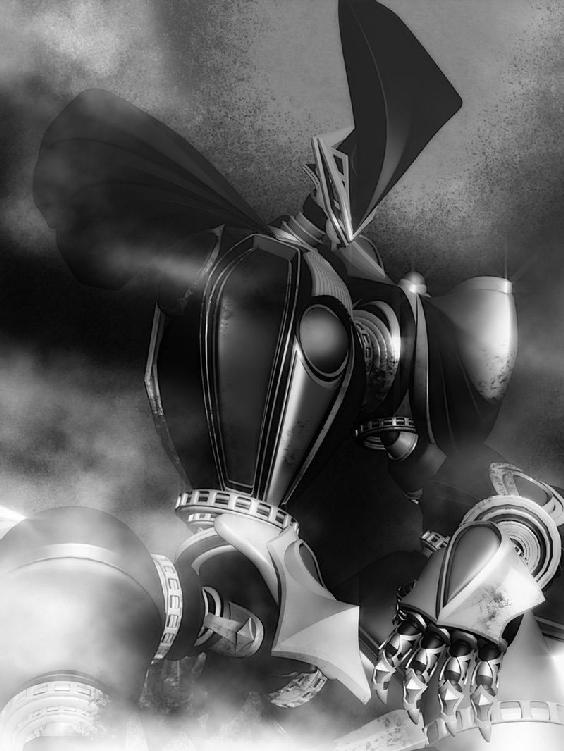
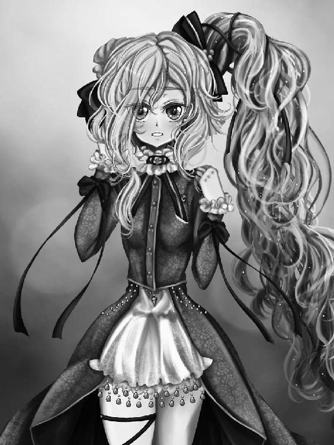
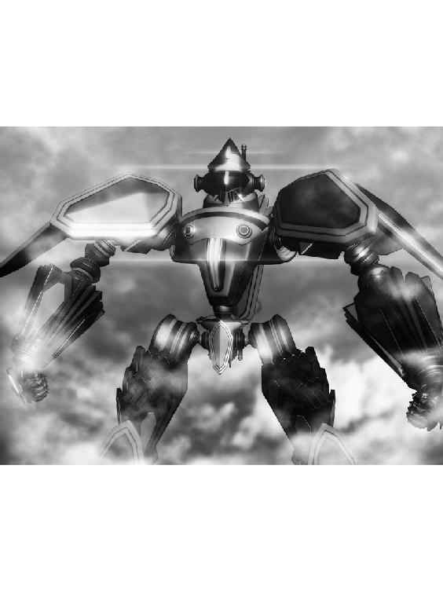

| リズベルルの魔２ フェアルージュ篇～道化師の生き様～ ほんとうの物語シリーズ | |
| ときてっと | |
| TOKITETO (2016) | |
リズベルルの魔２ フェアルージュ編～道化師の生き様～
ほんとうの図書館１
青々とした葉に透けた光が、辺りを一面緑で照らす。
清涼なる森の中を、しかし憂鬱気な表情で歩きながら、ランバートは重く溜息を吐く。
木々の間へと目を凝らしながら、返事等期待せず呼びかければ、返ってくるのは葉の揺れるざわめきと動物の気配。
「姫～！ イユレール様！ ......はぁ、困ったもんだよ、まったく」
近頃のイユレール姫ときたら、禁を破ってこの森に出入りするようになったばかりか、すっかり入り浸る有様だ。
一体草木ばかりのこの森で何をしているのやら、野兎相手に狩の真似ごとかとも思ったが、一時お熱だった弓も近頃持ち出す様子も無く、とするとさっぱり見当も付かなくて、ランバートは心配するやらうんざりするやら、この所は真相を付きとめる気持ちも失せ、半ば諦めの心地だった。
「御転婆がバレたら僕だって叱られるんだから、イユレール様はそこんとこ判ってほしいよな」
今日何度目かの溜息をついて、ランバートは近くに倒れていた太い幹に腰掛ける。
どうせ探したって見つからないんだ、ひょっこり出てくるのを待とうじゃ無いか。
そんな事を考えてうんと伸びをした時......。
「わぁっと！」
突然腰掛けていた幹が傾いて、ランバートは背中から地面に転げ落ちる。
間の抜けた声を上げてしまった自分を情けなく思いながら、ああ、服が泥だらけだ......と立ちあがってみれば、土の上を転がったにしてはそういう気配がない。
おや、と思い足元を見やれば、奇妙な事に土の上には上等な絨毯が敷かれているでは無いか。
一体全体これはどうした事だ、と首をかしげるや、絨毯の上に置かれた一冊の本が目に留まる。
「何だ、これは」
拾い上げて見れば、それは赤い表紙に金の装飾が美しい、一抱え程もある大判の本である。
はて、誰かの落し物だろうかと辺りを見渡してみるが、勿論人影等見当たらない。
大体、この絨毯は何なのだ、と思いながら、何と無しにその上に腰を下ろす。
どうせ暇なのだ、この本は時間つぶしに丁度良い。絨毯も持ち主が誰か判らぬが、使わせて貰おうでは無いか。
そうしてランバートは本の表紙を開く。
物語は何処とも知れぬ異界の地、そのまた異国エコーデュオンから招かれた魔人・ジンと、その招き主であるリズベルルの物語。
過去を悔い、道筋を見失ったジンが異界で己が使命を見出し、人々の為に剣を振るうと言った内容だった。
一通り読み終わった所で、ランバートははっと我に返り顔を上げ、夢現と言った気持ちで辺りを見渡す。
そこがすっかり歩き慣れてしまった森の中である事を理解すると、ランバートはふうっと息を吐き出した。
「いや、すっかり熱中してしまっていた......ううん？ 随分長く読んでいた割に、全然時間が経っていない様だ......いや、気のせいか」
誰に言い訳するでも無く呟いて、ランバートは頭をかく。
それからふと気付いた事があって、イユレール姫の顔を思い出しふっと笑った。
「成程......何時ぞや姫様が仰っていた〝ノルアード様〟と言うのはこの事か......なぁんだ、物語の登場人物だったなんて、イユレール様も可愛らしい所があるじゃ無いか」
さっきまで自分もその物語に熱中していた事を棚に上げて、ランバートはにまにまと笑む。
さぁて、本も読み終わった事だし、からかいの種も一つ出来た。ここはイユレール姫を探しに戻ってみるかとランバートが立ち上がりかけた時。
「あ～っ！」
「うわぁっ!!」
耳元で突如上がった声に、ランバートは悲鳴を上げていた。
わっと驚いて声のした方を見やるが、そこには誰もいない。
突然の事に混乱して、ランバートが背筋をぞっとさせていると、目の前をきらきらした光が過った。
何だ、と思う間もなく、ぱちくりと瞬きをするそれと視線が合う。
「む、虫!?」
「虫ってなんだ～っ！ 失礼でしょ～」
言い返してきたのは、一人の少女。
いや、少女の形をした何か、である。
何せそれはランバートの手首から肘まで位の背丈しか無く、背中に機械の翅を背負っていて、言うなればそう......。
「よ、妖精......？」
「どう見てもそうでしょ？ 虫はないよ、虫は。失礼な人」
腕を組んで、妖精......？ はふんっと顔を背けたかと思うと、今度は一転笑顔になって、ランバートの周りをくるくると跳びまわる。
「妖精って言っても、お人形だけどね。妖精人形だけどね。機械妖精ともいう。ほら、音、聴いてみる？」
「え、あの、ちょっと」
ランバートがまごまごするのもお構いなしに、妖精人形はランバートの頭を抱く様に自分の体を押しつけてくる。
苦しいんですが、と思いながら耳を澄ますと、成程妖精人形の体内からは生き物のそれと言うよりは機械的な駆動音が聞こえてくるでは無いか。
解放されたランバートは甚く感心して、羽ばたきもせず優雅に中空に留まり続ける妖精人形、あるいは機械妖精をまじまじと見つめた。
頬を突いてみたり、頭を撫でてみたり、握手をしてみたり。
「成程、作りもの。はぁ、これは良くできているなぁ......」
「でしょ？ ミューメルは高級品なんだから！」
「え、素手で触っちゃった！」
こんな精巧なカラクリを壊すような事があったら大事である。
わっと妖精人形......今、ミューメルと名乗ったか......から飛びのいて慌てるランバート。
イユレール姫お付きの騎士でありながら、小心者であった。
「あの～、そろそろ出てきてもらえませんかね」
「なにが～？」
「いや、この人形を操っている誰か......です」
「はぁ......」
半眼になって、ミューメルは呆れたように溜息を吐く。
それから種も仕掛けもありませんと見せ付ける様にくるりと一回転してみせた。
「あのね、ミューメルを吊る糸が見える？ 腹話術してる様に見える？ ミューメルは人形の妖精で妖精の人形なの！ 高級品なんだから一人で考えて一人で動くに決まってるでしょ～？」
「......ほんとに？」
「ほんとだって！」
俄かに信じられぬが、目の前で飛んで喋っているミューメルを見るに本当の事としか思えない。
最早大げさに驚くのも妙な気がして、ランバートはふうんと頷くほか無かった。
「なんか急に醒めてない？ もうちょっとわ～って、驚いてよ～！」
と理不尽に喚くミューメルであった。
「いやあ、すると君......この本は君のって訳だ」
「そうそう、そうだ、あなた。なんで勝手に読んでる訳～!? これ、私が司書さんから預かって来たものなのに！ 勝手に読まれたら困っちゃう」
「だってこんなとこに捨ててあるから......」
「捨ててないでしょ!? これはね～、虫干ししてるの！ って、別に虫に食われてるんじゃ無くて、たま～に本もお日様にあたりたいかな～って、日向ぼっこ？」
ミューメルはランバートの手から本を取り上げると、思いのほかある重量に耐えられなかったのか、ふらふらとよろめく。
危なっかしくて思わず本を支えてやると、ミューメルはふうっと額を拭って微笑んだ。無論、人形なので汗なんかこれっぽっちもかいていない。
「あ～、あなたあれでしょ、ランバートだ」
「え、なんで僕の名前を......」
「へっぽこ騎士のランバート」
「......、」
「司書さんとお姫様がお話してるの聞いたんだ～。可愛いよね、お姫様～」
成程......と額に手を当ててランバートは唸る。
近頃イユレール姫がこの森に入り浸っているのは、詰まる所その司書さんとやらが原因では無いか。
それにしても、へっぽこ騎士は酷い。酷過ぎる。大体、仮にへっぽこだったとして、ランバートをへっぽこたらしめる原因を作っているのは往々にしてイユレール姫その人である。
イユレール姫が御転婆をすればランバートが迷惑を被り、火を消して、怒られるのだ。そこんとこを判ってほしい。
それにしても、この森の中に図書館があっただなんて知らなかった。
「ええと......ミューメル」
「わ、名前呼んでくれた～！」
「......イユレール様の所に案内してくれるかな、君、居場所知ってるんでしょ」
「う～ん」
と、ミューメルは少しの間考え込んで、申し訳なさそうに微笑みながら言う。
「無理だと思う」
「どうして？」
「だってランバート、これまで一度だってほんとうの図書館に入れた事無いでしょ？」
ほんとうの図書館？ とランバートが首を傾げていると、ミューメルはう～んとまた考えた後、またまた申し訳なさそうに言うのだった。
「お呼びでない......って感じ？」
がっくりと肩を落とすランバートである。
大きく溜息を付きながら絨毯の上に腰を下ろすと、膝の上にぼてっと重たい感触。
見やれば、乗っかっているのは先ほどの赤い本。
「元気だしてだして！ かわいそうだからこの本貸したげる。お姫様がお帰りになるまで、楽しいお話を読んで元気になろ～！」
「いや、でもこの本さっき読んだ......ってあれ？」
ぱらぱらと本を捲ると、奇妙な事に見覚えの無いページが目に留まる。
さっき読んだ時と厚さは変わらないと言うのに、終わりの続きが出現しているでは無いか。
「ほらほら、つづきつづき！」
これは一体どうした事だと思いながら、ランバートはミューメルに促されるまま、ページを開くのだった......。
１．奇術ショーの夜、舞う道化師
竜神に守られた街・シェラダン。
穏やかで安定したこの土地を見渡すかのように、その塔は聳えていた。
それはこの街の平和の要であり、未だ起こる事の無い未来を予言する......観測塔。
今は亡き偉大な形定学者・ラスティノフが残した先見の塔の真上に降り立つ影があった。
辺りは、闇。夜闇に隠れ、すらりと塔の上に降り立ったのは奇妙な出で立ちの、男。
奇抜な色彩を身に纏い、それでいて闇には不思議と馴染むかのような装い。顔は嘆きの図柄で隠され、その姿は正しく道化と言うのが相応しい。
道化師は泣き顔の装いに似合わぬ素早さで屋根を滑り降りると、塔の硝子張りの一面に石を付けたロープを投げ込み、割れた破片を踏みつけて、容易く内部に降り立った。
白塗りのペイントの奥で、道化師の目がすっと細められる。
淡い灯りが眩しかったのだろうか。塔の内部で光るもの......それは、魔だ。
外界より招かれ、このエンダージェンに置いて消費される〝力〟、即ち〝魔〟。
これが、塔に隠された秘密の力。予言の力の源であり、道化師が求めるもの。
「これさえあれば......俺も」
知らず、道化師は一人、呟いている。
眼前で絶え間なく回転する光球こそが、〝ヨグソトース球〟。正確には最も御し易いとされるライドムルドの魔を、一定条件下で高速回転させる事で疑似的に作りだしたヨグソトース球の模倣だった。
エンダージェンの人間は形質に対して魔を招く。その形は印と呼ばれ、三角の印には三角の魔。四角の印には四角の魔。それぞれ同じ形質を持ったもの同士で無いと反応しない。
三角錐状をしているとされるエンダージェンにおいては、三角の魔、即ちライドムルドの魔が最も普遍的とされ、その印を持つ対象で溢れている。
道具、乗り物、身近なものから、果ては弦奏鎧まで......このエンダージェンで魔の力を必要としないものは殆ど無い。魔の扱いに長けた者は必然的に力を持ち、地位を得る。
そしてこの眼前で廻る光の正体......球の魔は、特別な魔だ。
球の魔は名をエコーデュオンと言う。
それは完全を表し、全てを内在するものであり、何処にでも遍在するとされる果てしなき力。
だが、遍在するが故に触れがたく、何者の招きにも応じぬ幻の魔。
このシェラダンは、その力を有する唯一の街だ。
道化師は塔の中を舐め回す様に眺める。
絶え間なく回転を続けるヨグソトース球を中心に、ほぼ円形を成す多角型の部屋は整然とした構えだった。
殆どが硝子張りの壁際に等間隔で設けられた書架には数々の資料が並び、この一室は魔の制御と研究室とを兼ねている様子だ。
道化師は試しに書架から本を一冊抜き取ると、手早く中身を確かめる。
球の魔に関する核心的な情報。それを道化師は求めているのだ。
この観測塔の技術をシェラダンは広く公開しているが、他の街で同様の装置を組み立てても、未だかつて正常に働いた例は一つも無い。
多くの形定学者は球の魔を招く器となる土地の問題だと考えており、この観測塔はシェラダンの街でのみ機能すると言うのが一般の見解だが、道化師の考えは違っていた。
何か、公開されている情報とは別に、必要となる要素がある。
シェラダンはそれを秘密にしているに違いないのだ。それを暴き、エコーデュオンの力を手中に収める事こそ、道化師の目的だった。
そして、それが隠されているとしたら、一般に公開されていないこのヨグソトース球のある間に違いない。
まんまと塔に忍び込み、書架に並ぶ資料を目にした時、道化師はその予感が的中していた事を確信し、歓喜した。
しかし、調べても調べても、出てくるのはシェラダンが公開しているものと同じ情報ばかり。手がかりになる様なものは見当たらない。
これだけ膨大な量の書物を、短時間で、たった一人で調べきる事が出来るだなどとは思わない。
だが、それにしてもこの手応えの無さは何だ。何か一つでも、得られるものがある筈では無いか......。
次第に募る苛立ちと焦りに、道化師は喉を鳴らしてヨグソトース球を見つめた。
いっそ、この疑似球体を生じさせる装置を丸ごと盗み出してしまえばどうだろう。
果たしてこの装置は本当にシェラダンの土地を出たら機能しなくなるのだろうか。確かめたい。だが......。
道化師の脳裏に、不意に脈絡のない像が浮かんだ。
期待外れという様な、失望を色濃く浮かべた目をした、父の姿。
勿論それは幻に過ぎない。だが、何か行動を起こそうとする時、道化師の心に不意に浮かんで邪魔をする。
いつも、いつも。
胸中で増す苛立ちが、不意に嵩を増し溢れ出す。道化師は塔の壁を感情のままに拳で叩いた。痺れる腕、返ってくる痛み。
そして、おや......と思う。
道化師の顔に描かれた涙模様が、頬の肉に引っ張られ歪む。
探る様に、道化師は辺りの壁、硝子張りの部分を避けて慎重に叩いた。先程殴った個所と、他の箇所で鳴る音が違う。この奥に、何かある。
試しにタイル状に張られていた壁を手のひらで捩じると、パチっと音がして外れたでは無いか。まるで初めからそうされる為にある様に。
そこからの行動は素早かった。道化師は取りつかれた様に手を動かすと、パズルを解くかのように次々と壁を動かし、回し、外していく。
やがてぽっかりと空洞が見えた時、道化師は喉を鳴らした。そこに、一抱え程もある箱が収められていたのである。ゆっくりと手を伸ばし、取り出す。
逸る気持ちを抑え、壁のパズルを元通りに嵌め直すと、ようやく道化師は今しがた取り出した箱を持ち上げてみた。
この予言の塔に隠されていた、ずっしりと重みのある、箱。
......そう、丁度大判の本が収まるくらいの大きさと、重量。
自分の求めていたものは、これでは無いのか。道化師が喜びに声を上げそうになった時。
「そこで何をしている」
鋭い声が、背後から飛んだ。
不意に現れた人影を、道化師は静かに見つめた。
魔が発する淡い灯りに照らされた、男の姿を。
暗がりにあって、燃えるような赤髪。暗く影が落ちた琥珀色の瞳は、しかし芯の通った意志が見られ、今まさに道化師の姿を射抜いていた。
「噂通りの色男じゃねーか。シェラダンの剣主様ってのは」
道化師が挑発する様におどけて見せると、男はますます慎重に身構えるのだった。
肝も据わっていると来ている。流石、この街を束ねる男。
一瞬、道化師の心に尊敬の念が浮かぶや、それは一瞬で思い出の中の父のあの表情と重なり、黒く濁る。
道化師は舌を打ち、そっと目を落として手の中の箱を見やった。
心細い灯りの元、良く見ればそれは様々な大きさをした白塗りの木片がぴたりと組み合わさって出来た細工箱で、何とも秘密めいている。
道化師が細工箱に目を落としたのは一瞬の事、これを調べるのは後で良いとばかりに、男の方を睨みつける。
男の名を、道化師は知っていた。
このエンダージェンと言う世界は、結界に包まれた国だ。
三角錐状の国土をすっぽり覆うように張り巡らされた大結界と、そして各街ごとに貼られた結界とで、外界に在る脅威・黒海からの侵略を防いでいる。
街の結界を守護する役目を持つものは、エンダージェンの中央にあるとされる王なる存在から宝剣を授けられ、剣主と称される。
この眼前の男もまたその一人。
シェラダンの剣主。ノルアード・フィレントア。
いかなる技を以てか、幻とされるエコーデュオンの魔を従え、〝水門の儀〟を終えシェラダンの結界を再び強固なものとした、街の英雄。
その男が、今道化師の前で口を開く。
「ここで何をしていたのかと聞いている」
道化師の装いにも動じず、ただ力に満ちた静かなる問いかけ。
対する道化師は少なからず動揺していた。壁面のパズルを解く事に夢中で、ノルアードが塔を登って来ていた事に気づかなかった事を悔やむ。
「っへ、見ての通りでさぁ。そう言う貴方こそ、こんな夜更けにどうしてここへ？」
「貴様のような不届きものが居ないかどうか見回っていたにすぎん......こうして鉢合わせするのは初めての事だがな」
そう言って、ノルアードは腰に下げた剣を道化師に見せつける様に触れて見せる。
言外に、動くなとその目が鋭く細められた。
「剣主殿が直々に見回りとはご苦労な事です。しかし私もここで捕まる訳には参りません......」
道化師がその場にそぐわず、茶化す様に腰を折ったのと、ノルアードが飛びかかったのは殆ど同時だった。
「待て！」
叫ぶノルアードの腕をすらりと抜けて、道化師は壁を蹴る。すかさず割れた硝子の向こうから伸びていたロープを掴み、あっという間に体を持ち上げると、それ程大きくも無い硝子の穴に半身を入れていた。
「馬鹿な真似はよせ、この高さから飛び降りるつもりか!?」
「私めの心配ならご無用！ 今宵はこれで失礼いたしますよ、剣主殿。それとこれ、頂いていくぜ」
言って、道化師は細工箱を振って見せた。ノルアードが逃すまいと手を伸ばしてくるが、道化師はそのまま割れた窓の外に身を投げる。
「そうだ、剣主殿、一つ伝えておくことがあった。今夜の出会いは丁度良い......貴方の大事にしているものを、後日もう一つお借りしたい......なあに、借りるだけです。用事がすんだらすぐに返す。だからその時は......この私めを信じて静かに待っていてほしい......」
道化師の声が響いた後、一瞬、風が吹き......。
「......馬鹿な......」
取り残されたノルアードは、一人茫然と呟いている。
窓の外にも、塔の中にも地上にも、道化師の姿は何処にも無い。夜闇に溶けてしまったかのように、消え失せていた。
「ノルアードの言う事で無ければ、夢でも見ていたんじゃないかと返すところだが」
ふむ、と腕を組んで唸るのは、ジン。
このエンダージェンには珍しい黒髪に、同じく深い闇色めいた黒眼。
ジンの世界では地球と呼ばれ、このエンダージェンにおいては〝エコーデュオン〟と称される〝国〟から招かれた、〝魔〟にして、シェラダンの守護弦奏鎧〝ヴィルフォーナ〟を駆る騎士である。
場所はフィレントア邸、ノルアードの書斎。昨晩起きた道化師の一件をノルアードから聞かされての返事だった。
対する剣主は、まぁなと言う様に眉を寄せて頷き、小さく溜息を吐く。
「信じられないのも無理は無い......お前はどう思う、彼らが関わっているのか、あるいはこれに乗じた者の仕業だろうか」
「う～ん」
僅かながらに苦笑して、ジンは窓辺に近づきそこから見渡せる街を眺めた。
人々で賑わう中央広場、そして向こうには観測塔が聳える馴染んだ景色。
そこに今は、目新しいものが加わっている。
「奇術団・ボルダナ一座か......」
〝ルーガル号で街から街へ、ボルダナ一座のめくるめく奇術ショー〟、そんな煽りのビラにはジンも目を通していた。
ボルダナ一座は数年前に突如として現れ、飛行船ルーガル号で街から街を渡り歩き、奇術ショーを開いては喝采を浴びている正体不明の一団だ。
今回の興行はこのシェラダンの街で開かれており、中央広場には大きなテントが設けられ、そしてその上空にはルーガル号が浮かんでいる。
「奇術ショーと言うと俺にはピンと来なかったんだが、要するにサーカス団って訳だ」
ジンはそう呟いて、ルーガル号から広場のテントへと目を移す。
奇術ショーのチケットは既に完売。人気の一座を目にする機会を手に入れられなかった人々は、広場から羨ましげにテントを眺めている。時折道化師に扮した一員がテントから現れては、パフォーマンスをして皆を湧かせていた。
ただでさえ近頃はお祭り騒ぎが多かった所にボルダナ一座が現れたものだから、人々の賑わいも尚更だ。
この騒ぎの火付け役の一人は、本位で無いがジンであると言えるだろう。
始まりはトゥールウ祭から、ノルアードの挑んだ水門の儀。そしてその最中、ジンはかつての親友と再会し、それはジンを再び元の世界〝エコーデュオン〟へと導いた。
ジンの体感では、地球に戻っていたのはほんの一瞬の事だったはずだが、エンダージェンでは思いの外時間が進んでいたらしく、街の住人達はジンとヴィルフォーナの不在を少なからず悲しんだ......らしい。
ところがそのジンがひょっこり帰って来たものだから、街はトゥールウ祭の続きだとばかりに盛り上がった。
そしてこのボルダナ一座だ。
「まぁ、俺としてはありがたいかな。一時は、何処へ行っても大変だったんだ」
元より賑やかさとは無縁の生活をしていたから、ヴィルフォーナの騎士としての自分に戸惑う部分も多かった。
その上帰還後はますます持ち上げられてジンも参っていたのだが、そこへ現れたボルダナ一座は丁度良く皆の注目を逸らしてくれた。
どうやらこの奇術団はかなりの人気を得ている様で、街の歓迎ムードと言ったら無い。
リズベルルだって、チケットを欲しがってだいぶ探し回ったものだ。勿論ジンもそれを手伝ったけれど、結局手に入らなかったくらいである。
「それに、ボルダナの一員だったらわざわざ正体がばれる様な変装をするだろうか」
「それは......そうだ、しかしあの身のこなし、とてもそこらのゴロツキとは思えん」
「あの高い塔の上から、どうやって消えたか......か」
「一応調査をしてはいるが、ルーガル号は昨夜あの位置から動いて居ないそうだ」
ノルアードは渋い顔で飛行船を眺め、むぅっと唸る。
飛行船で無いとしたら、そもそも一体どうやって塔に登ったのだろう。
「それで、盗まれたものは判ったのか」
「それも......判らんのだ」
はぁ、と大きく溜息を吐いて、首を捻るノルアード。
このくらいの......と両手で四角を描き、昨夜の事を思い出す様に遠くを見る。
「何か箱状のものだったと思う。......しかしあの部屋からは何かが盗まれた形跡は見当たらないと来た。少し書架を弄った様子はあるが......全て目録と一致する」
「実は何も盗まれていない、とか？」
「そうだとしても、奴は次の予告を残して行ったんだ。もう一つ、俺の大事にしているものを借り受けたいと......それが何なのか......う～ん」
「そこで、俺は何をすれば良い？」
ジンが苦笑しながら尋ねると、ノルアードははたと顔を上げ手を打つ。
窓の外を眺めて、辺り一帯を指差した。
「一応観測塔や砦の近辺警備は強化したが、何せ奴の狙っているものが何なのか判らない。そこでジン、お前にはヴィルフォーナで上空から見張りを頼みたい。見張るものは......」
「ボルダナ一座、とりわけルーガル号か」
ノルアードは頷く。
「観測塔の天辺に降り立つには、やはり飛行船が要るだろうからな。最も怪しいものを見張らぬ訳にも行くまい。それに、今夜はボルダナ一座のシェラダンでの最終公演......噂では、今まで誰も見た事の無い奇術も披露されると言う......」
「その騒ぎに乗じて、何かを盗むつもりかもしれない......と」
「そう言う事だ」
言って、ノルアードは不意に表情を和らげる。今度は愛しいものを見る様な優しげな瞳で、街を見つめる。
「お前には退屈な仕事かもしれないがな」
ノルアードの言葉の意味は、ジンにも良く理解できた。
あの日、水門の儀でノルアードはこのシェラダンの街に迫っていた最も強大な〝波〟を斬った。
触れるものを滅ぼし、飲み込む脅威、〝黒海〟。
シェラダンはしばらくの間、その侵攻を退けたのだ。
眼下に望む街は、平和だった。
「たまに空を飛ぶ仕事と言うのも良い。退屈なんて無い」
「まぁ、気を抜いて居られるのも今だけだ。儀式の間際程では無いにしろ、暫くしたらまた小さな亀裂は生じ始める。俺達も、それに備えねばな。......ああそうだ、ジン。観測塔の事と言えば、塔を正式に〝光の灯台〟と呼ぼうと言う話も出ている。そうなったらお前の言葉はこの街の歴史に永遠に刻まれる事になるぞ、喜べ」
思い出したかのように付け加えられたノルアードの言葉は、ジンには少し荷が重い。
ノルアードが儀式を終えた後、外界で目的を達したジンは、帰路に就く際にぼんやりとした灯りを目印にヴィルフォーナを駆った。
何となく、あの光を目指せば元のエンダージェン、シェラダンの街に辿り着くと言う確信があったのだ。
そしてそれは当たっていた。光は、どうやら観測塔の中にあると言う疑似ヨグソトース球が発するものだったらしい。
球の魔の力は、遍在する力だと言う。だからこそ、結界を超えた先でも見る事が出来たのだろうか。
街の人々にせがまれてその話をした時に、ジンは何となく、それを〝灯台〟と言う言葉で表した事があった。
即ち、〝光の灯台〟と。
どうもそれが街の人々には受けが良かったらしく、〝光の灯台〟と言う呼称は瞬く間に広まり、今や観測塔の愛称として定着していたのだった。
「また観光客がいっぱい来るかもしれんなぁ。〝ジンまんじゅう〟とか売っちゃったりして、丸いし」
最初のムードとは一点、嬉しそうにあれこれと計画を練るノルアードに、ジンは勘弁してくれと肩を落とすのであった。
ボルダナ一座を目当てにする人々で賑わうシェラダンの街。
その賑々しさから遠ざかった街外れの森の中にひっそりと佇む屋敷がある。
そこに住まう少女が、卓越した魔の招き手であると同時に、シェラダン最年少の騎士、そして何より、形骸を伴う球の魔であるジンの招き主である事を、正しく認識する者は少ない。
淹れたての紅茶に蜂蜜を一滴垂らした様な色をした柔らかな髪に石鹸の泡を乗せ、宝石みたいな綺麗な青い瞳が愛らしく細められる。
屋敷の主・リズベルルは今、灰色猫と格闘中だった。
「もう、アオゾラったら泥んこ！」
今日は晴れて天気も良いから、亡くなった父のお墓の所まで散歩して、ついでにお掃除した所までは良かったのだけれど、この灰色猫・アオゾラがやけに手伝いを張り切った挙句、水の入ったバケツに落っこちてそのままごろごろ地面を転がったものだから大変だった。
跳ねる泥でリズベルルもアオゾラも泥だらけ。家に帰ってすぐさまお風呂に連行、と言ういきさつ。
「うにゃにゃ......俺は猫なりに頑張ったんだよぉ」
「それはわかるよ～」
水を吸ってすっかり萎んだアオゾラをごしごし泡だてながら、リズベルルはころころ笑った。
「適材適所、人にはそれぞれ、ばちっと嵌る役割があって、苦手な事はどうしても失敗しがちって事だなぁ」
「アオゾラは、猫だけど？」
リズベルルが指摘すると、そうだった、今思い出したと言う風にアオゾラがその名の通り空色の目をぱちくりさせる。
そう、この灰色猫は特別で、良く喋る。それも人語で。
だから今、街で人気のボルダナ一座の事は、かなり警戒している様子だった。
「人語を喋る猫とか、サーカスに見つかったら絶対捕まっちゃうもん」
と言うことらしい。
「でも、今日は思った以上に日が出ていて、歩いているうちに結構汗かいちゃったから、シャワーきもちいい」
「これを見越しての泥だらけだった訳」
「ふ～ん」
一人と一匹、お喋りしながらシャワーで泡を洗い流す。
さっぱりしてお風呂を出て体を拭いていると、電話のベルがじりじり鳴った。
「あ、でんわでんわ」
慌ててバスタオルを体に巻き付けて、リズベルルが電話を取りに向かう。
その後ろを、ふんわりと膨らんだアオゾラがてくてく続いた。
「はい」電話を持ち上げて、リズベルル。「ふゃっ」変な声を上げてあたふたとする。
「わ、ノルアード」
電話の相手の名を呼んで、リズベルルはそわそわと胸元を抑えたり、まだ濡れた髪をくるくる弄くったり落ち着かない。
「......ぼさぼさの髪で出ようが裸で出ようが、向こうから見える訳じゃないのに」
アオゾラが、小さな声で呟く。
この灰色猫が喋れる事は、結構いろんな人にばれても居るのだけれど、ノルアードには未だに秘密のままなのだ。
「へ？ 今？ いまへいき。うん、ぜんぜん平気です。お話、なぁに？」
それから話し終えて、ふぅっと受話器を置くと、リズベルルは大仕事終えた後みたいに大げさに胸を撫で下ろした。
「ノルアードの奴は、なんだって？」
ちょっとからかい半分と言った声色で、アオゾラが尋ねる。
リズベルルはう～んと首を捻って、説明した。
「何だか、光の灯台に泥棒が入ったんだって」
「なに～！ リズの親父さんの塔を狙うだなんて、なんて不届きな奴！」
「でも、何にも盗まれてないんだって。あ、窓は割れたけど」
「へ？」
こてっと首をかしげる一人と一匹。
顔を見合わせて、呟く。
「へんなの」
日が暮れて、いよいよボルダナ一座、シェラダンでの最終公演が始まろうとしていた。
街がそわそわと落ち着きない雰囲気になる中、シェラダンの守りの要であるムストル砦に集まる騎士達の姿があった。
「リズベルル、頼む」
ノルアードが言うと、リズベルルはこくりと頷いて、胸元に下げていた鍵を手に取った。
鍵、とは言っても、それはリズベルルの手からはみ出す程もあり、金の装飾に青い硝子球がはめ込まれた特別なものだ。
それはリズベルルにとって亡き父からの贈り物であり、またこのシェラダンにおいても重要な意味を持つ鍵だった。
硝子球の装飾が表すものは、エコーデュオン。球の印を封印する器もまた、球体である事が望ましい。
即ちそれは、封印の鍵だ。
その封印が、今少女の囁きによって解かれようとしている。
「......海を断ち、天舞う音色......ヴィルフォーナ！」
瞬間、硝子球の奥で竜が首をもたげる。
巨大な質量が突如として出現した事で、その場から空気が押し出され、風が吹いた。
現れ出でるのは、巨人の如き白銀の鎧。
ガストルフ級弦奏鎧、シェラダンの守護を司り、王の宝剣を振るう〝ヴィルフォーナ〟である。
地上に立ったヴィルフォーナは、不意に重力の影響を思い出したかのようにずしりと関節を沈ませる。
そのままゆっくりと膝をつき、拾い上げる様な仕草で腕を伸ばしてくるので、すかさずジンはその手に足をかけた。
白銀の鎧の胸部が静かに開いていき、ジンをその中に招き入れる。巨人のごとき鎧を身に纏ったジンは、文字通りヴィルフォーナと一体となった。
これが、リズベルルによって外界よりこのエンダージェンに招かれた、ジンの魔としての役割なのだ。
「それじゃあ行ってくるよ」
「お祭り騒ぎに火を注がないように、なるべく雲に隠れて飛べよな」
「善処する」
仲間たちの中でも特に気の合う騎士の一人、バードが茶化す様に声をかけて来るので、ジンは苦笑しながら頷いた。
何処となく皆、緊張感に欠ける。何せ、不思議な事件だ。
確かに何か盗まれた筈なのに、塔から無くなったものは一つも無く、何より犯人が道化師とは。
「行くぞ」
気を引き締める為に声を出して、ジンはゆっくりとヴィルフォーナで歩を進める。
一歩二歩、次第に勢いを付けて、飛び上がる。
これがなかなか、コツの要る所なのだ。
宙を浮いたヴィルフォーナが体を捩る様にするや、そのシルエットは巨人の姿から竜のそれへと変じる。
鎧の構造がスライドし、巨腕が僅かに縮む。腰がぐるりと回転し、スカート状のタセットが竜の後足へと役割を変えた。
背中に備えていた王の宝剣・メイルレヴァンの剣がはじき出され、短かった刀身が滑り出し長剣へと育ったかと思えば、細かな鎖状に分かれ、脊髄へと延びる様に装着され、しなやかな尾となる。
剣を納める鞘の役割であった背中のそれが、頭部を覆うように伸びてきて、正しくヴィルフォーナの姿を竜たらしめる顎門となり、それまで大地を踏みしめていた足と腿は羽を広げ、腰の回転と共に背中に回る事で大いなる竜の翼となった。
白銀の竜と化したヴィルフォーナが吠える。
シェラダンの街に祀られる〝トゥールウ神竜〟の如きその姿は、弦奏鎧ヴィルフォーナのもう一つの姿なのだった。
白銀の竜と化したジン＝ヴィルフォーナは、街の人々に悟られぬ様、まずは静かに高度を上げ、バードの忠告通り雲の間に隠れてテントの上に停泊するルーガル号の傍へと近づいていく。
地上に残された騎士達は、ヴィルフォーナがルーガル号の周辺をゆっくり旋回するのを確かめて、視線をノルアードへと集めた。
「予告はあったが、犯人が何処を狙うのかまでは判らないままだ。私は昨夜と同じく観測塔を、皆はそれぞれ砦や屋敷、それに奇術団のテントを分かれて警護してもらいたい」
ノルアードの言葉に、騎士達が頷いた。
その中で、一際やる気を出しているのはリズベルルである。
リズベルルがぎゅっと拳を握ると、それに答える様に長い髪がもぞもぞ動き、中から灰色猫が顔を出す。
「私も、中央広場で見張ります！」
その声に合わせて、アオゾラがなぁと一声鳴いた。
「それでは、リズちゃんのお伴は私とアオゾラちゃんと言う事で」
微笑ましげに一人と一匹を見て、ユフィーユがそう申し出る。
こちらも気合いを入れ直す様に、長く伸ばした薄藤色の髪をぎゅっと一つに纏め直す。
「そんな事言って、二人はあれでしょ。ボルダナ一座の初公開、〝誰も見た事の無い奇術〟を見たいんでしょ」
フィレントア邸の使用人・マールが意地悪そうに二人をつつく。
リズベルルと手を取って、ユフィーユまで騎士の顔から年相応の少女の表情に戻り、きゃっと声を上げた。
「だって、チケット取れなかったんだもん～」
「実は、私もです」
「ノルアード様、こんなんで良いんですか。今回、緊張感無さ過ぎでしょ～」
マールはやれやれと首を振り、あろう事か雇い主であるノルアードの事を肘で突く。
一方のノルアードはマールの振る舞いなど気にも留めぬ様子で、苦笑するのだった。
「杞憂で終わればそれで良い......昨晩の出来事は私の夢であった事にしよう」
「ボルダナ一座の事は勿論気になるけど、でも、犯人探しも頑張るよ。だってお父さんの研究、もし盗まれたのなら取り返さなきゃ！」
「そうだな、けれどリズ......くれぐれも気を付けて」
ノルアードの言葉に、リズベルルはこくりと頷く。
そうして、騎士達は夜の街に散って行った。
「やはり目録と一致しますね。資料に欠けは見当たりません」
観測塔へと移動して、マールはリストに目を通しながら呟く。
やはりか、とノルアードも頷き、考え込んでしまった。
「わざわざ盗みに入る程だ、何か余程手に入れたいものがあったのだろうとは思うが......」
仮にそれが観測塔に関する研究資料であるならば、然るべき手続きを踏めば全てを合法的に観覧できたはず。
ノルアードにしても、観測塔が別の街でも機能するのならそれに越したことは無いと言う考えだ。
その為にシェラダンの、そしてリズベルルの父でありノルアードにとっても恩師であるラスティノフ博士の研究を必要とするのなら、大いに活用して欲しいとも思っている。
しかし、塔の研究は手付かず。備品を狙った金品目当ての犯行とも思えない。
だが、道化師はあの時こう言った。
それとこれ、頂いていくぜ。
奴は確実に何かを持ち去った筈。それに、これから盗み出すもう一つの、ノルアードの大事なものとは何なのか......。
思案しながら塔の最上階に辿り着くと、そこには既に先客が居た。
先の代からシェラダンの騎士を務め、今ではジンの師でもあるアルベルだ。
この老騎士には、ノルアードも頭が上がらない。最も尊敬すべき男の一人である。
そんな彼は、観測塔の壁をじっと見つめていた。
初め資料に目を通しているのかと思ったが、どうやらそうでは無いらしい。
何かを見定める様に熱を帯びた眼差しで、一心に壁面を見ているのだ。
「もしや、犯人の痕跡でも？」
その背にノルアードが声をかけると、アルベルは動じずゆっくりと振り返り、静かに首を振った。
「父やラスティノフ先生と親しかった貴方なら、何か見当が付きませんか。ここから盗み出されるものに」
「......賊が何を考えているか、判りませんな。得体のしれない事件だ......」
深く考え込むようにして呟くアルベルに、ノルアードは妙な違和感を覚えたが、頷き、やがてまた推理の迷宮へと落ちていく。
道化師がどうやってこの塔へ降り立ち、何を盗み、そして如何にして消えたのか。
考えれば考える程、判らない。
一座のテント周辺は、遠巻きに見守る人々でいっぱいだった。
皆、チケットを手に出来ず溢れてしまった人達なのだろう。そわそわと落ち着かぬ様子で、テントの向こうにある舞台に想いを馳せる様に、眺めている。
その目的は勿論決まっていた。
このシェラダンで初披露されると言う、誰も見た事の無い奇術だ。
噂によると、それは今までに無いスケールで、チケットが無くても体感できる類のものだとか。
「みんな、気になって集まって来たんだね」
「最終公演は特に人気が高かったみたいだから、かなりの競争率だったみたいだよ」
リズベルルとユフィーユはテントに視線を注ぐ観客達を眺めながら、中央広場を歩いていた。
怪しい者がいないかどうか、目を凝らす。
「......でも、これじゃ、誰が怪しいかなんて判んないよ」
ノルアードが目撃したと言う道化師の格好をした犯人を探そうにも、至る所でボルダナ一座の座員がパフォーマンスをしているのでは、見つけ様も無い。
集まる人々を少しでも楽しませようと言うのか、テントの外にも道化師の格好をした座員が現れて、手品を見せたり曲芸を披露したりと賑やかだ。
テントの中の観客以外の為に、こうしてわざわざ人員を割く辺りが、ボルダナ一座の人気の秘密なのかもしれないな、とリズベルルは感心して......。
いつの間にか道化師の芸に目を奪われていた事に気づいて、はっと我に返った。
「リズ、集中集中～」
肩に乗った灰色猫が耳元で囁くので、リズベルルは照れ臭そうに笑いながらこくこく頷いて返した。
「でもさ、チケット買えても、道化師の事件が起こって結局今日は見に来られなかった訳じゃない？ それを考えたら、運が良いのかも」
ユフィーユが曲芸の音楽に合わせて首を左右に振りながら、リズベルルを見て笑う。
「それは運が良いって言うのかな？」
顎に指をやって首をかしげるリズベルル。どちらとも無く、二人して吹き出してしまった。
何やら揉めている声が聞こえたのは、その時だ。
「だからね～お嬢さん、今日はチケットのある人しか中には入れないんだ～」
胸に手を当てて、大げさな調子で歌う様に話しているのは、ボルダナ一座の座員だった。
一方で、食ってかかっているのは一人の少女だ。
年頃はリズベルルと同じくらいだろうか、身形から、一目で育ちが良いのが判る。
けれどもその表情は、何かを急く様に必死だった。
「だから、私はショーを見に来たんじゃありません！ ただ座長に、座長ボルダナに会いに来ただけなんです！」
「う～ん、座長は今ショーの最中だからな～」
「中で待たせて、彼に会わねばならないの!!」
押し問答をする二人を、遠巻きに人々が眺めていた。
リズベルルとユフィーユは顔を見合わせる。頷くや、座員と少女の方へと近づいた。
「何か、揉め事ですか？」
ユフィーユが、冷静な騎士の顔つきになってそう尋ねる。
こう言う時のユフィーユは凛々しくて格好良くて、リズベルルは好きだった。
「やや、これは騎士様！ 揉め事と言う程では無いんですよ～」
間延びした声で歌う座員を前に、ユフィーユは僅かに頬を緩める。
少女の方も、声をかけられた事で人々の視線に気づいたのか、はっとして顔を赤らめていた。
「ごめんなさい、私......ああ、なんて事、シェラダンの騎士様にご迷惑をおかけするなんて。そうね、無理を言っても仕方ないわ、ごめんなさい。ショーが終わったら、また来ます」
そうして、少女は慌ただしく走り去ってしまった。
「あ～、あの子には可哀そうな事をしちゃったな～。それでは騎士様、迷惑をおかけしたお詫びに......」
「おお、シェラダンの騎士様じゃねーか！」
何か芸でも披露するつもりだったのか、懐に手を入れかけた座員を遮る様にして、大きな声が響く。
見やれば、テントの中から別な道化師が這い出て来るところだった。
その動作が面白くて、人々がどっと笑う。これは最初の座員も驚いたのか、歌うのを忘れて声を上げていた。
「ざ、座長！ 良いんですか、中は」
「観客全員マストロ・パストロ兄弟に釘付けよ。俺はその人気に思わず嫉妬して、出てきちまったって訳」
「またそうやって、座長はわがままなんだから～」
初めは面喰った様子だった座員も、途中からは元の調子で歌い出す。
いつの間にか座員と座長のやり取りは一つの劇の様になって、人々の注目を集めていた。
「それで騎士様、何か私めに用事でも。ああいや、座長がどうのと言うのが聞こえたもので」
「私達では無く、あの女の子が......」
周囲を見回すユフィーユだったが、あの少女はもう何処かへ行ってしまったらしい。その事を伝えようとユフィーユが視線を座長へと戻すと......。
「きゃ」
座長の手から何かが飛び出して、ユフィーユは驚いて声を上げる。
「わ、どうやって膨らませたのかみえなかった」
リズベルルが目を丸くして、その肩口でアオゾラもびっくりして毛を逆立てる。
座長の手の中で、いつの間にやら長細い風船が膨らんでいるでは無いか。目を離していたユフィーユはともかく、ずっと座長の方を見ていたリズベルルにも、どんなタネがあるのか見破れなかった。
派手な衣装に、白塗りの顔、目の下には涙のペイントのこの道化師が、人気のボルダナ一座の座長......その人気は、確かな実力にこそある様だ。
「麗しの騎士様にお近づきの印を」
座長がさっと風船を撫でると、細長い風船はあっという間に剣の形に結ばれる。目にも留らぬ早業だった。
「そして......おや、そちらのお嬢さんも騎士様じゃぁ無いか！ これは驚いた、小さな騎士様、お会い出来て光栄です。私の名はボルダナ。この一座の座長を務める道化です」
ぺこりとお辞儀した道化師の背に、いつの間にか風船で作った猫が座っている。道化師が体をぽんと弾ませると、それはふわりと舞い上がって、アオゾラが乗っかっていない方のリズベルルの肩へと収まった。
それを見ていた人々の間で、盛大な拍手が巻き起こる。
剣の形になった風船を手にしたユフィーユと、猫風船を肩に乗せたリズベルルも、思わずその拍手に加わった。
「ありがとう皆さん！」と、道化師は袖を巻くって腕に目を落とし、わっと慌てたように飛び上がる。
「いかんいかん、もうこんな時間だ！ 我々の奇術ショーも今夜がクライマックス！ 皆さんをあっと驚かせる奇術をご用意しております！ どうかお見逃しの無い様......ああ、いかんいかん。座長の私がこんな所にいたんじゃぁね！」
人々の笑い声を背に、座長は元の様にテントの中へと這っていく。
それを見送る中、最後まで拍手を送るリズベルルとユフィーユだった。
ほんの一瞬だけ出力を上げ、上体が持ち上がった所で今度は推進力を０にする。
翼を大きく広げ、風を受けて流れに乗り、ジン＝ヴィルフォーナは雲間をゆったりと浮かんでいた。
眼下に見えるのは広場に浮かぶ飛行船・ルーガル号。
初めは街の方にも気を配っていたジンだったが、そこから怪しい者を見つける事は早々に諦めて、ルーガル号の動きだけに注視していた。
「しかし、これだけ人が居たんじゃ盗み所では無いな」
細々と動く人々を見下ろしながら、ジンは少し気を抜いてそう呟いた。
夜風に乗ってなだらかに滑空していると、少し冒険心染みた子供っぽい気持ちが湧いてきて、ジンはヴィルフォーナの体勢を立て直すと、鎧の胸部を持ち上げて生身を空気に晒した。
少し、肌寒いが、なかなか気持ちが良い。今、この瞬間、シェラダンの空を独り占めしている様な気になり、口元が緩む。
さて、そろそろショーも終了に近づく時刻だ。ジンはうんと伸びをすると、再びヴィルフォーナの中に落ち着いて鎧の胸部を閉じた。
ぱっと音がする様に、強い光が灯る。
「始まるのか」
ルーガル号に、色とりどりの照明が灯された。ほぼ同時に、ぱらぱらとテントの方にも光がつく。
それを盛り上げる為なのか、周囲の外灯が消灯されて行く。これは事前に申請があって、街が協力しているのだろう。
ボルダナ一座を飾った電飾が、ぱちぱちと切り替わって模様を描く様に輝いた。
ルーガル号が、動く。
「......少し離れるか」
正直なところ、見つかった所で何があるとも思えないが、念の為にジンは雲間に隠れる様にヴィルフォーナを滑らせる。
最早、犯人がボルダナ一座の一員である可能性等すっかりジンの中からは消えていた。
やはり、これに乗じた者の仕業に違いない、と。
ルーガル号が浮上した事で、人々がざわめく。続いて、テントに動きがあった。
ばさっとはためく音がして、テントの天井にあたる面の布が落ち、壁際に巻き取られる。観客の驚きの声が聞こえた。
テントの中にいた人々は、それで初めて頭上のルーガル号の存在を思い出した事だろう。前もって指示があったのか、皆椅子から立ち上がり、舞台中央に集められている。
煌びやかな電飾を見て、また拍手が起こる。
「まさか誰も見た事の無い奇術が、これだけって訳じゃぁ......」
ジンが一人呟いた時だった。
「いよいよ、初の奇術が披露されるのか」
誰とも無く、テントを見つめる人々が呟いた。
「わー、綺麗。私、ジンと一緒にヴィルフォーナに乗せてもらえば良かったかも」
「リズちゃん、それ、もっと早く気付いて欲しかった！」
「ユフィは、別の機会にジンをデートに誘って、乗せてもらえば良いと思います」
「え、な、わ、わぁっ」
リズベルルがからかう様に言うと、ユフィーユは何だかわからない事になって風船でリズベルルの肩に乗っかるアオゾラの頭をぽんぽん弾いた。
ころころと鈴が鳴る様な声で、リズベルルが笑う。
「おいおい、このねーちゃん大丈夫か」
理不尽にぽかぽか叩かれながら、アオゾラが誰にも聞こえないくらいの声で囁く。
「そう言う事では無いでしょう。このショーを、空から見たかったな、と言う事でしょう」
誰かに言い訳をするように、ユフィーユが難しい顔をして唸っている、と。
不意に、テントの照明が落とされた。
突然の事に驚いてか、それとも雰囲気に乗せられてか、人々がわぁっと声を上げる。
地上が闇に包まれる一方で、ルーガル号は更に輝きを増したようだった。
色とりどりの光が、飛行船の浮上によってどんどん小さくなって行く。
皆が固唾を飲んで見守る中、船影は上昇して行き......夜闇に溶けてしまった。
ふと、広場に柔らかな風が吹いた。ぱんっと弾ける音。
ああ、せっかく貰った風船が割れてしまった、とユフィーユは少し残念に思う。
しばらくの間、誰も声を発しなかった。ただ固まって、次の〝何か〟を待つ。
これでショーが幕を閉じたのだと言う事を人々が受け入れるまで、少し間があった。
「え、ルーガル号が消えた......って事？」
「いやぁ、ありゃ照明を消して雲に隠れただけだろう」
「はっはっは、こりゃ一本取られたな。誰も見た事が無い奇術だなんて、大した宣伝文句だ」
ざわざわと、広場に声と動きが戻ってくる。暫くぼんやり空を眺めていたユフィーユも、何だか拍子抜けしたみたいになって笑えてきた。
「ふふ、なんだ、でもちょっと......面白かったかも。ね、リズちゃん」
笑みを零しながら、隣にいる筈のリズベルルに声をかけるユフィーユ。あれこれと感想を言うが、どうにも返事が返って来ない。
あれ、と首をかしげた時、広場の外灯に灯りが戻った。
眩しさに、目が眩みそうになる。瞳に沁みる光を避ける様に手をかざしながら、ユフィーユはリズベルルの姿を探す。
じわじわと、元通りになって行く視界。広場に弾けるざわめき。ユフィーユは二度三度と瞬いて、そして、辺りを見渡した。
わぁー、と驚きの声、歓声が、上がる。
テントを遠巻きから見ていた人々と、テントの中に居た筈の観客とが、顔を合わせていた。
人々のどよめきと言ったら無い。
何せ、先程まで確かに眼前にあった筈のテントそのものが、忽然と姿を消していたのだから。
それだけでは無かった。あれだけ居たボルダナ一座の道化師達もまた、一人残らず居なくなっているでは無いか。
そう言えば、あの陽気な音楽もいつの間にか聞こえなくなっている。これが、奇術。誰も見た事が無い、この街の住人皆が体感できるショー。
ボルダナ一座など、初めからこの街に居なかったのでは無いか。
そう錯覚させる程、見事な消失だった。
でも、ユフィーユの困惑はそんな所には向いていなくて、何故なら、居ないのだ。
さっきまで隣に居た筈の、あの娘が。
「リズ......ちゃん？」
リズベルルの姿が、何処にも無い。
「こいつは凄いな」
上空から一部始終を眺めていたジンは、唸ってしまう。
ほんの一瞬、中央広場が暗闇に包まれ、外灯の光が戻った時には、何もかもが消えていたのだ。
テント外を湧かせていた道化師も、大がかりなテントも、何もかもがあっという間に撤収されていた。かき消えた、と言う他無い。
残された人々、観客は、唖然とするやら驚いて目を見張るやら、大騒ぎだ。
正確には、ジンの位置からは雲の向こうに消えて行くルーガル号の大きな船影が今もまだ微かに見えていたのだが、これも地上から見ればすっかり消えた様に見えるのだろう。
地上にあるものを消す事で、上空のそれも消えた様に錯覚させる。なるほど、とジンは唸る。
しかし、こう言った大がかりなマジックは普通、一点から見て成立しても、別な方向から見れば仕掛けが判ったりしそうなものだが、上空から見ていたジンにもさっぱりタネが判らないのだから大したものだ。
「いや、良い物だ。良い物を見た」
よし、と頷き、サービスだと言わんばかりにジンはヴィルフォーナの翼に力を込める。
力を大きく発した時にだけ見える緑色の燐光が翼に灯った。ジンは速度を上げて中央広場上空を横切る。人々が竜の姿に気づき、歓声と共に手を振った。
何度かぐるりと旋回した後、そのまま少し高度を上げ、フィレントア邸を飛び越えると、砦の中の開けた所に降り立った。
今日の仕事は役得だったなぁ、等と思いながら、ジンはヴィルフォーナから降りる。
「これは暫く、ショーのトリックで盛り上がりそうだな」
唇を緩めつつ、ジンは肩を回してうんと伸びをする。
その時、背後でぎこちなく金属の擦れる音がした。見やれば、白銀の竜がひとりでに首をもたげ、空の向こうを眺めているでは無いか。
「ヴィルフォーナ？」
どうした事だ、とジンが竜を見上げると、ヴィルフォーナは翼を大きく広げる。
慌てる暇も無かった。竜が翼をはためかせ、浮かぶ。次の瞬間、白銀の巨体は光に解け、夜空へと吸い込まれる様にして消えてしまった。
「......封印が」
ヴィルフォーナがそうして消えて行くのは、何も特別な事じゃない。いつもの事だ。役目を終えて、封印の鍵の中で眠りにつく。そう、いつもの事だった。
だが、こんな風に勝手に戻ってしまうだなんて、今まで一度でもあったろうか。それも、目の前にリズベルルが居ない時。あの封印の鍵が傍に無い時、こんな事が起こった事は無い。
「......リズベルル？」
小さく、名を呼ぶ。己が招き主の名を。慌ただしく駆けて来る足音、もしやと思って振り返るが、息を切らせてそこに居たのはユフィーユだった。
「ジン......さん、リズちゃん、リズちゃんが居ない！」
「え？」
ユフィーユにしがみ付かれて、ジンは聞き返す他無かった。
「リズベルルが居なくなった？」
ノルアードは、思いの外冷静だった。事態を把握するや、すぐさま騎士達に捜索を指示する。
「余計な不安を煽りたくない。街の者には悟られるな」
剣主の言葉に皆は頷き、夜の街へと再び散る。暫くして、バードが慌てた表情で戻ってきた。
「これを、広場で......」
そう言ってバードが差し出したのは、他でもない、ヴィルフォーナの封印の鍵である。
父の形見であるこの鍵を、リズベルルが落とすだなんて考えられない。それは彼女が何らかの事件に巻き込まれた事を示していた。
封印の鍵を受け取り、ノルアードは静かに呟く。
「屋敷に戻っているかもしれん。一度確認したい」
そうして、車を、と目で合図する。マールは頷き、弾かれた様に駆けて行った。
マールが車を取りに行っている間、項垂れたユフィーユが言葉を漏らす。
「私......傍に居たのに、こんな事になるだなんて......」
「もしリズが何者かの手によって攫われたのだとしたら......責められるのは私の方だ。奴の言葉を、もっと良く考えるべきだった......迂闊だった」
ノルアードの言葉に、ユフィーユははっとする。何か思案する様に瞼を閉じ、次に開いた時、そこには騎士の顔が戻っていた。
「私、リズちゃんが行きそうな場所、心当たり全部探してきます」
「頼む」
ユフィーユが出て行くのと入れ違いに、マールの車が戻ってくる。ノルアードとジンが乗り込むと、車はリズベルルの屋敷へ向けて走り出した。
「......ヴィルフォーナが居ない......」
封印の鍵の硝子球を覗き込み、ノルアードが呟く。きっとリズベルルの所に行ったんだ、とジンは何も出来ない自分を歯痒く思った。
屋敷に着くまで、誰も口を開かなかった。車を降りたジンは屋敷に灯りがついていない事を確かめると、顔からさっと血の気が引いて行くの感じる。
念の為屋敷の中に入るも、人気が無いのは判りきっていた。リズベルルは帰っていない。
「うににに？」
ぱっと眼を開くと、見知らぬ場所に居た。
どうも耳の奥がきーんとするなぁ、と思いながら、アオゾラは四本の足で立ち上がる。
何だっけ、どうしたんだっけ。
「確かリズと一緒に見回りをしていて......そうだ、飛行船がぴかぴか光りながら浮かんでいて、テントもチカチカして......突然暗くなって？」
目が覚めたら、此処に居た。
はて、と思いながら首をぶるぶる振るアオゾラ。リズベルルは何処に行ったんだ？
「ん～、何だか随分寝てた気がするなぁ」
ま、良いや。別にアオゾラだって子供じゃぁ無い。ちょっと迷子になったって、見覚えのある道に出てしまえば屋敷に戻るくらいなんて事無いのである。
とりあえずこの建物から出なくっちゃ。それにしてもリズったら、俺様を落として行くだなんて酷いじゃ無いか、と思いながらてくてく歩いて行く。
「......なんか、おかしくね？」
ここ、建物の中なんかじゃねーぞ、と言う事にはすぐに気付く事が出来た。
内装は、アオゾラの良く知るアルカナード号なんかと比べると大分ランクが下がるけど、これはどう見ても飛行船か何かのそれだ。
急に冷や汗が出てきて、アオゾラはその場で丸くなると少し考え込む。
思い出せ、思い出せ......確かあの時、真っ暗になって、そう......風船の割れる音がした。
それからリズの小さな悲鳴。急に抱きかかえられる様に拘束されたリズベルルの肩にぎゅっとしがみついて......。
それからそれから、埃っぽい木箱に押し込まれたんだ。荷物みたいに運ばれて、多分今のと違う飛行船に乗せられた。
そのあと何度か衝撃を感じて......今の飛行船に乗せ替えられて、気絶したリズベルルが運ばれる中、ただのおまけだったアオゾラは落っことされてしまった。
なんか......多分......そんな感じ。
「あれ？ これ誘拐じゃん？？」
そう、細かい所はおぼろげだが、大筋はそれで間違っていない。これって大変な事じゃん。とりあえずリズベルルを探し出して、無事を確認しなくっちゃ。
使命感に燃えるアオゾラが、悠然と通路を駆け抜ける。
突当りを曲がった所で、不意に人間と出くわした。
何となく誰にも見つからずに行ける気がしていたので、アオゾラは驚く。恐る恐る視線を上げる。
靴は真っ黒、ズボンも真っ黒、長めのコートを着ていてそれも真っ黒。何だこいつ陰険だなぁと思っていると、その人物と目があった。
そいつが口を開く。
「......アオゾラっぽい猫だな」
シズマだった。
「俺だよ！ お前何してんのこんなとこで!!」
アオゾラは思わず叫んでいた。
目の前に現れた男は、足から頭まで真っ黒な男。そう、頭まで、だ。
このエンダージェンでは珍しい黒髪黒眼。それもその筈、エコーデュオン＝地球から招かれた球の魔であり、ジンの親友。
そして何より、宝剣を与る王の使者。
「お前、まさか誘拐犯と結託して......っ!!」
「誘拐？ 遂にサーカスに捕まったか。迂闊に人前でぺらぺらと喋るから、そうなるんだ」
「ちゃんと自衛してます～っ！ 関係無いんなら、どうして此処に居るんだよ!!」
「俺は......野暮用だ。祭り騒ぎに水を差すのも気が引けてな。飛行船に忍び込んで機会を窺っていたのだが......そのまま発進されてしまって、いや、参った」
「うっかり過ぎだろ。ん？ サーカス？ 祭り騒ぎ？？」
するってーと何かい、と尻尾をくねらせながら、アオゾラはその場で足踏みしつつぐるぐると円を描く。
例の道化師事件の事を思い出し、アオゾラの脳裏で閃きが浮かんだ。
「此処ってもしかして、ボルダナ一座のルーガル号？」
「その通りだ」
「げ、マジかよ......いみわかんない......」
「それで、お前は何で此処に居る。誘拐犯とは何だ」
シズマに尋ねられ、アオゾラはこれまでの経緯を掻い摘んで話した。
観測塔の道化師事件、シェラダンで披露された特別な奇術、そしてその後に起こった誘拐。
聞き終えると、シズマは何か思う所があったのか、成程と頷く。
「やはり間違い無い......か。しかしリズベルルを狙うとは、目敏いな」
「ちょっと納得してないでさっさとリズを助けに行こうぜ、もう俺心配で心配でたまらないよ」
「いや......恐らくリズベルルは無事だろう」
シズマはそう言って、丁度壁際に備え付けられていた受話器を持ち上げる。
どうもシズマは初めからそれを探していたらしい。
「迎えを何処に頼もうか困っていたが、丁度良い。シェラダンの街を出る前に来てもらおう」
受話器のボタンをプッシュするシズマの体を、アオゾラがよじよじ登っていく。肩口まで登り終えて、尋ねる。
「それ、内線じゃね？」
「俺は道化師の目的が、観測塔の技術にあると誤解していた......」
ノルアードが悔やむ様に言葉を漏らす。
「奴の言葉をもっと良く考えるべきだった......俺の大事なものを借りたいと言う言葉......それが何を指していたのかを」
封印の鍵をぎゅっと握りしめ、ノルアードは目を閉じた。
先程までとは打って変わって焦燥感を露わにする剣主の姿に、ジンもマールも声をかける事が出来なかった。
「奴の目的は観測塔では無く、球の魔......その招き主そのもの。初めからリズベルルが狙われていた......」
リズベルルがジンの招き主であると言う事は、公にはされていない秘密だった。
だが、彼女がヴィルフォーナの封印を任されている事を、この街に住んでいる者なら皆知っている。
これまで秘密が秘密であり続けられていたのは、この街の住人がリズベルルの事を思いやっていたからこそ。
ノルアードはそうやってリズベルルの存在が緩やかに受け入れられていく事を望んでいたのだ。
だが逆に、もし球の魔を心から欲する者が居たならば、その情報を掴む事は容易かった筈。
「リズベルルを誘拐したのは、街の外の人間......」
ジンは独り言の様に呟いた。観測塔やヴィルフォーナの恩恵を受けるシェラダンの住人には、球の魔の招き主を危険に晒す動機は薄い。
無論断言出来る事では無いが、観測塔に盗みに入った事実がある以上、その可能性が高いと言えた。
それを踏まえた上で考えると、一つの結論が見えてくる。
「誘拐は中央広場の照明が消えた一瞬に行われた可能性が高いとすれば......犯人は照明が落ちる事を事前に知っていた人物。外灯の照明が落ちる事を知っていたシェラダンの住人は居ただろうが、テントと飛行船の事まで把握していたとは思えない。あるいはあの奇術そのものが、あわよくばリズベルルを誘い出し、攫う事を目的としていたとしたら」
「あの道化師はやはり、ボルダナ一座の者......」
「それじゃあ皆に連絡して手配を、」
慌てて電話に向かおうとするマールを、ノルアードが引き留める。
「いや、ルーガル号が浮上した時、確かテントの周辺にも道化師が残っていた筈だな？」
「ああ、外でも直前まで芸を見せていたよ」
「あれだけの人員、それにどうやって消したのか判らんがテントや機材もある......飛行船で巡業している事を考えれば、やはりそれらの撤収にも飛行船を使った筈......」
「ルーガル号の他に、小型の輸送船の係留申請も、確か......」
マールの言葉に、ノルアードは頷いた。
「あれから時間も経つ。リズベルルを乗せた輸送船がルーガル号に合流するには十分な時間だ」
「じゃあ、リズベルルは今ルーガル号に？」
シンプルな結論だった。光明が見えた事にジンは僅かに安堵するが、ノルアードは首を振るばかりだ。
今にも屋敷を飛び出しそうになるジンは、それでぐっと堪える。
「状況だけ見れば実行犯はボルダナ一座......だが、裏に他の街の剣主が付いていたとしたら単純な話じゃ無い。事件の規模が判らない以上、迂闊に動けない」
「でも、追いかけるなら今しかない！」
「私はこの街の剣主だ。リズベルルの身よりも、案じねばならないものもある」
ノルアードが静かな声で言う。ジンは唇を噛んで、剣主から目を逸らした。
「......本心じゃないな」
ジンは掠れた声で、辛うじてそう囁いた。ノルアードにこんな事を言わせてしまった自分が、情けなかった。
「犯人の目的が球の魔である以上、その招き主であるリズベルルは無事なはず。ルーガル号がシェラダンの境界を超える前に捕えねばならないのも確かだ......いや、借りものは返すと予告した以上......今はまだシェラダンを出る気が無いのか......？」
ノルアードが思案気に呟いた時だった。
不意に電話が鳴り、ジンとノルアードは顔を見合わせる。
もしやリズベルルでは、とジンが慌てて受話器を取ると、聞こえてきたのはまるで見当違いな声。
「お、通じた」
「その声......シズマ、か？」
「ああ、久しぶりだなジン。いや、そうでも無いか」
思いがけず、電話の相手は同郷の親友・シズマだった。
二人で外界に赴き、帰ってきた後、シズマはふらっと何処かへ旅立ってしまった。
王の使者としてやるべき事があるのだろうと思っていたのだが......。
「悪いがシズマ、今呑気に話している場合じゃ無いんだ。大変な事が起こって、いや、説明している暇も惜しい」
「だろうなぁ」
受話器の向こうから聞こえてくる返事が、何故かざらつき不明瞭な事に気づき、ジンは眉を顰める。
ノイズ混じりの通話、このタイミングで電話をかけて来た事、いくらなんでも話が出来過ぎていやしないかと思いつつも、ジンは幼馴染に尋ねている。
「......シズマ、お前、今どこ」
「え？ ルーガル号の中だけど」
思わず気が抜けて、こてっと首を折るジンだった。
瞼を閉じている筈なのに、視界が眩しい。
頭の奥がずっしり重くなる様な感覚。お昼寝をして、そのまま寝過してしまった時みたいな。
うんと身を捩って、温もりが名残惜しくシーツに潜り込もうとした所で、違和感に気づく。
あれ、どうして眠っていたんだっけ。それに、横になっているこれは、自分のベッドじゃ無い。
気づいてしまうと急に心細くなって、リズベルルは体を強張らせる。多分、扉を隔てた向こうからだろう、声が聞こえて来た。
「まずいですよ、アニキ～。これじゃただの人攫いじゃ無いですか」
「流石に今回は謝って許される問題じゃないですよ。小さな女の子勝手に連れて来るだなんて！」
「うるせえぞ！ マストロ、パストロ！ 同じ顔で似たような事喋りやがって、大体小さいっつってもなぁ、俺の妹と似たような年頃じゃねえか！ あれで結構中身は大人なのよ、今時の子供はなぁ！」
「そう言う話では」「無くて」
扉の外では、何やら揉めているらしい。リズベルルはゆっくりと体を起こし、胸元を押さえる。
どきどきする鼓動を抑えて、はたと気付いた。
いつも肌身離さず首から下げている二つのペンダントのうち、大きい方が無くなっていた。即ち、ヴィルフォーナの封印の鍵が。
「......それに、」
冷静になれと自分に言い聞かせながら、リズベルルは静かに目を開く。暗い。
何も見えない。
まだ幼い時、事故で見えなくなっていた目......ヴィルフォーナが瞳に封じられた事で、長い間リズベルルは盲目だった。けれど、ジンがヴィルフォーナの力を完全に制御する事で、リズベルルはその暗闇から解放されていたのだ。
それが今、また見えなくなっている。
代わりにリズベルルの目の中に映るのは、白銀の竜の姿。目覚めた時感じた眩しさはこれだったのだ。
ヴィルフォーナの封印が、鍵から瞳へ、また移っている。
目が見えなくなった事に動揺したのはほんの一瞬、事態を把握してみれば、むしろリズベルルは安心した。
瞼の上をそっと撫でて、リズベルルは囁く。
「私を心配して、戻ってきてくれたんだね」
この何も見えず闇の中に居る様な感覚も、幼い頃からすっかり慣れ親しんだものだった。
かつては疎んじた事もあった闇。けれどもそのお陰で得たものもある。
「こわくない。だいじょうぶ。へいき......」
自分に言い聞かせる様に、囁く。
そうして闇の中でじっとしていると、心臓の鼓動がだんだんと大きく聞こえてきて、暫くすればそれも気にならなくなる。体が空気と一体化する様な、懐かしい錯覚。
リズベルルは自分が今どこに居るのか、理解した。
「もしかして、飛行船の中......きっと、ルーガル号......」
今しがた聞こえて来たマストロ、パストロと言う名前......ボルダナ一座の座長が口にしていた覚えがある。
それに......。
「お。お目覚めかい、お嬢さん」
扉が開いて、足音が３つ部屋の中に入ってきた。多分、扉の前で言い争っていた３人。
マストロ、パストロ、それともう一人。
「はい......、ボルダナさんです、ね」
ほんの一瞬、間があって。
「参ったな、今は素顔だから自己紹介から始めるべきかと思ったんだが」
「いえ、私、目が見えないので......貴方の顔は判りません。今は」
「ん？ いや、しかし......」
きっとリズベルルが広場を見回っていた事を知っているからだろう、ボルダナは困惑した様な素振りを見せ、リズベルルの顔を覗き込むようにする。
リズベルルは、瞼を閉じた。
「さっきから少し、揺れますね。ここはルーガル号ですか」
「それもお見通しってか。俺の正体と言い、目が見えないのに、どうして判る」
「一度お会いしました。声を聞きましたから、覚えています。私、覚えるのは得意なんです」
ボルダナは感心したように口笛を吹いた。少なくとも、話が通じる相手の様で、リズベルルもほっとする。
「この冷静さ、聡明さ、見習いたいもんだぜ。なぁ、マストロ、パストロよ」
「はぁ......」「アニキが見習ってくださいよ......」
ぽかっと音がして、ぼやいた二人が頭を抱えて蹲るのが気配で判る。こんな時なのに何だかおかしくて、リズベルルは小さく笑った。
「失礼。あー、お嬢さん、それでだな......まぁ、なんつーの。乱暴に連れてきてしまった事は謝る」
「あの、これ、ゆうかい、ですよね」
「はい」「誘拐です」
リズベルルの質問に、マストロとパストロが答えた。ボルダナは何か言いたそうにしながらも、黙る。
正直言うとまだ少し怖かったけれど、リズベルルは努めて冷静に振る舞った。
「いくつか聞いてもいいですか」
「良いぜ、なんなりと」
「私のペンダント......鍵の形をした、大きな飾り......貴方達が取り上げたなら、返してください」
「鍵？」
知っているか？ 知りませんぜ。そんな風なやり取りが行われているのが気配で判る。
リズベルルは目が覚めてから一番のショックを受けて、シーツをぎゅっと握り俯いた。それを見て慌てたのか、ボルダナが上ずった声をあげる。
「お、おい！ ぼけっとしてるんじゃあ無いマストロ、パストロ！ 今すぐ船ん中探して来い！ 此処に連れて来る時に落っことしたのかもしれねぇ!!」
「は、」「はいぃっ～!!」
マストロ、パストロがばたばたと駆けて行く。ボルダナは舌打ちして、溜息を吐いた。
「わりぃなお嬢さんよ......大事なもんだったのか？ あー、もし見つからなかったらきちんと弁償するからよ」
ボルダナの言葉に、リズベルルは悲しくなってふるふる首を振る。
「お父さんからの......贈り物、だから......」
「親父さん？ 仲良いのか？ まぁまた買ってもらえば良いじゃねーか」
「もう、亡くなっているので......」
「げ、参ったなこりゃ......あ～、俺の親父もこないだ死んだばっかでさ、これが仲悪くてなぁ！ いやいや......いや、すまん」
ボルダナが項垂れるのが気配で判って、リズベルルは胸元で揺れるもう一つのペンダントをぎゅっと握り、こくりと頷く。
封印の鍵を失くしてしまったのは悲しいし、とっても困るけど、今ので判った事もあった。
「あー、そっちのペンダントも大事なのか？」
「はい。大切な人に貰いました。私の、宝物です」
答えながら、リズベルルは考えをまとめていく。
観測塔から何かを盗み出した道化師の事件は、このボルダナの仕業で間違いない。そして、ボルダナがリズベルルと父・ラスティノフの関係を知らない以上、その目的も見当が付く。
「あの、次の質問です」
「お、おう。そうだったな、そう言う話だった」
「貴方の目的は、球の魔を招く事ですね」
「......ずばり、そう言う事」
ボルダナの声から、温かみが消える。
ほんの一瞬身構えるリズベルルだったが、ボルダナの次の言葉は思いがけず懇願だった。
「たのむーっ！ 頼むよ、一生のお願い!! 球の魔をさ～、俺んとこにも招いて欲しいんだわ。それじゃなかったら、コツ？ 招くコツっつーのを教えてくれよ!!」
「わ、わぁ」
あまりの事に、リズベルルは驚いてわたわたしてしまう。
ボルダナはもうプライドも何もあったもんじゃないと言う勢いで、拝み倒しだった。
「それさえ済めば無事解放する約束するこの通りっ！ この通りです......っ」
「わ、でも、むりですが......」
「無理？」
「はい」
こくりと頷くリズベルルに、ボルダナは少しの間思案する様に静かになる。
ややあって、低い声で言うのだった。
「......あのなぁお嬢さんよ、俺も此処まで来たら引くに引けないんだわ。協力してくれないってんなら、考えがある」
「......っ!!」
不意に近づくボルダナの気配。ベッドが重みでぎゅっと沈む。
リズベルルはそして、目を開けた。
悲鳴を飲み込んだのは、ボルダナの方だ。
「......こ、こいつぁ」
ボルダナの喉元に付きつけられる、金色の爪。
まるで蜃気楼の様に、中空から巨大な竜の爪が現れて、今にもボルダナの首を斬り裂こうと狙っているでは無いか。
言うまでも無く、リズベルルの瞳の奥から伸びるヴィルフォーナのそれだった。
今はがらんどうな筈の竜が、リズベルルすら驚かせるほどに猛っていた。
「もうやめて！ ありがとう、だいじょうぶだよ」
リズベルルがお願いすると、ヴィルフォーナは静かに爪を瞳の奥に引っ込める。
瞼の裏で、白銀の竜が体を休めるのが伝わってきた。
リズベルルは震える体を抱きながら、呼吸を荒げるボルダナの方を向いて言う。
「私、ほんとうに今は目が見えません。だから加減も出来ない......誰かを傷つけるのは、怖いです」
「......判った。判ったよ、何もしない......でも、最初に言った事はマジだぜ。お嬢さんが球の魔を招いてくれるまで、俺も諦められない」
「質問の続きです。観測塔に盗みに入ったのは、貴方ですか」
「ああ、そうだ」
「私、それを聞いた時貴方の目的はお父さんの研究なんだって思った。誘拐されたって気づいた時もそう。でも、貴方は私がお父さんの......ラスティノフの娘である事を知らなかった」
「ラスティノフ？ あのラスティノフ博士の事か......そいつは、なんとも......」
「......だから研究じゃ無くて、球の魔そのものが目当てなんだって気付いたの。そうまでして、貴方が球の魔を欲する理由は何ですか。どうして招こうと思うんですか」
「必要なんだ......俺には、特別なものが必要なんだよ。何だったら、観測塔の未来予知の秘密でも何でも良い。何か、無いか......あんたらが秘密にしている何かが」
ボルダナの言葉は切実だった。けれど、リズベルルは首を振るしかない。
球の魔は特別な魔だ。エコーデュオンの魔は皆、形骸を伴う。時に精神的、観念的存在と解釈される他の世界の魔と違い、肉体的、物質的存在なのだ。
それ故に、招き主と魔との間で交わされる契約も複雑かつ高度なものだ。
魔とは、招き主と魔の間で利害が一致し、お互いがお互いを必要とする時だけ招く事が出来るもの。
とりわけエコーデュオンの魔には心がある。
「今、私に新しい球の魔を招く動機はありません。私が心から欲しない相手が、どうして私を心から必要としてくれるでしょう。貴方のお願いは、叶えられません......少なくとも、私には」
「方法を......」
ボルダナが囁く。
リズベルルの脳裏に、道化の化粧を施したボルダナの顔が浮かんだ。
記憶に無い思いつめた表情で、じっとリズベルルを見つめる様が。
「方法を教えてくれ。あんたはどうやって球の魔を招いた。俺はどうすれば良い」
「強く、願う事です。自分自身の為に、誰かの為に、想う事」
「想ってるさ！ 俺だって強く願っている......昔っから、気合いが足りねえとか根性がねえとかなぁ......そんな訳あるかよ!? 精一杯やってるじゃねーか、それとも何か、足りねーのか？ 俺の想いが足りねーってのかよっ!!」
「わ、私......わかんない......どうしたらいいのか、わかりません......」
ニトクリス玄鏡石のペンダントを握りしめ、リズベルルは小さく震えた。
ボルダナは不意に我に返ったかのように静かになり、舌打ちする。
「悪い、熱くなった」
リズベルルがふるふる首を振った時だった。
船体に衝撃が走る。
「さっきのトゲみたいなのは、勘弁してくれよな......！」
「きゃっ！」
リズベルルを抱えたボルダナが、部屋を飛び出し通路を駆ける。
瞳の中で首をもたげるヴィルフォーナが、リズベルルに何か訴えかける様に唸りを上げた。
さっきの衝撃が何であったのか見当が付いて、リズベルルはボルダナに気付かれぬ様、ほっと息をつく。
「おおっと！ おいこら双子共！ グライダーをあんなとこに置きっぱなしにしてるんじゃあ無いっ！」
ボルダナが何かに躓きかけたのだろうか、よろめいて、抱きかかえられているリズベルルは苦しくて声を漏らす。
「最後に使ったのはアニキじゃないか～っ！」
飛行船の何処からか間延びした声が届き、程無くして走り続けるボルダナと並んだ。
「上か下か！ それと、どっちにしても何で気付かなかった！」
「上です～っ！ 無音航行であっという間に捕まっちまいました！ やっぱ、本職の方々は違いますねぇ......！」
答えたのは双子のうち、マストロ、パストロどちらだろうか。
同じ声で区別が付く様な癖もまだ判らないので、こればかりはリズベルルにも聴き分けが付かない。
「座長～、なんか揺れたけど？」
走るボルダナに、リズベルルには聞き覚えの無い声が次々とかかる。
一人ずつ返事を返す暇もなく、一座の座長は怒鳴り声を上げた。
「お前ら、今はとりあえず引っ込んでろ！」
ばん、と音がして、風が吹く。
扉が乱暴に蹴り開けられたのだとリズベルルは一瞬遅れて気が付いた。
甲板に出たのだろうか、少し冷たい風だった。
「おいおい、修理代誰が出すんだっつーの......」
大人しくなったリズベルルをそっと降ろしてやって、ボルダナは頭を抱えた。
その視線の先には、ルーガル号の甲板にすらりと伸びる影。影を落とすのは、光を受けて金色に輝く一本の柱である。
柱の如く聳えるそれは、見上げる程の巨大な剣。
弦奏鎧のうちでも、特に最高の品であるガストルフ級が振るうに相応しい一振り。
そして、その神々しいまでの輝きが示す所は......。
「お嬢さんのお迎えにしちゃぁ、仰々し過ぎやしないかね」
おどけた様に漏らすボルダナの声には、しかし余裕が無い。
それもその筈、ルーガル号の真上に浮かぶ巨大な船影。
シェラダン旗艦・アルカナード号の存在感を前にして、ボルダナは圧倒されていた。
ボルダナは苦々しげにアルカナード号を見上げ、そこから逃れる様に視線を甲板へと戻す。
視線が、ぶつかる。
ルーガル号を串刺しにした巨剣。その柄の上に立つ影が一つ。
シェラダンの騎士服を身に纏い、異様な黒髪黒眼の、男。
男がボルダナを睨み、告げる。
「王の宝剣ヨスフートと、それを与りしシェラダン剣主・ノルアードの名の元に命ずる。投降せよ！ この船は、我らが制圧した！」
「おいおい、突然やってきて、そりゃ無いんじゃねーの。あーあ、甲板に大穴開けちまってよお」
両手を広げ、肩を竦めてみせるボルダナ。
おどけた口調とは裏腹に、背中にはじっとりと嫌な汗をかき、この事態をどう乗り切るべきかを必死で考えている。
そんなボルダナの背中から、それまで事の成り行きを窺っていたリズベルルがひょっこりと顔を出し、男の名を叫ぶ。
「ジン！」
「あ、ちょ、出てくんなよも～」
慌てふためき、思わずリズベルルを捕まえて口を塞ぐボルダナに、ジンと呼ばれた黒髪の男の視線が鋭く突き刺さる。
くそう、さっさとしやがらねえか、双子共。いいや、早くしてください。ボルダナの祈りが通じたのか、甲板に新たな影が落ちた。
ルーガル号の船体を登って来たそれは、マストロ・パストロ兄弟がしがみついた２騎のトルフ級弦奏鎧。勝機が見えたとばかりに、ボルダナが叫ぶ。
「よし、双子共！ そいつを人質にこの空域を脱出だぁっ！」
「罪を重ねるのはやめろ～！」「田舎の妹が泣いてるぞ～！」
命令するボルダナに、正反対の文句を投げながらも、マストロ・パストロ兄弟の操るトルフがじわりじわりと聖鍵・ヨスフートの柄に立つジンを包囲していく。
まさにトルフの巨腕がジンに掴みかかろうとした寸前、黒髪の男が動いた。
男の唱えた言葉が、甲板に響く。
「海を断ち......」
「いてぇっ!?」
男の言葉に被さる様に響くボルダナの悲鳴。ジンの意図を汲んで、リズベルルが口を塞ぐボルダナの手に噛み付いたのだ。
自由になったリズベルルは、ジンの詩を引き継いで唱える。
「天舞う音色！ ......おねがい、ヴィルフォーナ!!」
瞬間、甲板を輝きが満たした。
リズベルルの瞳から、荒れ狂う閃光が解き放たれ、質量を伴い出現する。
「封印!? するってーとやはり、こいつは......っ」
目も眩む様な光の中に、ボルダナは一瞬、竜を見た。
だが、穏やかな風を伴い甲板に降り立ったそれは、紛れもなく弦奏鎧。
白銀の巨人・ヴィルフォーナが、ジンをその中に迎え雄々しく立つ。
「ガストルフ級の中にかくれんぼか！ っは、けどな、弦奏鎧を満たす程の魔と魔がぶつかったら、この船もお前も無事じゃあすまねえっ！ もちろんお嬢さんもな！」
暴れるリズベルルを今度こそ離さぬ様捕まえて、ボルダナは叫んだ。
同質の魔同士の衝突は極めて危険であり、弦奏鎧の剣に宿る程のものが戦闘によって衝突したとなれば、ルーガル号の甲板を吹き飛ばすくらい容易い爆発を生むだろう。
マストロ、パストロが操るトルフの印をあのジンと言う男が知らぬ限り、同質の魔の衝突を恐れ、ガストルフは最大の力を発揮できぬ筈。
ボルダナは眼前に現れたガストルフ級よりも、頭上の飛行船の方に気が気で無かった。ルーガル号にアンカーでも打ち込まれてしまえば、それこそ逃げ場が無くなるからだ。
しかし、次の瞬間、ボルダナは自分の考えが浅はかだったと知る。
「......同質の魔、か。確かにな」
ガストルフ級弦奏鎧・ヴィルフォーナの中から、ジンの声が響く。
白銀の巨腕が動いた。その背から一振りの短剣を抜き放ち、振るう。
「......メイルレヴァンの剣っ！」
鐘を打ち鳴らす様な音と共に、ヴィルフォーナが持つ宝剣・メイルレヴァンの剣の刃が長大に育ったかと思えば、瞬きの後、それは細かな破片へと解け、鞭の様にしなって２騎のトルフに迫る。
「馬鹿な！」
力任せに振るわれる脅威、それもただの一振り。それだけで、次々とトルフは鞭に絡めとられ、倒れる。鎧に押しつぶされる寸前で、双子が悲鳴を上げて甲板の隅に逃げ出した。
足音を響かせてこちらに向かってくる白銀のガストルフを見上げて、ボルダナは瞬く。
あまりの事に目が離せず、すっかり瞳が渇いていた。
甲板に突き刺さった巨剣はジンが先に述べた通りの代物、それだけで無く、ガストルフ級弦奏鎧、そしてその得物......どれも、並はずれたものばかり。
ボルダナには、それを見抜くだけの知識があった。
王の宝剣たる聖鍵ヨスフート、それと対になるメイルレヴァンの剣、そしてシェラダンの守護鎧・ヴィルフォーナ。
少女一人を救いに来るにしては、あまりにも度が過ぎた代物。
何よりも ヴィルフォーナを自在に操ってみたこの男、只者では無い。
「てめぇ......何者だ！」
ボルダナの問いは、苦し紛れのあがきだった。
答え等とうに判っている。けれども、聞かずにはいられなかったのだ。
「俺か」
ばぁん、と音が響いて、メイルレヴァンの剣が甲板に突き立てられる。
ヴィルフォーナの胸部が持ち上がり、そこから現れた黒髪の男が、名乗りを上げた。
「俺の名はジン。シェラダンの騎士にして、エコーデュオンから招かれし者......リズベルルの魔、ジン！」
男の言葉に、ボルダナはリズベルルを拘束していた腕の力を抜く。
成程、魔と魔の衝突を恐れぬのも当然の事だ。
何者にも招けぬ筈の伝説の力。エコーデュオンの魔......球の魔ならば、同質の魔との衝突を考慮するまでも無い。
このエンダージェン中、シェラダンのみが有する魔なのだから、躊躇い等ある筈が無いのだ。
「......黒き、魔人......リズベルルの魔！」
ボルダナは黒髪黒眼を見つめ、呟いた。
アルカナード号から、新たな弦奏鎧がルーガル号の甲板に降り立った。
深い蒼をその身に纏う巨人は、ヴィルフォーナと共に、シェラダンの守護鎧であるガストルフ級弦奏鎧・シェルヴァランスである。
シェルヴァランスは甲板に刺さっていた聖鍵ヨスフートを抜き放つと、背に収め、膝を付く。
その操り手である男が、シェルヴァランスの肩口から腕を伝い、甲板へと降り立った。
空に映える赤髪の男。シェラダン剣主・ノルアードは、先程から座り込んだままでいるボルダナへと近づき、目を細めた。
「よぉ剣主殿、遥々ようこそ」
「......随分な演目だったよ」
弱々しくも、この期に及んでおどけて見せるボルダナに、ノルアードはそう一言投げると、顔を背ける。
そうして、瞳の封印を解いた事で視力が戻り、眩しげにごしごし目を擦っていたリズベルルの前に膝を付き、心底安堵したと言った表情で微笑むのだった。
「迎えが遅れてすまない......リズ、無事で良かった」
「心配かけてごめんなさい、ノルアード」
しゅんとするリズベルルに、ノルアードは静かに首を振り、懐から何か取り出すと、リズベルルの首にかけてやる。
それが何なのか気づいて、リズベルルはぱっと明るくなった。
「お父さんの鍵！ よかった、失くしちゃったのかと......おもって......っ」
笑顔も一瞬の事。すっかり安心したのか、リズベルルは何かに耐える様な表情を無理やり作って、微笑もうとしたあと、やっぱり我慢できなくてぎゅっと目をつぶる。
次に開いた時、大きな瞳からはぽろぽろと涙が零れて、ノルアードは何も言わずにそれをそっと拭ってやった。
込み上げて来たものを抑えきれなくなったのか、リズベルルはノルアードにぎゅっと抱きつく。
「わた、わたし......ヴィルフォーナが傍に居てくれたから、へいきだったけど、でもやっぱり......こわかった......」
「大丈夫だよ、もう......大丈夫」
リズベルルの体をそっと抱きしめて、ノルアードはその髪を撫でる。
傍で見ていたジンも、ルーガル号を制圧し終えたシェラダンの騎士達も、リズベルルが泣き止むまでそっと見守っていた。
「ごめんなさい、へんだね......安心したら、泣いちゃった」
名残惜しそうにノルアードの胸から離れて、リズベルルは真っ赤な目を細めて微笑む。
最後にそっとその頬に触れて、ノルアードは立ち上がった。そこには、いつに無く冷静を装った、作りものの表情が張り付いていた。
不貞腐れた様に座り込んでいたボルダナに歩み寄り、低い声で尋ねる。
「何か言う事はあるか」
深く溜息を吐き、ボルダナは頭をかきながら立ち上がり、芝居がかった仕草で顎に手をやって、ノルアードを正面から見据えた。
「剣主殿が直々にお出ましっつー事は、やっぱりあの娘で間違い無いんだな。球の魔の秘密を握ってるのはよ」
「何か勘違いしている様だから教えておいてやる」
それまで毅然と振る舞っていたノルアードが、一転、感情を露わにして叫んだ。
「剣主だから来た訳では無い......俺は一人の男として！ 貴様を直接殴らねば気が済まなかったのだぁっ!!」
容赦のない拳が、ボルダナの顔にめり込んだ。
「わ、こわい......」
「うわ、リズちゃんには見せられない......」
口に手をやって驚くリズベルルの目を、ユフィーユがそっと塞ぐ。
そのまま、安堵した表情でぎゅっとリズベルルを抱きしめるのだった。
「ほんとうに......無事で良かった......」
「ユフィ、みんなも、迎えに来てくれてありがとう」
シェラダンの面々が和む一方で、ルーガル号の甲板の隅では悲鳴が上がっていた。
「だからやめようって」「言ったのに～っ！」
ルーガル号の乗員達により、実行犯と証言されたボルダナ、マストロ、パストロは、他でもないノルアードの手によって制裁を加えられた後、ロープでぐるぐる巻きにされて転がっていた。
「ノルアードは、ふりょう、ですね......」
何だか色々な事があり過ぎて、夢の中にいるみたいにぼんやりした心持ちで呟くリズベルル。
その胸元で揺れる封印の鍵に、ヴィルフォーナが吸い込まれていく。
白銀の光と入れ替わる様にして、甲板を訪れる黒い影があった。その足元に並んで、ぽてぽてと灰色の毛玉がやってくる。
「アオゾラ～！ アオゾラも、捕まってたんだ！」
「捕まってたと言うか誰にも気づかれ無かったと言うか......」
リズベルルに拾い上げられ、頬ずりをしながら小声でつぶやくアオゾラだった。
それから、心無しか申し訳無さそうな黒い影......もといシズマの方を見て首をかしげるリズベルル。
「シズマさんだ。こんばんは？」
「な、なんだおめぇ......何でうちの船ん中から......」
ぼろぼろになって甲板を転がっていたボルダナが、突然現れたシズマを見上げて言った。
その黒髪に気づいたのか、ジンと交互に見比べて、何か考えるそぶりをするが、痛みで顔をしかめて舌打ちをする。
「剣主殿やジンが来るまでは、闇雲に出て行っても事態を混乱させるばかりだと思ってな。いや、本当の事を言えば、出て行きそびれていた。すまないな」
ぺこりと頭を下げるシズマに、リズベルルはわたわたしてしまう。
その肩で、アオゾラが呆れた様にぽつりと呟いた。
「不器用な奴～」
アオゾラとジンはこっそり顔を見合わせて、笑い合う。
こうして、リズベルル誘拐事件は一先ず幕を下ろしたのだった。
「ほう、ヴィルフォーナが勝手に動いたのかね。ひとりでに？」
「俺の事なんか放って、さっさと消えてしまうんだものなぁ」
リズベルルの話を聞きながらカルテにメモを取っていたウェスター医師は、ジンのぼやきを聞いて愉快気に笑った。
一夜明け、リズベルルの屋敷。昨日は色々な事があったから、少し遅めの朝食の後だった。
「ヴィルフォーナは、心配してきてくれたんだよね」
封印の鍵を両手で挟み、くるくる回しながらリズベルルが囁きかける。
硝子作りの封印球を覗き込み、ね、と小首を傾げるのだった。
「不思議な事もあるものだ。鎧が自分の意思を持つかのように振る舞う......恐らくは何か理屈が付けられるのだろうが」
「判らないままの方が、良い事もある」
「ジンの言うとおりだ、心を持った鎧と言う事にしておいた方が、そう......風情がある」
「俺を乗せたままリズベルルを追いかけてくれていれば、もっと良かったんだが」
ジンが肩を竦めると、ウェスターとリズベルルは顔を見合わせて吹き出すのだった。
お茶を一口飲んでほうっと息を吐き、さて、とウェスター医師が切り出した。
「封印は一度瞳に戻った後、再び鍵に移し替えられた......この際、リズベルルの瞳に封印がある時は視力を失い、鍵に戻ると同時に視力も戻る......以前と同じだな。それで、今は何とも？」
「はい、全然なんとも無いです」
「ふむ。まぁこれは医学の範疇に無い問題だから、わたしからは何とも言えないのだが。念の為記録しておいた方が良いと思ってね」
「前と違う事と言えば、爪だけ、勝手に出て来た事かな」
「爪だけ？」
「爪だけ」
「ヴィルフォーナも器用になったものだ」
思い出したように言うリズベルルの言葉を、楽しげにカルテに書きこむウェスター医師だった。
「しかしまぁ、何とも無いようで安心したよ。いっときでも目が見えなくなったと聞いて、昨晩は色々と考え込んでしまったものだが、どうも杞憂だった様だ。さて、二人はこれからフィレントア邸に？」
「ええ、昨晩はあれから色々あって......片付けを今日に回したものだから」
と、昨日の事を思い出し、ジンは眉を寄せる。
ボルダナ一座を捕まえた事では無い。その後、もう一転事態が動いたのである。
「まぁそう気負わず......と言っても無理だろうね。ジンもなかなか、騎士としての貫禄が出て来たということかな。さて、わたしはそろそろ失礼しよう」
「もうすぐマールが迎えに来るから、それまで待っては？」
「いやあバス停まで歩くから良いさ......ところで、例の、観測塔から盗み出された〝何か〟の方だが......」
「ああ、それを今日確かめるんです」
「そう......そうか、なら良いんだ。ではね」
何か奥歯に物が挟まった様な態度で言葉を濁すウェスター医師に、ジンとリズベルルは顔を見合わせる。
二人が尋ねるのを避けるかのように、ウェスター医師はリズベルルの屋敷を後にした。
「なんだろ」
速足で去っていくウェスターの背中に手を振りながら、リズベルルがぽつりと呟く。
客が去り、ようやく人語で話せる様になったとばかりにアオゾラがぽてぽてとやってきて、尻尾をくねらせながら答えるのだった。
「な～んかありそうだなぁ」
「う～ん？」
小首をかしげながら、アオゾラを拾い上げるリズベルルだった。
鉄棒を一心不乱に舐め続けていた。夢の中で。
「......」
さっきまでは鉄棒を舐める事がいたって自然な世界にいた筈が、覚醒と共にじわじわと違和感が湧きあがり、終いにはそれが自然だと一瞬でも思った自分が情けなくなってくる。
すっかり目が覚めてもまだ口の中に鉄の味が溜まっている様に感じられ、それが錯覚で無いと気付いた時には口内に痺れる様な痛みが走っていた。
昨日の事が思い出されて、ボルダナは顔をしかめる。
「随分マジで殴ってくれたじゃねーか......」
ぼやいて、上体を起こすと、既に目覚めていたらしい双子と目があった。よう、と肩を竦めて挨拶すると、双子は半眼でボルダナを睨む。
「アニキのせいで」「こんな事に......」
ぼやくマストロとパストロを前に、ボルダナはぱちんと手を合わせて頭を下げる。
「悪かったって。勘弁しろよな、俺だって牢屋にぶち込まれるのは初めての経験だ」
「うわぁ～っ」「信じらんない......」
という事で、ムストル砦の地下、薄暗い監房に、３人は仲良く閉じ込められているのだった。
情けない声を上げて頭を抱える双子を尻目に、ボルダナはやれやれと首を振りながら再び寝転がる。
「まぁなる様にしかならんわな」
呟いて、目を閉じた。
瞼の裏に浮かんだのは、昨日目にした光景。
あの少女......確かリズベルルと言ったか、彼女はボルダナが思った以上のものを持っていた。
瞳から球の印の弦奏鎧を呼び出したかと思えば、それを生身の人間が着込んで動かすだなどと、何も知らぬものに話して聞かせた所で到底信じられるものでは無いだろう。
「黒き、魔人......か」
黒髪黒眼、ジンと名乗った男は、エコーデュオンから招かれた魔だと言う。
球の魔。エコーデュオンの魔。リズベルルの魔......それを信じるならば、エコーデュオンから招かれる魔は、他の魔と異なり実体を伴った存在であると言う事になる。
呼応するもの、重音、招かれし者......。それは正しく、伝説に謳われる〝デュオン〟そのものだ。
ジンの様な魔を招く為に、何か特別な方法があるのだとばかり思っていたが、リズベルルの言う事を信じるならば、そうでは無いらしい。
即ち、既に試して招く事が出来なかったボルダナには、そもそも球の魔を招く事は出来ない可能性が高いと言う事だ。
そう認めてしまうと、急に気持ちが萎えていくのが判った。なんだか、とても......。
「がっかり、だな......想いとか何だとか言われてもな」
溜息をついて、ボルダナは身を捩る。
お嬢さんが口にするならともかく、俺には少し眩し過ぎる言葉だ......記憶の中のリズベルルへ向けて、知らずそんな言葉を返していた。
だが、それでも収穫はあった。その事を思い出すと、萎んだ気持ちが好奇心と逸りで満たされる。
ガストルフ級弦奏鎧・ヴィルフォーナはリズベルルの瞳に封印されていた。ジンが操り、また躊躇い無くトルフに仕掛けて来た事を思えばヴィルフォーナの印は球。
逆算すれば、その封印もまた球の印と言う事になる。
通常、封印とはヴィルフォーナの様に自由自在に扱えるものでは無い。本来封印とは施すのに時間を有し、解くのにもまたそれ相応の手続きを踏んで行われるもの。
巨大な質量を瞬く間に収納し、瞬く間に出現させると言うのは余程のものだ。
だが、ボルダナはヴィルフォーナの封印の他に、同じ性質の封印がある事を知っていた。
今まで確信が持てなかったが、やはりあの封印もまた、球の印を用いたもの。その事を考えるだけで、体の痛みが高揚に引いて行くのが判る。
その高揚の陰に、ボルダナは亡き父の顔を見た。途端に陰りを見せる心を掻き毟るかのように、拳をぎゅっと握る。
足音が近づいてきたのは、その時だった。
「調子はどうかね」
聞き覚えのある声に、ボルダナは飛び起きる。
散々殴られたのだから、文句の一言でも言ってやろうと思い、やってきたノルアードを見上げた。
「あんたのせいで変な夢を見たよ。鉄棒を舐める夢だぜ、勘弁してくれよって」
やれやれ、と首を振って、ノルアードは溜息を吐いた。出来の悪い生徒に説教をする教師の様な顔で言う。
「あまり妹さんを悲しませる様な事はやめるべきだな、ボルダナ......ボルダナ・マーネル殿」
思いがけず家名を呼ばれて、ボルダナはぎくりとする。
嫌な予感がした。
「やぁやぁ皆さん、お揃いで」
こういうのは初めが肝心だ、とばかりに陽気に挨拶するボルダナに、冷やかな視線が刺さる。
監房から連れ出されたボルダナと双子が案内されたのはフィレントア邸の一室......犯罪者を......ボルダナとしては言い分があるものの......少なくとも先程まで牢に入っていた相手を通すには、やけに上等な部屋では無いか。
これは無罪放免かな、と根拠も無く浮かれるボルダナは、部屋を見渡してほんの僅かにでも希望を持った事を後悔した。
何かの間違いでは無いかと目を擦りながら、部屋に居た面々の顔をじっくりと眺めていく。
リズベルル、ジン......それから......。
「げぇっ」
思いっきり顔をしかめたのはボルダナだけでは無い。マストロ、パストロも顔を青くして、あわあわとする。
そんな３人に、怒りの声が飛んだ。
「お兄様......貴方と言う人はっ！」
声の主は、ボルダナ一座のシェラダン最終公演のあの夜に、テントの前で騒ぎを起こしていた少女である。
あどけなさの残る甘い声も、今は怒りと焦燥で霞んでいる。
しばらく見ないうちに、少し背が伸びたか......等とボルダナが思っていると、妹は腰掛けていたソファーから勢い良く立ち上がり、つかつかと歩いてきて。
「ぐふっ」
ボルダナの腹を平手で叩いた。
これだから......喧嘩した事の無いお嬢様は困る。
ボルダナは久方ぶりにみる妹の顔を歪んだ表情で見つめると、絞り出す様に呟く。
「馬鹿、内臓飛び出るかと思った」
「謝ってください！ 今すぐ、リズベルルさんに謝りなさい!! 私にかける迷惑はともかく、関係無い女の子を攫うだなんて！ 見損ないましつっ......見損ないました！」
「今噛んだ」「噛みましたね」
小声で囁くマストロとパストロに、ぎろりと少女の視線が向く。
ぎくりとして、姿勢を正す双子だった。
「......大体、何のために貴方達をお兄様の傍に置いていると思っているのです！ お兄様が誘拐を企てているだなんて私に連絡を寄こす前に、止めなさい！ その場で!!」
「おい、今の話は聞き捨てならねぇな......双子共よ、お前らもしかして......」
今度はボルダナに睨まれて、双子は一瞬言葉に詰まるが、急に毅然とした表情になり答える。
「はっ！ 定期的にネムリー様に連絡を差し上げていた事は認めます！」
「が、我々はあくまでも自主的にボルダナ様と行動を共にしているのであって、我々の心はボルダナ一座と共にあります！」
「お前らなぁ......」
舌打ちと共に溜息を吐くボルダナに、少女......ネムリーはまだ全然言い足りなさそうにしていたが、不意に横から咳払いが聞こえてはっと我に返る。
口元に手を当てて、わざとらしく喉の調子を確かめるノルアードだった。
「あー、少し話を整理したいのだが......ネムリー・マーネル殿」
「は、はい！ 申し訳ありません......ノルアード様、つい、だって私、兄がこんなだから情けなくって」
しゅんとするネムリーに笑いかけて、ノルアードは座る様に促すと、自分もソファーに腰掛ける。
促される前にふかふかのソファに身を埋めたボルダナを見て、ネムリーが目を吊り上げた。
諦めた様に、溜息を一つ。
「まずは改めて非礼をお詫びします、ノルアード様......そしてリズベルルさん、兄が本当にとんでもない事を......」
深々と頭を下げるネムリーに、リズベルルはノルアードの顔を見て、それからボルダナに視線を流し、またネムリーに戻してぶんぶんと首を振る。
「私、そんな。へいきです、案外......怒って無いので。ぜんぜん」
「ほんとうに？」
「ほんとうに」
リズベルルの手を取って、感激した様にネムリーは涙ぐむ。
もう一度頷いて微笑むリズベルルに何度も何度もごめんなさいとありがとうを繰り返した後、ネムリーはきっと兄を睨んだ。
「お兄様は謝ったんですか」
「あ～、何だ、悪かったとは思ってる。でもちょっと訂正させてくれ。俺はお嬢さんを誘拐なんてしてないぜ」
「貴方は、この期に及んで何を......っ」
立ち上がりかけるネムリーを視線で宥めて、ボルダナは顎に手を当ててにやりと笑った。
「ほんの少し空のお散歩に誘っただけさ。大体な、話を聞いたらお家に送り届けるつもりだったんだ。これは本当だぜ、その証拠に俺はシェラダンの剣主殿にちゃぁんとお伺いを立てたんだ」
「聞き覚えが無いな」
「わたし、誘拐ですかって聞いたら、そちらのお二人が認めました、よね？」
一蹴され、更に言質まで取られていた事に気づき、ボルダナは双子を睨みつける。
後ろで手を組んでぴんと背筋を伸ばし、ソファーの裏に立っていたマストロ・パストロは、わざとらしく目を逸らした。
「つまり......この一件にフェアルージュは関わっていないと言う事で......間違い無いですね？」
「はい。フェアルージュ剣主の代理として、継承権を持つこのネムリー・マーネルが誓って。今回の窃盗、誘拐は兄が一人で企てた事......フェアルージュは一切関知しておりませんでした。......マストロ、パストロから連絡を受けた時点でシェラダンに連絡しなかったのは私の落ち度です......しかし、その......」
「何だよ、なに」
苦々しげに顔をしかめるボルダナに、ネムリーは大きく溜息を吐いて項垂れた。
「こんな兄なので、どこまで本気か、わからなくて......」
「なるほど......」
黙って話を窺っていたジンも、その時ばかりは声を漏らしこの小さな剣主代理に同情した。
「あー、それで俺達はどうなるんだよ、結局。なんか罪に問われたりする訳？」
「ネムリー殿に免じて、この件は......我々の胸に仕舞っておくと言う事にする......私としては不服だが」
歯切れ悪くそう言って、ノルアードはちらりとリズベルルを見る。
リズベルルは封印の鍵をぎゅっと握って、ふるふると首を振った。
「......リズベルルとネムリー殿に感謝する事だ。そしてもっと自分の立場を考えたまえ、ボルダナよ。継承権を持つ者ならば......な」
呆れ果てた様なノルアードの言葉に、ボルダナはにんまりと笑んで、リズベルルを見た。
「恩にきるぜお嬢さん」
「シェラダンとフェアルージュの関係や、ネムリーさんの立場を考えての事です。それに、条件がいくつか」
「よし、呑もうか」
「その前に、尋ねたい事があります」
調子良く手をもむボルダナに、リズベルルはそう言ってから視線を扉の方へ向けた。
そこに立つ人影を見て、ボルダナだけで無く、双子やネムリーまでもぎょっとして言葉を失くす。
頭の先からつま先まで、真っ黒な装いの男が一人、音も無く立っていたのだ。
扉が開いた様子も無く、いつ入って来たのか誰も気が付かなかった。
「お、お前は確か......うちの船に密航していた奴じゃあ無いか」
「リズベルルに変わって、こちらから尋ねよう」
辛うじて言葉を絞り出すボルダナを無視して黒衣の男......シズマはたんたんと問う。
ボルダナはごくりと唾を飲み込み、それから何かに気が付いたのかはっと目を見開いた。
「......そうか、その装い......まさか〝王の使者〟」
「フェアルージュ剣主の資格を持つ者だけあって話が早い。心当たりがあるなら、見せてもらおう」
ボルダナは暫く考え込む様に顎に手をやって俯いていたが、ふむ、と一つ頷いて懐から何かを取りだした。
それは手のひらに収まる程の大きさをした、光を受けて黒く輝く金属球で、一見するとただの鉄の塊の様にも見える。
しかし、その場にいる者の何人かは、その正体に気づいていた。
とりわけジンは驚いて、思わずあっと声を上げる。
「シズマの持っているのと同じ、封印球......」
肯定する様に、シズマの目が細められる。
「これは盗んだものじゃあ無いぜ。断わっておくけど、俺は犯罪に手を染めた事なんて一度も無いんだ」
フィレントア邸の廊下を歩きながら、ボルダナは両手を広げて芝居がかった口調で言った。
その後ろを付いて歩くネムリーが、兄の背をぽかぽか叩いている。
これがフェアルージュの剣主......いや、その継承権を持つ二人か。それだけでも信じられぬ話なのに、まさか人気の奇術団・ボルダナ一座の座長の正体だと言うから驚きだ。
正直に言えば、屋敷を出た段階ではボルダナに対する怒りが収まらず、胸がむかむかしていたものだが、何だか毒気を抜かれてしまったな、とジンは兄妹を眺めながら僅かに唇を緩めた。
「本当だぜ、誓っても良い。大体奇術団なんてのは、イメージが大事なんだ。俺達が売るのは楽しい時間。テントの中は幻想の世界！ こいつを成立させるのはそりゃあもう骨が折れる。奇術団の座長がコソ泥だなんて思われちゃあ、致命的だ。お客を楽しませるには、潔白でなきゃあ」
「シェラダンでこんな騒ぎを起こしておいて、何を言いますか」
「だから誤解だって、なあお嬢さん。俺はお嬢さんをこのシェラダンで初披露するとっておきの奇術の主役に選んだ、そう言う事だってもう気付いただろう？ ボルダナ一座を乗せたルーガル号が夜闇に溶け......暗闇に光が戻ると広場からはテントが忽然と消え、道化師が消え、そして小さな騎士様が消えた。どうよ、これ、最高に謎めいた話じゃあ無いか」
「そう言われると、そんな気がしてきた......」
流石奇術団の座長だけあって、次から次に良く言葉が出てくるものだ。いつの間にやらボルダナの話も聞き入っていたリズベルルは、すっかり乗せられて目をきらきらさせていた。
思えば、リズベルルはもともとボルダナ一座の公演を見たくて見たくて仕方が無かったのだ。
チケットを手に入れる為に長い列にも並んだし、くじ引きにも参加した。それでもあまりの人気で結局は機会を得る事が出来なかった奇術ショー。
それを取り仕切っているボルダナが、目の前にいるのだから、興奮するのも無理は無い。
「これはこれで、良かったのか？」
「......馬鹿を言うな、マーネル家の者でなければ、死刑だった」
囁くジンに、ノルアードは口元に笑みを張り付けてとんでもない事を言う。
目が、笑っていなかった。
「どれ、それじゃあご要望にお応えして」
フィレントア邸から出て、砦へと続く広場に出た所で、ボルダナは勿体付ける様な仕草で懐に手を入れると、例の封印球を取り出して掲げる。
目を閉じ、念じれば、ボルダナの足元に落ちた影が俄かに伸びた。
まるで影の中にずっと奥行きがある様に、そこから黒を纏った巨大なものがせり上がってくる。
柔らかな風と共に、黒き弦奏鎧が、それこそ大奇術さながらに出現していた。
ジンはその弦奏鎧に見覚えがある。黒き巨体に金の装飾、赤い宝玉が球体の意匠となってその弦奏鎧が持つ印を表していた。
そう、このエンダージェンにいくつあるとも知れぬ、球の印のガストルフ級弦奏鎧。その形は、シズマの操るバルグタームと良く似ている。
細かな装飾以外に大きな違いがあるとすれば、その右腕が獣に食いちぎられた後の様に乱暴に千切れている事と、金色の宝剣を背負っていない事くらいだ。
「どこでこれを？」
シズマは片腕の弦奏鎧を精査する様に見上げた後、封印球を指先でくるくる回していたボルダナに尋ねる。
器用に球を宙へ弾き、ぱしっと小気味の良い音を立てて捕まえて、ボルダナは言う。
「貰った」
「そんな訳ありますか！ ガストルフ級、それも球の印の弦奏鎧となれば、お兄様がフェアルージュから勝手に持ち出したトルフ級とは比べ物にならないシロ......もご」
ボルダナの服をぎゅっと握って、殆ど泣きそうな表情で怒るネムリーの唇に、指を押しつけてぎゅっと塞ぐと、いかにも面倒だと言う表情でボルダナは首を振る。
「だから、そんな代物をどっから盗んで来るんだっつーの。もう要らないからって、くれた奴が居たんだよ」
「もう、要らない......？」
シズマは暫くの間思案する様に黙り込んで、ガストルフ級の千切れた右腕の辺りを注意深く眺め、眉を寄せて低く唸る。
この謎めいた王の使者......最も、シズマを良く知るジン達以外にとって、だが......が考えに耽っている間、ネムリーは気が気で無いと言う様にそわそわ落ち着きが無く、傍で見ていたジンは何だか気の毒に思う。
それに引き換え、問題の兄の方は飄々として掴み所がない。
「元々の持ち主は、俺達と同じ......黒い髪をしていたか」
「いいや。爺さんだったし、白髪さ。元がどうだったかは知らんがね。なんか変な爺さんだったけど、あれも王の使者様だったのかねぇ。お前らが黒髪で、球の弦奏鎧を操って無ければ、俺も思い当たらなかっただろうな」
「さてな......」
言葉少なに答えるシズマに生返事をして、ボルダナはガストルフ級弦奏鎧を元の様に封印球に収める。
あっという間の出来事に、ネムリーは驚きの声を上げていた。
「お兄様、いつの間にこんな封印術に長けて......」
「封印なんて時間ばっかかかる古臭い技術、俺が熱心に勉強するものかよ」
「だって、今のは......？」
小首をかしげるネムリーに、ボルダナは封印球を振って見せた。
「全てはこの球っころの力よ。こいつはどんなものでも一瞬で封印できるし、一瞬で取り出せる。便利な球だぜ」
ボルダナは封印球を名残惜しそうに撫でて、ぽんと高く放った。落ちて来たそれを、シズマが受け取る。
肩を竦めて見せるボルダナだった。
「返せってんなら返すよ。惜しいけどな。っと」
シズマが放って返した封印球を慌ててキャッチして、ボルダナは目を瞬かせる。
「お前が譲り受けたものだと言うなら、持っているが良い。奇術のトリックには役立つだろう」
どうでも良さそうに言うシズマに、ぎょっとしたのはジンとノルアードだった。
二人してシズマの耳元に手をやって、口々に囁く。
「お、おい......あげちゃって良いのか!?」
「あんな男に持たせておいたら、碌な事にならないぞ!?」
腕を組んで、むぅっと唸るシズマ。
「元の持ち主がボルダナに与えたのだから、正当な譲渡である。ところで、それを譲ったと言う老人は今何処に」
「さぁね、いっとき俺達の船に乗ってたんだが、ある時ふらっと消えちまった。封印球は一緒に旅をしている時に貰ったんだ。使い方も教えてくれたぜ」
「......消えた、か......」
目を細めて、再び考える顔になるシズマ。一方で、ジンとノルアードは呆れ顔だ。
「その爺さんってのは何を思って譲ったのだか......」
「もしかしたら、一座のファンだったんじゃ無いか......」
どうにも納得がいかないと言う顔で呟くジンとノルアードを尻目に、ボルダナは口笛を吹いてご機嫌だ。
「それにしても気前が良いじゃねえか王の使者様よぉ。ま、奇術の仕掛けとは言っても、俺達もプライドを持ってやってるんだ。こいつの力は極力借りない様にしているがね。使ったのも、今回が初めてさ」
「あらゆるものを封印出来て、誰でも自在に操れる封印球と言うのは確かに便利なものだな......俺の持っているものは、バルグターム以外のものを封印する事は出来ない。お前に封印球を譲ったと言う男は、余程の操り手だったのかもしれん......しかしそうすると、例のテント消失の仕掛けは、その封印か」
シズマの指摘に、ボルダナは大正解と笑って見せた。
「あれは単純な仕掛けさ。暗闇を作ったのは観客の視線をルーガル号に集中させる意味があった。皆が空を見上げている間に座員は道化師の服を脱いで観客に紛れて、灯りが戻るのを見計らって道具とテントを俺が封印するってね」
「そして仕上げにリズベルルの誘拐か」
「おいおい、その話はもう済んだじゃねーか。お嬢さんは怪我一つせず無事に戻ってきたし、俺の誤解も解けた！ 一件落着」
ジンもノルアードもネムリーも、双子でさえボルダナの言葉には呆れ果てて、胸中で同じ事を思った筈だ。
良くもまぁ抜け抜けと......。
ただ一人、リズベルルだけがボルダナの目をじっと見て、声を上げる。
「まだですよ？」
その言葉に、皆がリズベルルを見た。
「まだ、ボルダナさんが灯台から盗み出したものを返してもらっていません。あれは、お父さんのものかもしれないの。絶対返してもらわなくっちゃ」
リズベルルの指摘にあっと声を上げるノルアード。
ばれたかという風に舌を出して、ボルダナは頭をかく。
「肝心な事を忘れていた......ボルダナよ、観測塔から盗み出したものを返してもらおう。話はそれからだ」
ノルアードの鋭い眼差しがボルダナの目を射抜く。
飄々として掴み所が無いボルダナ一座の座長......今までの態度も、何処まで演技か判らない。調子良く話続けていたのも、あわよくば全てを煙に巻こうとしていたのかもしれないと気付いて、その場に居た全員が呆れるやら感心するやらだった。
「さて、盗んだ......何の事だ？」
当人と来たら、この期に及んでもこの振る舞いである。
いよいよネムリーは我慢の限界と言った様子で、兄の服をぎゅっと掴んだ。
ぐいぐいと引っ張るネムリー。
「おこりますよ！」
「痛い痛い、肉まで摘まんでるからっ」
おお痛い、と体を捩りながら、ボルダナは芝居がかった仕草で空を見上げる。
はて、何のことだろう、全然心当たりが無いなぁと白々しい表情で、両手を広げて見せた。
「観測塔ってのはあの先見の塔の事だろう。あそこから俺が何を盗んだって？」
「それは......」
食って掛かろうとして、言い淀むノルアードだった。
そこでジンもはっとする。ボルダナは、盗まれたものが何であるのかをノルアードが指摘できないと知っているのだ。あるいは、そう踏んでいる。
この男、やはりただおどけているだけでは無い。
「箱......そう、箱だ」
「中身は？」
「中身は......、」
「中身が判んないんじゃあ、返そうにも返せない。大体犯人が俺だって決めつけるのはよしてくれよ」
「言い逃れは止めろ。私は確かにお前が塔に忍び込んだ所を見ているのだ......そう、それだ。お前はあの時、リズベルルの誘拐を予告したでは無いか！」
「いいや、さっき俺が〝お伺いを立てた〟って言った時、あんたは〝聞き覚えが無い〟と返したぜ！ つまり俺が観測塔に忍び込んだ事実を否定してるんじゃあねえか？」
「つまらん理屈を......私はあの時確かに道化師の格好をしたお前と会っている！」
「それってご機嫌な衣装に顔には濃い化粧をしていた筈だろう？ 顔くらいいくらだってごまかせるね！ そうだ、その犯人ってのは俺に罪を擦り付けるつもりの別の誰かに違いねぇっ!!」
勝ち誇った様に笑みを浮かべるボルダナに、ノルアードは頬を引き攣らせたかと思うと、遂にはすとんと無表情になる。
これはいよいよ怒らせたなとジンがシズマと顔を見合せた時、またしてもリズベルルの声が割って入る。
「私、聞きました。観測塔に盗みに入ったのは貴方ですかって。そしたらボルダナさんは、そうだよって認めました。覚えています」
「そうだっけ？」
「私、覚えるのは得意なんですって言いました」
「それは覚えてる」
ぱちんと指を鳴らして、ボルダナはしばしの間目を閉じて思案する。
深く息を吸った後、瞼を開けて、向こうに見える観測塔を指差した。
「しかしなぁ、あんな塔に盗みに入るなんて無茶だろ実際。ノルアード殿は、何処でそのコソ泥と鉢合わせたんだ？」
「......最上階だ」
ほらな、と肩を竦めるボルダナだった。
「するとその道化師とやらは塔を登って行ったんじゃ無くて、天辺にいきなり現れたって事になる。俺は魔法使いじゃあ無いんだぜ」
「お前はルーガル号を自由に動かせるではないか。空から侵入したに違いない」
「ルーガル号はあの日、ずっとテントの上に居た。確かに中央広場と観測塔は目と鼻の先だが、流石に飛び移るって訳には行かないぜ」
ノルアードの追及を、あっさりとかわすボルダナ。
確かに盗みのあった日、ルーガル号があの位置から動いていない事はマールの報告にもあったから間違いない。
すると......閃くものがあって、ノルアードは続けて言った。
「確か一座は飛行船をもう一つ所有していた筈。小型の輸送船があるな？」
「なんなら、そっちの係留記録も洗ってもらって良いぜ。あの日は動かしてないからな」
当てが外れて、ノルアードは歯噛みする。代わりに尋ねたのはリズベルルだった。
「ルーガル号は、テントの上から動いていない。そうですね。高度はどうですか？」
「風もあったからな、ちょっとばかし浮き沈みはあったろうな」
「そうですか」
こくりと頷くリズベルルに、ボルダナは不意に期待する様な視線を向ける。
リズベルルは微かに笑みを浮かべて何か言いかけた後、ふと思いついた様な顔になった。
その瞳がきらきら輝いた事を、ジンは見逃さなかった。ノルアードもおや、と言う表情になり、リズベルルが口を開くのを待つ。
「もし、私がどうやって塔に忍び込んだか当てる事が出来たら、盗んだものを......いいえ、お貸ししていたものを返してもらえますか」
「俺は件の道化師では今のところ無いけど、もし万が一そうだった場合はそりゃあ快く返すさ。何せ借りてるだけだからな」
「あと、お願いがあります」
「何だい」
「奇術ショーのチケット、いつでもどの街でも、ず～っと使えるチケットが欲しいの」
リズベルルのお願いに、ボルダナは一瞬きょとんとした顔になるが、やがて腹を押さえて笑いだす。
息を切らせながら、何度も何度も頷いた。
「こりゃあ参ったな、良いぜ！ お嬢さんもシェラダンの騎士様も、そこの魔人殿や王の使者さんも、これからボルダナ一座の奇術ショーは顔パスだ！」
それから、ボルダナはにやりとする。
「塔へ忍び込んだ方法を言い当てる事が出来たら、な」
「わぁ、ありがとう」
ふんわりと笑むリズベルルにノルアードは毒気を抜かれた様な顔になっている。
先程の間は、これを思いついたせいか、とジンは可笑しくなった。
呆気に取られる皆を前に、リズベルルはずばりと言った。
「犯人は、やっぱり空から塔へ入ったんです。ルーガル号を使って」
「しかしリズ、ルーガル号は......」
ノルアードが言いかけるのを、ふるふる首を振って遮るリズベルル。
ぴんと指を立てて、説明はこれからと頷く。
「ルーガル号は、足場だったの。広場のテントの位置からは、光の灯台......観測塔が良く見えました。犯人はルーガル号の高度を上げて、そこから飛び降りた」
「飛び降りた!?」
驚くジンに、リズベルルはこくりと頷いた。
「グライダーを背負ってね。私、覚えてます。ルーガル号の通路に使ったばかりのグライダーが放り出してあったのを。ね？」
聞かれて、マストロとパストロがボルダナの顔を窺いながらも小さく頷き肯定した。
「私が判らなかったのは、グライダーをどうやって仕舞ったのかと言う事。風のある日、塔の上に置いておく訳にもいかないし、そんな場所で折りたたむ余裕があったとは思えない......だから最初に聞きました、その方法を......つまり、封印球の事をです」
「ふむふむ......尋ねたい事ってのはそれだった訳か」
「続けるね。犯人はルーガル号からグライダーで滑空して、観測塔の天辺に降り立ち、邪魔になるグライダーを封印した。一方で、封印球からロープを取り出して、塔の天辺にくくりつける。それを伝い硝子窓を割って部屋の中に侵入し、〝何か〟を盗み出した所でノルアードと蜂合わせた......そうですね？」
小首を傾げて問うリズベルルに、ボルダナは頷かない。まだだと言わんばかりに腕を組み、黙って先を促す。
「次に問題になるのが、塔からどうやって逃げたのかと言う事。これも封印球があるので解決です。やっぱりまたグライダーの封印を解いて、地上へ向けて滑空した」
「まて、リズ......それは駄目だ」
額を押さえて、苦々しげに言うノルアードだった。
「私は道化師が飛び降りた後、すぐに割れた硝子窓の方へと走った。窓の外にも地上にも、人影は無かったんだ......確かに外に身を投げるのを見たから、上に逃げた可能性も無いだろう」
ノルアードの言葉に、リズベルルはまた首を振る。
そうして、ボルダナをじっと見て言うのだった。
「ロープですよね」
ボルダナの眉が、ぴくりと動く。
「塔の天辺にくくりつけたロープは、その時まだそのままになっていた。ノルアード、覚えてない？」
「いや......そうだ、確かにあった。道化師はそれを伝って出口に手をかけたんだ」
「でしょ！ やっぱりそう！」
リズベルルはぱちんと手を打ってはしゃぐ。
その表情は、すっかり笑顔だった。
「つまりね、グライダーを背負った犯人は、そのロープを手に持って外へ飛び降りたんだよ。犯人は塔を中心に弧を描く様に滑空したの。だから、ノルアードが窓の外を見た頃には、きっと犯人はノルアードが居た場所とは反対側の塔の側面辺りを飛んでいたんじゃないかな。頃合いを見て、ロープを封印して、そのまま地上に降りる事が出来た筈......道化師の衣装、ルーガル号、グライダー、封印球......」
と、リズベルルは指折り数えて、ボルダナをじっと見上げる。
「全部自由に出来た人が犯人です。それはボルダナ一座の座長である貴方......やっぱり、あの夜の犯人はボルダナさんで間違いありません」
リズベルルの推理を頭の中で反芻していたのか、いつしかボルダナは黙り込んでいた。
一つ一つ添削する様に思い返したのだろうか、やがて、不意にその顔がにやりと歪む。
ボルダナは愉快気に声を上げて笑いだしていた。
「いやあ、とんだ名探偵がいたものだぜ。大正解、シェラダン御一行様はボルダナ一座のショーに顔パスだ」
「やった～」
陽気に笑うボルダナと、飛び上がって喜ぶリズベルル。黙って成り行きを見守っていたネムリーが、ぽかんとしながら呟いていた。
「すごいわ、リズベルルさん......」
腕を組んでううむと唸り、ジンは心の中だけで思う。
これはユフィーユあたりも喜びそうだ。
「ほら、ちゃんと返すさ。なあノルアードの旦那よ、俺はちゃあんと約束を守った。お嬢さんを無理に連れだしたり、この箱を勝手に持ってった事は謝る。でも、結果的に無事帰って来たんだから」
「......誘拐でも盗みでも無い、とでも言いたいんだろう。全く呆れた奴だ」
「そう言う事」
にやりと笑うボルダナの足元。影の奥から、にょきりと何かが生え出した。
封印を解かれたそれは、奇妙な細工箱。木製の様だが、つるりとした加工が施されており、一見金属質めいても見える。
全体としては細かな木片が組み合って出来ている様で、丁度大判の本くらいの大きさだった。
「ほら、お嬢さん。悪かったな、親父さんのものを勝手に持ち出して。手離すぞ、気をつけろよ」
「わ、おもい......何だろう、箱？」
細工箱を両手で受け取って、リズベルルはそれをいろんな角度からしげしげと眺める。
暫くそうして確かめる様にしていたが、結局正体の見当が付かずに、首を傾げてノルアードに手渡した。
「ノルアードは、わかる？」
「さて......見覚えが無いな、これは本当に塔にあったものなのか？」
「何だ、やっぱり全然知らなかった訳ね」
肩を竦めて、ボルダナは塔の壁面にあったパズルの事を説明した。
納得するどころか、ますます困惑気な顔をするノルアード。再び箱に目を落として、眉を寄せる。
「壁面のパズル......？ 先生が残したものなのか......一体、何のために」
「遊び心じゃねーの。その箱もさ、ずばりパズルの続きなんだよな。多分壁面パズルと同じ理屈で解ける様になってるんだ。パズルを解かないと中身は拝めないって事。俺もちょっと触ってみたけど、相当難問みたいだったぜ。もう暫く挑戦すれば解けたろうから、ちょっと返すのが惜しいけど、約束だからな」
「パズル？ お父さん、そう言うの好きだったかも。でも、どうして隠してたんだろう？？」
「案外ほんとにその中に塔の重要な秘密が隠されてるんじゃねーの？ ま、俺はもう興味無いけど」
組んだ手を頭にやって、ボルダナは残念そうな顔を見せた。
そんな兄の姿にまた怒りが込み上げて来たのか、ネムリーがむすっと頬を膨らませる。
「こんな騒ぎを起こしておいて、なんですその態度。簡単に興味を失くすくらいだったら、最初からやらなければ良いのに」
むぅっと唸るネムリーの頭を、ボルダナは面倒そうにくしゃくしゃかき混ぜる。突然の事に、ひゃっと驚いてネムリーは俯いた。
「優等生発言どうも。さっき見せたろうが、俺は要するにあの球の弦奏鎧を動かしてみたかった訳。塔の仕組みを利用したり、もっと単純にお嬢さんから球の魔の招き方を教われば、動かせるんじゃ無いかと思ったんだけどな。どうも無理っぽいし......はぁ」
溜息を吐き、ぼんやりと空を見上げるボルダナ。
それからふと気が付いた様にネムリーに向き直り、不思議そうな顔をする。
「そう言えばお前、俺を止める為だけにフェアルージュからシェラダンまで来たのか？ 一人で？」
「護衛の騎士が居ました......けど、お兄様が犯罪者として捕まるかもしれない所に彼らが居たら大変でしょう!? 無理を行って先に帰ってもらったの......って、そうでした！ そうです！」
と、ネムリーは飛び上がらんばかりの仕草で顔を上げると、それまでああでも無いこうでも無いと細工箱のパズルを弄っていたノルアードとリズベルルの方を見て、何か言いかけ、もごもごと口ごもる。
暫くそうして言い難そうにした後、ネムリーはおずおずと切り出した。
「あの......兄がこんな騒ぎを起こした後で、とっても言い出し辛いのですが......実は私、シェラダンの剣主であるノルアード様にお願いがあってこの街に参りました」
「お願い、ですか」
ネムリーは真剣な表情でこくりと頷く。
そうしてリズベルルとジンに視線をくれた後、胸に手をやり、ノルアードを見つめて言うのだった。
「この街の弦奏鎧......天舞う音色と名高いヴィルフォーナを、我がフェアルージュにお貸しして欲しいのです」
思いがけない言葉に、それまで黙って話を聞いていたジンは、目を瞬かせる。
「まずはこちらをご覧ください」
詳しく話を聞く為に再びフィレントア邸へと戻った一行を前にして、ネムリーはそう切り出した。
テーブルの上に並べられた資料に目を落とすと、どうやらそれはフェアルージュの詳細な地図の様である。
所々に印が付けられており、細かな文章や数字が書き添えられていた。
一通り眺めた後、興味深げに眼を細めるノルアード。心細げに見守っていたネムリーに視線をやって、問う。
「これは黒海の浸食を表した地図ですね......しかし印が指すものが亀裂だとすると箇所が多い......。どうやら随分厄介な問題の様だ」
両手を胸の前で握り、ネムリーがこくりと頷いた。
「......これはここ数ヶ月の間、フェアルージュの街に降りてきた黒水玉の位置を記した地図です」
「黒水玉、と言うと？」
「判り易くそう呼んでいます。要するに薄膜に包まれた黒水の事です」
「それが降りて来た......と言うと、空から？」
ジンの質問をネムリーが頷き肯定する。
黒水、または黒海とは即ちこの国を浸食するものを指す言葉だ。
それはこのエンダージェンを覆う結界を隔てた外界に在り、時に黒海は結界を破ってこの国の内部へと侵入してくる。
空間の綻び、つまりは結界に空いた穴を亀裂と称し、そこから流入してくる黒海は触れたものの時を加速させ滅びを齎す。
エンダージェンと黒海とは表裏一体のもの。見方を変えればどちらも同じ場所に重なり合って存在し、互いにその存在を競い合っているのである。
そして、この黒海を断ち、結界に空いた亀裂を斬る事で埋める為に作れらた存在こそが弦奏鎧であり、エンダージェンの騎士達の使命でもある。
「黒水玉は一見するとふわふわと漂うしゃぼん玉の様なものですが、中には黒水が詰まっています。今の所発見されたのは小さなものばかりで危険性は乏しいのですが、問題はそれが何処から来るのか......と言う事」
「流入元となる亀裂......と言う事......か」
「はい。フェアルージュの騎士達に調査させたのですが未だ見つける事が出来ず......これまでの落下地点から絞られる地点はこの範囲」
と、ネムリーが地図の上を指で撫でる。印の付いている地点を大凡見渡せる場所で、まず妥当な所だろうと思われた。
しかし、その範囲に亀裂が見つからず、かつ黒水玉が空から降ってきているとすれば考えうる可能性は一つだった。
「恐らくはこの範囲の上空に亀裂が生じている、それが我々の見解です。そしてその亀裂は、飛行船の高度限界にある可能性が高い......」
「成程、それで先の話に繋がる、と」
上空にあるであろう亀裂を飛行可能な弦奏鎧であるヴィルフォーナで探し出し、断つ。
それ自体は単純な作業である様に思われた。
ヴィルフォーナの印である球が示す所は、遍在する力。即ちあらゆる場所にある事が出来る......たとえ飛行船の高度限界に達した上空であっても、問題無く飛行する事が可能だろう。
何せ外界でも問題無く機能する程だ。ちらりと視線を投げてくるノルアードに、ジンは頷いて見せる。
「しかし空まで上がって亀裂を直接断つ他にも、解決策はある筈だ。つまりは、水門の儀を行い、街に迫った最も強大な波を退ける事で、再度結界を強固なものに修復すると言う手段が」
「問題はそれなのです......」
歯切れ悪く呟いて、ネムリーは兄の顔をちらりと見つめる。
それが示す所に気が付いたのか、ボルダナは顔を顰めた。
「大体読めたぜ。ネムリーよ、お前はシェラダンに弦奏鎧の貸与を願うと同時に、この俺を連れ戻しにきやがったな」
溜息を吐き、心底嫌そうに頭を掻き毟るボルダナ。ソファーに深く身を埋めて、ひらひらと手を振り言うのだった。
「フェアルージュの剣主は代々我がマーネル家が務める習わしだ......と言えば聞こえは良いが、実態はその裏にファンデル家、ノルミネ家、ウルガ家の存在がある。代々フェアルージュの騎士を務め、力を持った家系だ。奴らの支持があって初めて剣主として認められると言う訳だな。先代剣主亡き今、実際の所フェアルージュの剣主は未選定のまま......何故なら俺が家を放り出して来ちまったからな」
「三家の当主は私が王の宝剣を振るう事を、現状では認めてくださらない......認めるにしても、まずは兄であるボルダナが彼らの前で正式に剣主を継がない事を表明してからだと仰います」
「しかし、現実には亀裂が生じているんだろう？」
ジンの言葉に、複雑な表情を浮かべるネムリーだった。
「被害の規模が小さく、街の者はあまり危機意識がありません......儀式に挑むにしても、まだ先の事だと思っている。けれど、私にはそうは思えない。これ以上長く亀裂を放置しておけば、後々大変な事になる気がするのです」
「その意見には私も賛成だな。儀式を終えたばかりの街が、弦奏鎧を他の街に貸し出す事は特別な事では無い......シェラダンとフェアルージュではいささか距離が離れているが、ヴィルフォーナの力が要ると言うのなら理屈も通る......その上で、ボルダナよ。お前はどう言うつもりでいる？」
思案気にしていたノルアードの目が、すっと細められた。
眉を寄せて唸り、俯くボルダナ。ノルアードの視線から逃れると言うよりは、他に気がかりな事があると言った様子だった。
「......俺は......、」
「お兄様、フェアルージュが大変な時だってわかるでしょう？ それとも、お兄様も私が大げさに考えているだけだって言うの？ マストロ、パストロ、貴方達はどう？ 騎士である事をやめ、お兄様に付いて行った貴方達は......それに、お兄様......お父様がお亡くなりになった時だって帰ってきてくれなかった......私、お手紙......書いたのに......」
「ネムリー様......」
悲しげな顔で訴えるネムリーを前に、マストロとパストロが声を合わせる。
それぞれが何か言いかけるが、結局言葉にならなかった様子で、３人の視線がボルダナに注がれた。
「俺は......お前の判断が間違っているだなんて思わねえ。だが......いや待てよ」
と、不意に良い事を思いついた風に顔を上げるボルダナ。
そこには例によってにやりとした笑みが張り付いている。
「なあなあで、やっちまえば良いんじゃねーの」
またこの男は何を言い出すのだ、とその場に居た全員が、呆れた。
「いや、深刻に考える事でも無いだろ。此処におられる魔人殿がびゅーんと空を飛んで行って、亀裂をずばーんと斬ればそれで解決じゃねーか」
「おい、簡単に言ってくれるな」
ジンが半眼で呟くも、ボルダナは聞く耳を持たない。リズベルルの方に身を乗り出して、笑う。
「ヴィルフォーナだけ借りても駄目なんだよな？ あれは魔人殿......あんた、ジン、だっけ？ ジンで無いと動かせないんだろ？ すると必然的にその招き主であるお嬢さんもフェアルージュにご招待しなくっちゃ。あ、そうだ。じゃあ皆ルーガル号に乗せてやるよ、それが一番早い。それでさ～、お嬢さん、フェアルージュに着くまでにちょっと俺に魔を操る手解きをしてくれよ。よしよし、そうしよう。帰る帰る。俺、帰るよ」
「へ？ 帰るの？？」
目を丸くして尋ねるネムリーに、ボルダナはこれ以上無いと言う笑みを浮かべて頷いた。
「決めたぜ、次のボルダナ一座の公演場所は、フェアルージュで決定だ！」
ぱちんと指を弾くボルダナ。二の句が継げないで居るノルアードの隣で、目を輝かせるリズベルルだった。
２．なによりも、友情の為に
「これはいるかも。これはいらないかも。これはいる......いる、いらない......これはいるでしょ」
「ちょっとちょっと、要るもの多過ぎ～」
部屋中をひっくり返しながらぶつぶつと呟いているリズベルルの足元で、アオゾラが尻尾をぱたぱたさせて声を上げた。
「う～ん」
灰色猫に生返事を返して、リズベルルは手を休める事無くクロゼットの中に頭を埋めてうんうんと唸る。
どう考えてもこれらの〝いるもの〟認定された荷物が入らないであろう大きさのトランクケースをちらりと見て、やれやれと首を振るアオゾラだった。
「たのしみだな～」
お気に入りの服をこっち？ それともこっち？？ と胸に当てて見ながら、上気した顔で言うリズベルル。
フェアルージュへの出発が決まってから３日目の事だ。
「あのさ～リズベルルさん。ちょっと簡単に考えすぎじゃない？ フェアルージュへの遠征はともかくとして、誘拐犯の船で行くだなんて」
「わ、やっぱり？」
小首を傾げて、リズベルルは膝を付いてアオゾラの喉を擽ってやる。
灰色猫はごろごろ唸りながら、空色の目をにゃあと細めた。
「俺は怪しいと思うな、これが全部球の魔の招き主を欲しがるフェアルージュの策略だったらどうすんの」
「う～ん。でも、ボルダナさんは悪人では無いと思うよ。そういうんじゃ、無いと思うな」
「悪人じゃ無い誘拐犯っておかしいってば。リズ～、そう言うの俺達の言葉じゃ、ストックホルム症候群って言うんだぜ。たしか」
「すとっくほるむ？？」
「犯人と被害者が長く同じ時間を過ごす事で、何となくお互い同情して、好意的に感じちゃうって言う現象の事だよ。人情ものってやつ？」
「アオゾラはためになる猫ですね～」
リズベルルはころころ笑いながら、アオゾラのお腹をこれでもかと言う程擽った。
うにゃにゃにゃと悲鳴を上げて、灰色猫は体をぐんねりと捩じり、尻尾をぶんぶん振りまわす。
「やめてやめて、姿勢が......おかしく......っ、うわ～！ 現代アートになっちゃう～っ!!」
変なポーズになって体を強張らせるアオゾラだった。
「ふふ、アオゾラは心配症ですね。でも私だって、ただ浮かれてるだけじゃないんですよ」
「ほ、ほんとかにゃ～？」
「ボルダナさんはあれでちゃんと理屈が通る人だし。それにネムリーさん一生懸命で、ちょっと気になるんだ」
「あ～、俺も本棚の上に隠れて話聞いてたけど、なんか苦労してそうだよな～。ネムリーってリズと同じ年頃だろ？ それで剣主ってすげ～事じゃん。それなのにあんまり噂を聞かなかったって事は......色々ありそうだな～」
「剣主......を、継ぐかもしれない人、だよね。ボルダナさんは剣主になりたくなくて」
「遊び歩きたいんだろ......って、にしてはボルダナ一座はもうそんな規模じゃ無いよな～。大人気だし」
「ネムリーさんはお兄さんが不在だから繰り上げで剣主に」
「とはいかなくて、今は代理と。御三家が許しをくれないってんだからきっと下らない政治的なアレだぜ」
「アレ？」
はい。と真面目な顔になって......猫だけど......アオゾラは頷く。
空色の瞳で遠くを見つめながら......そっちは壁だけど......しみじみした口調で言うアオゾラ。
「わかるよ。しがらみっていうの、そう言うのが面倒で......俺も、こっちの国に来たんだぁ」
「へ～、そうなんだ～」
顎に肉球を当てて、むうんと鼻を鳴らすアオゾラ。
リズベルルはこてっと首を傾ける。
話を戻して。
「それにね、もし危なかったらジンもいるし！ ヴィルフォーナで飛んで帰ってくれば良いよ」
「それもそうか。下手に陸路を使うよりも、空から向かった方が飛んで脱出するのは簡単かもね」
「でしょ」
「ってちょっと！」
へ？ と不思議そうな顔で、リズベルルはアオゾラを持ち上げた手を止めた。
灰色猫が、抗議する様に眼下のトランクケースを見る。
「何鞄に仕舞おうとしてるの」
「何って、アオゾラ。アオゾラはいるものでしょ？」
「ちょっとちょっと、俺はついていかないからね！」
「え、ついて来てくれないの～？」
「ボルダナ一座がいる以上、俺は一緒には行けないぜ。だって奇術団とか、いかにも喋る猫を欲しがってそうじゃん!!」
「なんだ。ざんねんだな～」
アオゾラを床の上に降ろしてやりながら、何か昔にサーカスへ売られそうになった経験とか、もしかしたらほんとにあったりして、と心の中で首を傾げるリズベルルだった。
「やってるなぁ」
２階から響くどたばたに、思わず天井を見上げてジンは頬を緩めた。
フェアルージュへの遠征が決まってから、リズベルルはずっとこの調子だ。
殆ど街から出た事は無いと言うし、ずっと目が見えない期間が長かったから、今度の件は旅行気分で浮き足立つのも無理無い話だ。
それに、ジン等は荷物と言っても高が知れているが、女の子は色々と悩み所なのだろう。
「しかし普通は物怖じしそうなものだが、あれで彼女は肝が据わっているな」
「案外行動力はある方さ。時々、驚かされる事もある」
「すっかり、親心と言う感じだな、ジン」
シズマがスポンジを泡立てながら視線を寄こす。
屋敷での食事の後、片付けくらいはやろうと申し出たのはシズマの方だったが、何も事情を知らぬ者が見たならば、王の使者が皿洗いをしていると言うのは奇妙な光景に映る事だろう。
幼馴染の隣に立ち、洗いたての皿の水気を取りながら、二重に苦笑するジンだった。
「もしそうなら、手のかからない娘ではある」
「何でもやらせてやりたいんだろう......お前は。それは判るが、あの剣主殿がリズベルルのフェアルージュ行きを許可するのは意外だ」
「あれは逆だよ。むしろノルアードにも、リズベルルを強く引き留めるくらいの気概があれば良いんだがな」
ノルアードはあれで色々と要らぬ気を回す男だから、今度だって本当はリズベルルが心配でたまらないのに、本人の意向を汲んでぐっと堪えているのだろう。
リズベルルが盲目であった頃も、フィレントア邸に呼び寄せたいのに我慢して、彼女一人この屋敷に住まわせる事を許していたくらいだ。
ノルアードが自分の本音を打ち明ければ、むしろリズベルルは素直に聞き入れて、大喜びしそうなものだが......どちらも妙な所で頑固だったり聞分けが良かったりするので、見ているこちらがじれったいと言うものだ。
ジンの言わん所が伝わったのか、唇を緩めて静かに微笑むシズマ。
「それもそうか」
「お前の方は良いのか。元々ボルダナを追っていたんだろう」
「俺が探っていたのは......ボルダナに封印球を与えた者の方だ」
「王の使者か......俺達と同じように別な世界から来た人間なのかな。消えたと言っていたが......」
ジンの脳裏にちらりと浮かぶのは、魔の性質の事である。
魔はこの国に招かれて、エネルギーとして消費されるのが定め。むしろ魔の方もそれを望んで招かれるのだと言う説もある。
では、実態を伴うジン達はどうなのだろう。力を使い果たし、ある日忽然と消えるのだろうか。あるいはそれはやはり肉体的死と言う形で訪れるのだろうか。
気にした事が無いと言えば、嘘になる。
「さてな......使者と言うのもいい加減な役目だ。案外嫌になって放り出しただけかもしれん。元々誰が管理している訳でも無い、形骸化した仕組みだ」
「さらっと凄い事を言うなぁ」
「それよりも、念入りに磨け、ジン」
「はいはい」
こう言う時、シズマは神経質なんだ。昔を思い出しながら、皿磨きに専念するジンだった。
それで何となく会話は途切れてしまう。かといって居心地の悪い空間では無く、奇妙な懐かしさがあった。
暫くそうして黙った後、不意にジンは呟いていた。
「これから出かけようと言う時に、言うのも妙なんだが」
蛇口を閉じて、ジンを見るシズマ。
幼馴染の眼差しを見つめ返し、ジンは言った。
「シズマは、その......この街に落ち着こうとか、思わないのか」
「何だ。俺が居ないと寂しいか、ジン」
そう言うんじゃないが、と口ごもるジンを見て、シズマはにやにやと笑む。
ジンが何と言おうか迷っていると、ふっと表情を和らげて、シズマは何処か穏やかに言った。
「思えば昔は俺の方が、夢見がちなお前達に水を注す側だったな......」
お前達、と言うのは言うまでも無い。
来須屋 仁であった頃のジンと、そして二人の共通の幼馴染で、初恋の相手。
習志野 琴音......コトネの事だ。
「けど結局、現実に期待していなかったのは俺の方だ。だからお前達に期待するなと忠告していた......自分が一番、夢を求めていたのに気づいたのは、冷静に過去を見つめられる様になってからだ。俺はな、ジン」
と、シズマはその時無邪気に、子供みたいな顔で笑って、ジンはそれが眩しくて目を細める。
「今が楽しくて仕方が無い。この国......エンダージェンは未知の世界だ。それを自分の足で歩いて、旅をしていく。しかも俺には、自由に操れる力もある。これが愉快で無い筈が無い。だから今は、あちこちふらふらと歩きたいんだ。使命は別としても、な」
シズマの言う事があまりに子供じみていて、きらきらしていたので、ジンは遂に吹き出してしまった。
まるでリズベルルと一緒じゃないか、と笑ってしまう。
「俺だって、今の立場は気に入ってるんだ」
「空だって飛べるし？」
「そうそう。俺、今、かっこいいな～と思う時もある」
顔を見合わせて、にやにやとするジンとシズマ。
と、不意にぱたぱた足音が近づいて来て、うわっと背筋を伸ばす二人。
慌てて見やれば、ぽてぽて歩いて来るアオゾラと、目を輝かせているリズベルル。
肩を竦めるジンとシズマだった。
「ちょっとそこの野郎ども、お姫様を止めてくれ～」
「あのねあのね、私、凄い事思いついちゃった!!」
タオルで手を拭きながら、リズベルルの方に向き直る黒髪の二人。
リズベルルは封印の鍵をぎゅっと握りしめて、興奮した面持ちで言うのだった。
「むり」
「無理？」
「むりなのです。沢山の荷物を、トランクにしまうなんて、ふかのうなのです」
「や、そこを上手くやりくりしてだな～」
二足歩行で立ち上がり、腕組して唸るアオゾラ。
猫の癖に、脳を使い過ぎたのか、とジンは思う。
「だから、発想の転換です。荷物を絞れないのなら、全部もってっちゃえば良いじゃない!!」
と、リズベルルは封印の鍵を掲げて見せる。
「ボルダナさんの封印球みたく、この鍵に荷物を封印すれば良いんだよ！ りろんじょうはかのうなはず!!」
「や、シズマの封印球には弦奏鎧以外の物が入らないんだから、その鍵にだってヴィルフォーナ以外は入らないんじゃ？」
「......わっ!?」
アオゾラの突っ込みに、目に見えて元気を無くすリズベルル。
顎に手を当てて考えながら、シズマがぽつりと言った。
「触れてさえいれば......例えばヴィルフォーナの中に荷物を詰めれば、同時に収納できる筈だ。でなければ背中に背負っている剣が一緒に封印されるのが理屈に合わない」
それを聞いて、ほらね～と得意げにアオゾラを見るリズベルル。
灰色猫はぺたんと耳を寝かせて、じとっとリズベルルを見上げて言い返す。
「だめだめ、それって取り出す時もヴィルフォーナごと封印を解かなきゃならないじゃん。フェアルージュで皆が見てる前でさ、ヴィルフォーナの封印を解いて中からぽろぽろ荷物が出てきたらどうよ。格好悪過ぎでしょ」
「うぐぐ......かっこう悪いのはだめですね......むねん......」
頭を抱えてしょげながら、リズベルルが意気消沈して二階へと戻って行く。
その後ろから、アオゾラが監督の様に追いかけていた。
「はいはい、判ったら現実逃避はやめて荷物の量を減らす！」
「全部いるんだよ～？」
再び顔を見合わせて、苦笑するジンとシズマだった。
ドアを閉めてから、車の前で立ち尽くしてしばらく過ぎた。
空は赤らみ始めていると言うのに、ノルアードはどうにも決心が付かず屋敷の扉を叩けないで居る。
何と言うべきか、そもそも自分は何故此処に来たのか、考えがまとまらず、直前で足が進まぬのだ。
「......意気地が無いぞ、俺」
思わず呟くと、期せずして返事が返ってくる。
「何がないの？」
「うわ、と、リズ......」
いつの間にか屋敷の扉が開いて、ひょこりと顔を覗かせているリズベルルだった。
ノルアードは咳払いして、何か言いかけるが、言葉にならない。
「何だか外で車の音がしたな～って思ったのに、誰も訪ねてこないから。今日はノルアード、自分で運転して来たんだ」
「ああ、たまに......そう、言う、時もある」
「お話ししにきたんだよね」
ずばり言い当てられて、ノルアードはぎくりとした。
言い訳を考えていると、リズベルルは玄関の扉を閉めて、歩き出す。少し行った所で振り返り、笑った。
「散歩しようよ、いっしょに」
敵わないな、と思いながら、ノルアードはそれを追いかけ、すぐに並んだ。
暫く歩いていると、不思議と気持ちが落ち着くのが判る。
森の中に入ると、赤く見えていた空が遮られて、それとももう暗くなり始めたのだろうか、周りの温度が下がった様に錯覚した。
「そろそろ出発だと思うと、不意に胸騒ぎがしてな......来てしまった」
隣を歩くリズベルルに、ノルアードはそうぽつりと漏らした。
我ながら散漫で、良く判らない事を言うと思いながらも、ノルアードは眉根を寄せる。
「リズ、判っているとは思うが......フェアルージュでヴィルフォーナを使うと言う事は、それだけリズの才能が広く知られると言う事でもある。今までは......そう、ボルダナの一件も......大事にはならなかったが、次にいつ球の魔の招き主としての才能を狙う者が現れないとも限らない......つまり、俺が言いたいのは......その」
「心配してくれてるんだよね」
ノルアードを見上げて、リズベルルはふわりと笑った。
その表情に、ノルアードは思わずどきりとしてしまう。
リズベルルと居て時折感じる、すっかり心の内を見透かされているかの様な感覚。
昔......まだノルアードがリズベルルの父、ラスティノフの教室を目当てにあの屋敷を訪れていた頃、この感覚を屈辱と感じた事もあった。
相手はまだ幼い年下の少女......それも、ラスティノフ先生の娘。ラスティノフを尊敬していたノルアードは、いつも先生の傍に居られる彼女が恨めしく思えたものだった。
記憶を辿れば、リズベルルに対する最初の印象はそんな否定的なものだった。しかし、それはほんの一時の事で、あとはずっと......。
何がきっかけなのか、それすら失念する程早いうちに、ノルアードは彼女の存在に夢中になっていた。
そう、例えばこんな時......今のような瞬間、ノルアードは想うのだった。
自分はこの人が愛おしくてたまらないのだ、と。
「俺は......そう、心配なんだ。例えジンがついて居たとしても、力を振るえなければ生身の人間と変わらない。隙を突こうと思えば幾らでも突ける......いや、すまない。なんだか不穏な事ばかり考えてどうにも......ええい、俺はそんな事を言いたいんじゃ無くて、ただ......」
「ただ？」
小首を傾げて、目を細めるリズベルルに、ノルアードは肩の力を抜いた。
胸に広がる暖かな気持ちを噛みしめる様に、小さく息をはいて。
同じように微笑んで、囁く。
「ただ、少し......話がしたかった」
「ふふ。ノルアードは、いつも心配してくれますね......私の事」
「当然だ」
「それは、球の魔の招き主としての私？ お父さんの......ラスティノフの娘としての私？」
「......意地の悪い質問だ」
ノルアードが苦笑すると、リズベルルは鈴が鳴る様にころころ笑いながら、舌を出した。
意地が悪い......けれど、決して嫌な気はしない、安らいだ時間だった。
「リズは時々びっくりする様な事をしでかすから、気が気で無い」
「あ、子供扱いして......私、確かにノルアードに比べたら子供だけど」
「いいや、今度の事だってそうだ。代理とは言え仮にもフェアルージュの剣主の頼みで赴くのだから......それなりの重みだろうに、そんな素振りは全然無いんだ。見ているこっちは、はらはらしてしまう」
「わ、そう言われると、きんちょう......」
と、リズベルルは顔を強張らせた後、ふっと笑顔になって続ける。
「でも、実際にヴィルフォーナを動かすのはジンだから。私、役にたてないかも～ってそっちが心配」
「それくらいで良い。リズはどうも一人でやりたがるきらいがある......ほら、それこそジンを招いた時だって、相談もせず、無茶をした」
「その話は今はいいのっ！ ......でも、あの時もノルアードは助けに来てくれたね。私、時々思うの。いつも助けられてばっかりって......」
そうして、リズベルルは何処か遠くを見る様な眼をして呟く。
ノルアードは気づいていた。浮かれている様に見える彼女が、その実密かに思い悩んでいた事を。
どうもリズベルルは、自分の才能を低く見積もる癖がある。球の魔の招き主でありながら、ヴィルフォーナを動かすジンの助けになれない事を気にしているのだ。
今度の一件、リズベルルがフェアルージュ行きをすぐに決めた事の一端にも、その辺りが関係しているのだろうとノルアードは踏んでいた。
だからこそ、止められないのだ。
不安があっても、リズベルルを想うからこそ、彼女の意志を汲んでやりたいと思ってしまう。
「私、ちょっと、人の助けになりたいなって思ってて......それで、ネムリーさん達の......ほんとは私じゃ無くて、必要としてるのはヴィルフォーナなんだけど......皆の助けになれるなら、私だって頑張りたいなって。さっきの話もだけど、私いつも助けられてばっかりだから、だんだん力を付けて、一人で出来る様になりたいって言うか......わ、注意されたばっかりなのにまた一人でなんて言っちゃった。う～ん、そうじゃ無くって......」
リズベルルはリズベルルで思う事が上手く言葉にならないようで、暫く何かじれったそうにした後、諦めたのか照れ臭そうに笑む。
そうして、でもね、と続けた。
「でも、結局私には無理なんだと思う......ううん、私だけじゃ無くて、皆そうなんだよね。ノルアードの言う通り、一人で出来る事って、ほんとはとっても少ないんだ。だから、ノルアードは」
と、リズベルルはそこで言葉をきって、ノルアードの事をじっと見つめる。
吸い込まれそうになる、大きな瞳。その中に自分が映っている事に気づいて、ノルアードはどきりとした。
リズベルルの柔らかな唇が、動く。
「ノルアードは、ずっと私の事心配していてね。いつまでも、心配......してね」
「......勿論だ」
心が深く通じた様に感じられたのは、ほんの刹那のことだったが、ノルアードには永遠にも感じられた。
その短い言葉の中に、少なくとも二人にとっては、多くの意味があったのだ。
それで充分だった。不安も、いつの間にかかき消えている。
ノルアードは覚束無い体の感覚をぎゅっと引き締めて、ふわふわと浮いた心の手綱を握り直す。
やはりリズに会いに来て、良かった。
「よし、約束だ。さあ、暗くならないうちに戻ろうか」
「うん」
顔を見合わせてどちらとも無く、笑う。
二人だけの誓いを立てた事は、誰にも内緒だ。多分、照れ臭くて、二人きりの時も今日の事は暫く言い出せないだろう。
歩きながら、ノルアードは思っていた。また、すっかり先回りされてしまったな、と。
そんなひと時を、木陰から窺う影がある事を思いもせず屋敷への道を歩いて行く二人。
隠れていたのは二人と一匹。
ジン、シズマ、そしてアオゾラだった。
「かわいい」
「可愛いな」
「満場一致でカワイイ」
腕を組んで、深く感じ入った様に頷く二人と一匹。
「さっきまで荷物と格闘していた事を思うと、余計に......リズベルル、役者だな」
「俺の目からすると、あれでもだいぶノルアードに対して素直になって来た。初めは一見冷たいと言うかそっけない所もあったのだが......以前はヴィルフォーナの封印の一件もあってそうだったのが、柵が無くなった故に背伸びして振る舞ってしまう......そんな所だろうか......」
「成程......」
真面目な顔で語り合う二人の足元で、アオゾラが澄ました顔でぽてぽてと足踏みしていた。
髭を動かしながらしみじみ言う。
「娘を持つ親の気持ちってこんな風なのかな」
「仮に実の娘であったなら、俺はノルアードを許せなかっただろう」
「判る」
うんうん、と頷き合う二人と一匹。
そのまま暫く固まってじっとしていたが、不意にアオゾラがぽつりと漏らす。
「早く帰らないとまずくね？ 話を聞いてたのがばれちゃうよ」
「いかん、急ぐぞ二人とも！ リズベルルとノルアードよりも先に屋敷へ戻っていないと......！」
駆け出そうとするジンを、シズマがそっと肩を掴み止める。
焦燥を露わにして振り返るジンに、静かに首を振るシズマだった。
「まぁ待てジン、今から帰った所で二人より先に戻る事等不可能だろう......むしろ道すがら蜂合わせして、俺達が焦っている事を追及される可能性が高い......そうなった時、俺はこの持ち前のポーカーフェースで乗り切れるだろうがお前とアオゾラは確実に看破される......」
「じゃ、じゃあどうしたら......」
「一人で屋敷を出て行ったリズベルルの帰りが遅いので、俺達で様子を見に行ったがすれ違ってしまった......このパターンで行く。先日のボルダナの一件、此処で俺達の心配の動機として利用させて貰おうでは無いか」
「おお、流石は王の使者......っ！」
「シズマは頼りになるなぁ～!!」
一頻り盛り上がった後、帰路に就く二人と一匹であった。
ちなみに作戦は上手く行った。
そして、ルーガル号がシェラダンを発つ日がやって来た。
既に出航準備を整えたルーガル号を見上げて、ジンは目を細める。
普段乗っているアルカナード号よりは幾分小さい物の、ジンの感覚からするとその規模は巨大船舶と言ったところだ。
少し早くなる鼓動を意識しながら、浮かれていたのは何もリズベルルだけでは無いよな、と胸中で苦笑するジン。
両手に提げた荷物を持ち直し、ふうっと息を吐いた。
片方はジンとリズベルル二人の持ち物で半分ずつ。もう片方はリズベルルの荷物で埋まっている。
結局トランクケース一つでは足りなくて、こう言う形で落ち着いたのだった。
リズベルルはまだ物足りなさそうにしていたが、足りないものがあれば向こうで買えば良いと提案すると表面上は納得した様子を見せていた。
流石にクロゼットをまるまる持っていく訳にはいかないものな......とジンが前日までのリズベルルの様子を浮かべておかしく思っていると、ネムリーと挨拶を交わしていたノルアードがやって来た。
「すまないな、結局はお前に任せる事になる」
「いや、俺もこの国の他の街には興味がある。無論力は尽くすつもりだ」
「ああ......要らぬ心配かもしれんが、くれぐれも気を付けてくれ。飛行船の高度限界を超えた場所に亀裂が走った等記録上も稀な話だ......確かに浸食の条件は満たしているが......未知の現象で無いとも言えんからな」
「以前シェラダンでも上空に亀裂が走った事があっただろう。あの時は苦戦したが、今は俺もヴィルフォーナでの飛行に慣れてきている......上手くやるさ」
思案気に眉を寄せるノルアードに、ジンは浮足立つ心をぐっと抑え、厳しい表情で頷いた。
今度の旅はただの観光旅行では無い。フェアルージュ上空の亀裂を探索する事がジンの使命なのだ。
それも、自分達はシェラダンの代表として、フェアルージュに助力する立場。
今までとは違う配慮も必要になるかもしれないと思うと、いっそう気持ちが引き締まる思いだった。
「それとボルダナよ......貴様に頼むのも癪だが」
「判ってるよ、お姫様方は俺がちゃ～んとフェアルージュまでお連れするから安心しな。結局出発まではあんたの世話にもなった事だし、色々目を瞑ってくれた事もまぁ感謝してるんだ。恩は返す」
どこか胡散臭そうなものを見る目を向けるノルアードに判った判ったと頷き、ボルダナは急ににやっとした笑みを浮かべると、ジンの肩に腕を回した。
「それに、俺の元々の目的だったエコーデュオンからの客人ともこれからじっくり親交を深められるしな！ 俺にはもうシェラダンにちょっかい出す理由は無いから安心しな。なあジンよ！」
「安心しろノルアード、俺の身に代えてもリズベルルは守り抜く......俺はリズベルルの魔であり、ノルアードの剣だからな。それに......」
と、ジンは視線をノルアードから、向こうで皆に一時の別れを告げているリズベルルと、その隣でぺこぺこと頭を下げているネムリーに移す。
３人とも何となしにそちらを眺めて、微笑ましげに頬を緩めた。
「彼女が居ればボルダナも無茶は出来ないだろう」
「まぁそう警戒すんなって、さあそろそろ行こうぜ。お～いそこのお嬢さん達、おいてくぞ～！」
ボルダナの声に、リズベルルとネムリーが揃って振り返る。
慌ててこちらに駆けて来る二人を見て、ジンはこれからの旅路に思いを馳せた。
「それじゃあノルアード、みんな、いってきます!!」
リズベルルが甲板から元気良く手を振って、ルーガル号が浮上を始めた。
「さてと、一先ずお姫様方を部屋にお連れしますかね」
通路を塞いでいる荷物を跨ぎ、あるいは邪魔くさそうに蹴りよけながら、客人を手招くボルダナだった。
あちこちに積み上がっている物、もの、モノ......奇術の道具に仮装の衣装、一見何に使うのか判らないものまで。
リズベルルはわ～と物珍しそうにそれらを楽しげに眺めていたが、ネムリーは早くも呆れた様に半眼となり、兄を睨んでいた。
そんな一行に、船のあちこちから声がかかる。
「座長～、その娘達がお客さん？ あれ、妹さんだっけ？ どっちが？？」
「最近姿を見ないと思ったら、誘拐がばれて捕まってたんだって？」
「お前ら、お客様に変な事するんじゃあねーぞ、なんたってシェラダンの騎士様だからな！」
口々に声を投げてくる座員達に声を張り上げて、ボルダナはにやっとした顔をジン達に向ける。
「悪いな騒がしい連中で、面倒だからいちいち紹介はしねーけど、皆癖のある奴らばっかりだから、まぁ気の合う奴がいればすぐに覚えるさ。おっと、その辺転ばない様に気をつけろよ」
「きゃっ！」
ボルダナが言った矢先、転びそうになるネムリーだった。
いい加減我慢がならないと言った表情で、眉を吊り上げる。
低い声で言った。
「お兄様、お片付けが下手なのは相変わらずの様で」
「座員共にもろもろの必需品、それに奇術の道具や生活用品。この狭い船に色々積んでるんだから多少ごちゃごちゃするのも仕方が無いってもんよ」
「綺麗に整頓すれば、もっと空間を広く使えるとは思わないんですか？」
「俺は実用性重視なんだよ、見栄えより......っと」
「じつようせい......」
ボルダナはめんどくさそうに妹をあしらいながら、荷物を乗り越えて扉の前に立つ。
そこが目当ての一室なのか確かめる様に、しげしげと扉にかかったプレートを眺めて、にやりとした笑みを後に続くジン、リズベルル、ネムリーに向けた。
芝居がかった仕草で扉を引いて、３人を中に招き入れる。
「今日から暫くお姫様方はこちらのお部屋で......その......我慢してくれよな」
勿体付けて招き入れた割には、簡素な一室。中には鏡とベッド、小さなテーブル......最低限のものしか置かれていなかったが、それでも通路に比べれば清潔ではあった。
頬をかきながら、ボルダナはリズベルルとネムリーの顔を交互に見る。
「今空いてる部屋が無くてよ、二人で一室って事になるんだけど......平気か？」
顔を見合わせて、揃ってこてっと首を折る二人。
どちらとも無くふふっと笑って、頷いた。
「そうか、良かった。あと、ご覧の通りベッドも一個しかない」
「私はへいきです」
「私も」
二人の返事にほっと胸を撫で下ろすボルダナを見て、ジンは少しおかしくなる。
案外、悪い奴では無いのかもしれない。
と、ボルダナは急にしまったと言う顔になって、ベッドに走り寄ると、シーツの質を確かめる様に目を近づける。
何事かと思っていると、ボルダナは入り口の方へ大声を上げた。
「おい、マストロ！ シーツはちゃんと洗濯したよな!?」
「この間リズベルルさんに使って貰ってから、そのまんまですから、綺麗ですよ～」
「そうか、よし......清潔感ってのは大事だからな......うん、大丈夫だ。二人とも、窮屈だとは思うが寛いでくれ。さて、ジン」
ボルダナに呼ばれて、部屋の隅にリズベルルの分のトランクケースを置いていたジンは振り返る。
くいくいと指を折り、ジンを手招くボルダナだった。
「あんたはこっちだ。ついて来てくれ」
「リズベルル、荷物の半分は俺が持って行くから、必要なものがあれば取りに来てくれ」
「うん、またあとでね、ジン」
手を振るリズベルルに微笑みかけて、ジンは扉を閉めるとボルダナの後に続く。
ふと気になって、再びごちゃごちゃした通路を進んでいくボルダナの背に、ジンは声をかけた。
「妹相手に随分気を使うんだな」
「ネムリーか？ いや、今日はお嬢さんも一緒だからな......しかし本当の事を言えば、距離感がな......」
振り返って、困惑顔のボルダナだった。
「あの年頃の娘ってのは、どう扱えば良いんだ？ ジン、お前はどうしてる？」
「どうって、普通に......」
と答えながら、思えば自分もこの国に招かれてすぐの頃は、リズベルルとの接し方に悩んだものだった。
いつの間にか自然と向き合える様になっていたが、切っ掛けや、ましてや方法を尋ねられても答えようが無い。
「......いや、まぁ、難しいかもしれないな」
「だろ？ 特にネムリーはなぁ......気難しいし、俺も強く出られない立場ではあるし......」
ううんと唸りながら、ボルダナは立ち止まって壁際の戸棚に手を突っ込む。
おお、あったったと呟きながら取り出したそれを、ジンに放って寄こした。
「ジン、あんたはこいつだ。良いぜ～寝袋は、わくわくするからな」
「......どうも」
空いている部屋が無い、とはつまり言葉通りの意味か、とジンは溜息を吐く。
何、元々期待していた訳でも無いし、これはこれで良いかと思いながら、トランクケースを持ち直し、渡された寝袋を脇に挟んだ。
「新品だからな、安心しろよ。あとその辺にあるもんは皆自由にして良いから......ああ、そうだ。夜になると皆適当に寝っ転がってると思うから、初めは自分の縄張りを探すのに苦労するかもしれないけど、頑張ってくれよ」
「ああ、そう......ご忠告ありがとう」
と、一応礼を言うジンに頷くボルダナ。
それじゃあと歩き出しかけ、ふと思い出した様に振り返る。
ボルダナはにっと笑んでジンに手を差し出し言うのだった。
「まぁ色々あったが、一先ずフェアルージュに着くまでは楽しくやろうや。よろしくな、ジン」
「ああ、よろしく頼むよ、ボルダナ座長」
ボルダナの手を取って、ジンは笑った。

その日、ルーガル号で過ごす初めての夜。
ジンは満腹感に腹を擦りながら、風を受けに船の甲板へと顔を出した。
ふと見やれば、聖鍵ヨスフートが開けた大穴に板が打ち付けてあり、塞がれている事に気づく。あれも派手にやったものだなと思いながら、うんと体を伸ばす。
流石に飛行船の甲板だけあって、外気は少し肌寒い。
それでも熱を持った体を冷ますには気持ちが良くて、ついでに寝床を探しておこうと思って脇に挟んで持ってきていた寝袋を早速使ってみる事にした。
甲板に寝転がり、丸めた寝袋を頭に当ててふうっと息を吐く。
頭上に広がるのは、何処までも広い空。
不思議なもので、星の無いこの世界でも、朝があり、夕暮れが来て、夜が訪れる。
日が落ちて、夜になる直前の空は、青とも紫ともつかぬ綺麗な色でいっぱいだった。
心地良い風に前髪を揺らしながら、ジンは先程までの賑やかなひと時を思い返していた。
歓迎会と称して大騒ぎするのは、何処であっても同じらしい。ボルダナ一座の座員は、ジン達を快く迎えてくれた。
振る舞われた料理は満足の行くものだったし、流石奇術ショーを生業にしているだけあって、座員は皆開けっ広げで気の良い者ばかり。
初めはその勢いに押されがちだったリズベルルとネムリーもすぐに溶け込めた様で、座員達が披露してくれる奇術に夢中になっていた。
この旅の目的を考えると、浮かれてばかりも居られなかったが、今日くらいは良いだろう。
浮ついた心を戒めるのでは無く、素直に受け入れ、体中に浸透させる様に、ジンは空を見上げながら目を細める。
「......それに、俺が上手くやれば良いだけの話だ」
呟いて、ジンは唇を緩める。
ヴィルフォーナの飛行能力を駆使して空にある亀裂を埋める事自体に、不安は無かった。普段やっている事を、別の街でやるだけだ。
厄介事はさっさと片付けて、ゆっくりと観光を楽しむのも良い。
リズベルルは５年間も暗闇の中に居たのだ。今みたいに自由に外を楽しめる時間に、水を差したくない。
ジンはリズベルルに招かれてこの国に来た。ジンの願いを、リズベルルは叶えてくれたのだ。
恩返しと言う訳では無いが、シェラダンの結界が強固になった今、リズベルルの幸せを守る事がジンの使命であり、ノルアードとの契約でもある。
街を出る時にした約束を、嘘にしてはならない。
心地良さの中に決意をして、ジンは静かに瞼を閉じる。
「おいおい、何処で寝たって良いけどよ、流石に此処は寒いだろ」
と、頭上から降りかかる声に見やれば、ボルダナがそこに立っていた。
「ああ、眠たい訳じゃ無い。ただ、空を見ていた」
「最初は珍しいだろ。でも今日から毎日見上げれば空、だんだん飽きが来るぜ」
「そうかもしれないな。しかし、シェラダン以外の空だ。俺はあの街に招かれてから外に出た事が無かった」
「へえ、まぁシェラダンは最近まで割と慌ただしかったようだからな......それが平和を取り戻したのも、あんたのお陰か、ジン」
「さて......俺は出来る事をしたまでさ」
「出来る事......か、沁みるねえ」
茶化す様に呟き、ボルダナはジンの近くに寝転がる。
同じように空を見上げ、口笛を鳴らした。
「聞きたいんだけどよ、球の魔ってのは......あんたみたいに皆形があるのか。あんな風に鎧に乗り込んで戦うのが普通なのか？ そもそもあんたは魔なのか、人間なのか？」
初めは窺う様に訪ねていたボルダナは、終いには熱を持って次々に質問を投げてくる。
懲りない奴だと思いながら、それでも不快では無く、可笑しく思いながらジンは答える。
「人間であり、魔である......俺は元々エコーデュオン......俺の世界では〝地球〟と呼ぶ世界で暮らしていた。しかしある日、ふと気付くと目の前にリズベルルが居て、俺はこの国に招かれていたんだ。この国に招かれた事で、初めて俺は〝魔〟となった。即ちリズベルルの魔に......だが、俺自身は何も変わらない」
「元は、俺達と別な世界の人間......いや、そうか......外界から招く者を俺達が勝手に魔って呼んでるだけだもんな......するとチキュウ？ って世界は、さぞ凄い所なんだろうな」
感慨深げにボルダナが言うので、ジンは吹き出してしまう。
「俺の元居た世界にはそもそも魔と言う概念が無かったからな。いや、あるにはあったが、それは物語や御伽噺の中の空想だった......そんな場所では、俺等特筆した才能も持たぬただの人だ。しかし魔は無くとも、エンダージェンよりも発展している分野は多くあったかもしれない。逆に弦奏鎧や飛行船と言うのは俺の目から見ると凄い技術だ。それこそ空想の産物の様な......さて、ボルダナ。質問には答えたのだから、俺からもいくつか聞きたい事がある」
「おう、聞いてくれよ。あんたにも迷惑かけちまったし、これからもかけるだろうからな、何だって答えてやるよ」
「球の魔を求める理由は何だ？」
「何だよ、それについては謝ったろ」
「何でも答える、だろ。リズベルルにした事を責めている訳では無いよ......俺も初めは怒りで頭が一杯だったが、あんたはどうにも憎めない奴だ」
「怖い事言うなよな」
空を見上げ、寝転がりながら、二人は揃って喉を鳴らす。
ボルダナはそれから暫く黙り込んだ。甲板に、大きな雲が影を落とす。
話す気が無いのなら、それでも良いかとジンが思っていると、不意にボルダナの囁きが聞こえて来た。
「結局、その理由と言うのは俺がフェアルージュを飛び出した理由でもある」
ジンは黙ってその先を促した。
「俺はマーネル家を継ぐ者として生まれて来た。親父の後を継ぐって事は、フェアルージュの剣主を継ぐって事でもある。ただ、そうだな......あんたの話と一緒だ。どんな血を継いでいても、特筆した才能を持たぬ者はただの人......俺には才能が無いんだわ」
「才能？」
「魔を操る才能だよ。飛行船の、ちょっとした動力みたいな......ある種単純な力を招くくらいは、まぁ下手なりに何とかなるが、複雑なものは駄目だ。弦奏鎧みたいな細かい神経を使う奴はもう壊滅！ 四肢を満足に操る事も出来ん......俺にだって誇りはある。これでも必死に励んだが......親父は厳しい野郎でな、そんな俺を出来損ないを見る様な眼で見やがった」
「それで継ぐはずだった剣主の座を降りたのか」
「降りたっつーか、何も言わねーで飛び出してさあ......追いかけて来やがった双子共と一緒に一座を立ち上げて、ちゃらんぽらんやってる間に親父はくたばっちまった」
ボルダナはそうして、溜息を吐く。
普段の陽気な振る舞いの裏には、それだけ影が色濃く落ちているのかもしれない、とジンは思う。
「ネムリーは俺から見ても優秀で、出来た妹だよ。魔の扱いも一流だし、親父にも可愛がられてた。器量も良い......良いよな？ 剣主としての資格は十分だ。俺なんかが出る幕はねえ......ただ、ただな。やっぱり俺もマーネル家の血を継ぐ者だ、なんか......あるんじゃねーかと思ってよ。特別な、俺だけの何かが」
「それが、球の魔か？」
「印ってのにもそれぞれ相性がある。俺は色んな印を試してみたけど、どれもしっくり来ねえ......最後に試してないのは球の魔だけだ。そう考えて色々と調べていたら、何だか変な爺さんが球の魔の弦奏鎧をくれたじゃねえか。これはもしかするともしかするって思ったね」
ボルダナの声には、いつしか愉快そうな色が混じっていた。
楽しげで、夢見る様でもあり、あるいはそれは、自嘲だったのかもしれない。
「球の魔の弦奏鎧が動かせたら、こんなに凄い事は無いぜ！ 鎧オンチだった俺は、ただ自分に合う魔とそれまで出会えていなかっただけなんだって事になる。散々俺の事を馬鹿にしやがった親父の鼻も明かせるし、ネムリーにも兄としての威厳ってもんを見せられる。結局フェアルージュの守護鎧は動かせない訳だから剣主は譲るにしても......理由があっての事だ。対面は保てるだろ？ シェラダンには球の魔の招き主が居るってどっかの街で耳にしてな、だからまぁ、切羽詰まってと言うか浮かれてと言うか......」
「それでリズベルルを攫ったのか」
「んな呆れた風に言うなよな。シェラダンの剣主のノルアードと言えば、人気がある一方で観測塔の技術を秘匿してるって噂もある。直接会いに行ったって、球の魔の秘密を教えてくれるとは思えなかった......まぁ碌でもねえ噂だし、信じてたわけじゃあ無かったが、もしやとは思っていた......実際は、やっぱりただの噂だったみたいだが......」
ボルダナの言い分も、判らないでも無いジンだった。
シェラダンには魔の疑似球体を利用した観測塔が存在し、また運用可能な球の印の弦奏鎧があるのだから、当然球の魔を自在に招く事が出来ると考えるのが自然である。
球の魔はこのエンダージェンでも使い手の居ない特別な魔。それを招く事が出来るシェラダンには何か秘密があって、ノルアードがエコーデュオンの力を独占していると勘繰られても仕方が無い。
しかし、実際にはノルアードが独占している秘密なんて無いし、リズベルルだって自在に球の魔を招く事が出来る訳では無い。
結局は悪魔の証明と言う事だ。
「ただ、結局俺には球の魔を招く事は出来なかった。なんか、ぱっと見て判っちまった......お嬢さんみたいな奴は特別なんだ。ネムリーもそう。俺は所詮凡人以下よ。球の印の弦奏鎧だって、壊れちまったから捨てるつもりであの爺さんは俺にくれたのさ」
「同じだな」
と、ジンは呟いている。
ボルダナが歩んできた道と、ジンが歩んできた道。
立場は違えど、通ずるものがあった。
「同じ？」
「俺も、元の世界ではそうだった。ある切っ掛けで、俺はすっかり転落してしまったんだ。何をやっても上手くいかない。周りは皆輝いているのに、俺だけは色褪せたようで......何一つ上手く出来ない事が惨めで、寂しくて、辛かった......」
呟きながらも、ジンは愉快だった。
言葉尻に、悲痛な色等一切無く、ただ、そう言う事もあったと自然と口にしているだけだ。
「だが、そんな俺を、リズベルルは必要としてくれた。招かれたこの世界で、俺は特別なものを得た」
「球の魔としての......？」
「いや」
と、ジンは体を起こし、首を振る。
立ちあがり、じっとボルダナを見つめて、微笑んで言った。
「心だ。心持ちだ。結局は、自分がどう進むか、顔を上げて、前を見て、歩んでいく事。俺はずっと立ち止まっていた......それだけだった」
「そりゃあ、あんたが特別だからだ。特別だから、前向きになれた」
「立場が違えば見方も違う。人にはそれぞれ得意な事もあるし、不得意な事もある。俺はこの国に来て得意な事に巡り合えた、そう言う事なんだと思う。多かれ少なかれ、その切っ掛けは何処にだってあるんだ。俺は元の世界で......ただ自分を軽んじて、蔑むばかりで、それを見つけようとしなかった......あんただってそうだ」
困惑した顔で、ボルダナも上体を起こして、ジンを見る。
ジンの脳裏には、昔の事、例えばコトネの死......それからの人生がボルダナの姿と重なって流れていた。
あの時、コトネの事を想うなら、もっと別な歩み方もあった。彼女の死を受け止めて、思い出を大事にして、前向きになることだってできた。
だが、ジンがした事はコトネの思い出を穢して、自分の人生を損ねただけ。あの頃の自分は子供で、弱くて、だから何事も上手くいかなかったのだ、と。
「あんたは奇術団を立ち上げて、ここまで成功した。今日、皆と話して判った。あんたがどれだけ座員達に慕われているか......ボルダナ一座の人気こそが、あんたの才能の根拠なんだ。俺は初め、あんたに対して凄く怒っていたんだ。だが、憎めなかった。不思議だったが、今日理由が判った。あんたは凄いよ、ちゃんと自分自身で足を進めて、自分にあった場所を見つけて......俺は結局、リズベルル、ノルアード......砦の皆や、シズマ達に助けてもらわないと、今みたいになれなかったんだ。あんたみたいな人を、俺は尊敬する」
「......敵わねえな......」
立ちあがって、ボルダナは頭をかく、照れ臭そうに頬を引くつかせて、はあ、と溜息を吐く。
「立場と、見方か。俺があんたを特別に見る様に......奇術ショーを見に来てくれる客からすりゃ、俺も特別に見える......そう言う訳か。でも、そりゃあ、詭弁だぜ。結局、俺はフェアルージュでは駄目野郎のまんまだ。俺だって、ちくしょう、守護鎧を動かして街を守りたかったって気持ちは本当なんだ。親父にボロクソ言われて、悔しいままだぜ......」
「そこがつまり、心持ちと言う所だな」
「成程ねえ......」
二人して薄闇に流れる雲を見ながら、ふっと笑う。
その時、とん、と甲板に足音が響いた。ゆっくりと振り返ると、長い髪を風になびかせて、ネムリーが居る。
少し慌てながら、ボルダナが声をかけた。
「なんだ、もしかして聞いてたか？」
「え？ あ、お邪魔でしたか......私」
と、ネムリーはジンとボルダナを見比べて、少し言い淀む。
「......久しぶりだから、お兄様とお話が......」
「おはなしぃ？」
これまでの会話が聞かれていた訳ではないと判って気が抜けたのか、ボルダナは素っ頓狂な声を上げる。
ネムリーははっとして、顔を赤らめ、わたわたと手を振った。
「ち、ちが......ちがう。ちがいました。おは......お、そう、お風呂。お風呂は、どこかなって」
「妹様は相変わらず長風呂がお好きな様で。だがなあ、空の上にんなもんはねえよ」
「へ？ ふ、ふけつ......」
「馬鹿な、奇術団はイメージが大事って前にも言ったろうが。不潔な奴らのショーなんて誰も見に来てくれないからな、風呂は無いがシャワーは完備よ。勿論水の制限はあるけど、まぁ足りなくなりゃ補給に降りれば良いだけだしな。よし、お嬢さんを呼んで来い。場所と使い方を教えるからよ」
そうしてボルダナは、ネムリーの肩を押して歩き出す。
船内に入る時、ちらりとジンに視線を寄こした。
その唇には、柔らかな笑みが浮かんでいて、ジンは一つ頷いて返す。
ベッドに横になり、ネムリーは暫くの間瞼を閉じる気になれず、じっと天井を見つめていた。
ふっと視線を横に向ければ、すぐそばにはリズベルルの背中がある。
ふわふわした長い髪がシーツの上に流れていて、綺麗だった。
「ねえ、リズベルルさん......もう、寝ちゃったの？」
少しどきどきしながら、ネムリーがそっと囁くと、リズベルルはすぐに体の向きを入れ替えて、ネムリーに視線を向ける。
シャワーを浴びた時の温もりがまだ残っているのか、頬がほんのりと赤かった。
「ううん、何だか眠れなくって」
「私も......あのね、こう言うの、初めてだから」
「うん？」
ネムリーはリズベルルが気を悪くしない様に、慎重に言葉を選びながら言う。
「誰かと同じベッドで、こんな風に眠るの」
「ふふ、私も......あ、アオゾラと寝る事はあるけど。アオゾラって言うのは、猫なんだけど」
「ねこ？」
訳も無く何だかおかしくなって、ネムリーは目を細める。リズベルルも同じだったのか、二人してくすくすと笑いあった。
「ねえ、リズベルルさん、聞いても良い？ ......その、どうして私達に協力してくれるのか......って、だって、お兄様......ボルダナは、貴女にとんでもない事をしたでしょう？」
「う～ん、そうだね～......」
リズベルルは少し困った様な顔をして眉を寄せ、けれども口元は笑みのまま、暫く言葉を探す様に黙る。
色々考えた後、まだ悩みながらも、こう言った。
「ボルダナさんがあんまり悪い人じゃないって、判ったから......かな」
「どうして？」
「あのね、私、謝らなくちゃならない事があって、でも何だか直接言うのも変かなって思って、黙ってたんだけど。私、ボルダナさんの事試しちゃったんだ」
「試す？」
「うん」
こくりと頷き、リズベルルは胸元を探る。
首から下がっていた二つのペンダント......一つは封印の鍵で、もう一つ。小さな宝石が付いたそれを手のひらに乗せて、ネムリーに見せた。
「わぁ、とっても綺麗」
「ね、ニトクリス玄鏡石なんだよ。これね、私の宝物なんだ。大事な人がくれたもの......。誘拐された時、犯人がボルダナさんだって判って、私すぐに思った。ボルダナさんは奇術団の座長でしょ？ 大きな集まりをまとめる人は、それだけ人望があって、賢くなくちゃ務まらない......ノルアードがそうだから、ボルダナさんも同じなんじゃ無いかって。だから、ボルダナさんにもこのペンダントが宝物だって話をしたの」
リズベルルの話を聞きながら、ネムリーは先を促す様に頷く。
話をするリズベルルの表情は穏やかで、ペンダントを見つめる瞳は暖かくて、きっとこれをプレゼントしてくれた人は、リズベルルにとって本当に大切な人なのだとネムリーは思った。
「ボルダナさんは、私が秘密を喋らないなら力付くでも......って風に言ったけど、本当に私に言う事をきかせたかったら、このペンダントを取り上げて壊す素振りをしたり、色々出来たと思う。でも、ボルダナさんはそうはしなかった。それはやっぱり、無理強いをすればそれだけ人は従わなくなるって知ってる人なんだって思ったし、もっと言うとそう言う乱暴な事が出来ない......優しい人なんだって」
「そんな......もし本当にペンダントを取り上げられてしまったら......」
「私にこれをくれた人は、この石が私を少しでも護ってくれる様にって、そう言ってくれたの。だから、自分を護る為に使うのが一番なんだよ」
ペンダントをそっと撫でて、リズベルルは柔らかく微笑む。
ネムリーはその表情に惹きこまれながら、静かに溜息をついた。
「......リズベルルさんって、すごいわ。今の話もそうだし、その歳でシェラダンの騎士様だなんて......」
「そんなこと言ったら、ネムリーさんも剣主様でしょ？」
「私のは......違う。お父様の仕事を継いだだけだもの。それだって、街の人は認めてくれていない......私、本当はお兄様の方が相応しいって思うの」
「ボルダナさんが？」
「そう......ねえ、リズベルルさんは本当にお兄様に人をまとめる才能があるって思う？ その、人望とか......今言ってくれた事、ほんとうのこと？」
「うん、じゃなかったらボルダナ一座はこんなに大きくなって無いよ！ 私ね、本当にショーを見たかったんだ～。でも、チケット取れなくって......それくらい人気なんだから！」
だから、今日は奇術を間近で見れて本当に楽しかった、とリズベルルは笑う。
ネムリーも釣られて笑って、それで少し気が楽になった。
「私、こんな風に人と話すのはじめてかも。お父様は優しいけど、とっても厳しい人だったから......それに、マーネル家の娘と言うだけで皆何処か遠くて......ううん、違うの。私が壁を作っていたのかも......」
「私も、ずっと目が見えなかったから。同い年くらいの友達って居ないんだ～。あ、マールやユフィは友達だけど......それよりもお姉さんって感じだし」
「あのね、リズベルルさん。私、へんなこと言うかもしれないんだけど」
と、ネムリーはそっと体をリズベルルの方に寄せて、手を伸ばす。
「私、ネムリーさんの考えてる事わかるかも。私も同じ気持ち、かも」
リズベルルも同じように腕を伸ばし、その手に触れて、ぎゅっと握った。
指先から、どきどきと心臓の鼓動と、震えまでもが伝わってくる。
お互いにくすくすと笑いあって、なあんだと肩の力を抜いた。
「わ。緊張してるの、ばれちゃった......」
「私も、胸がどきどきして、頭がふわふわする......」
顔を赤らめて、ふうっと息をつく二人。
「私達、お友達になろうよ」
「ほんとうに？ 私もリズベルルさんと、仲良くなりたい」
震える声で言うネムリーに、リズベルルはふんわりと微笑んで頷いた。
「じゃあ、私の事はリズベルルって」
「私の事はネムリーって......お友達だから......」
「騎士とか、剣主とか、立場も勿論大事だけど、そう言うの無しで、私達......友達同士で、助けあえると良いね」
「うん......ありがとう、リズベルル。私、今すごくうれしい」
ぎゅっと手を握ったまま、二人は瞼を閉じる。
握った手を通じて、温もりが感じられるからだろうか、急に安心した様に、眠たくなっていた。
いつの間にか、どきどきも鳴りやんでいる。
「......おやすみ、ネムリー」
「おやすみなさい......リズベルル......」
そうして、二人は手をつないだまま、同じベッドで、夢の中に落ちて行った。
翌朝、目覚めて身支度を整えたジンが船の通路を歩いていると、賑やかな声が聞こえて来た。
顔を出してみれば、そこにはリズベルルとネムリー、それに道化師姿の双子も集まっている。
「わぁ、凄いわリズ」
「本当ですね～、こりゃ驚いた」
目をきらきらさせてはしゃぐネムリーに、声を合わせて感心しているマストロ、パストロ。
視線を集めながら、リズベルルは鮮やかな色のボールを３つ、くるくると円を描く様に投げては捕まえ、投げては捕まえ......常に一つはボールが浮いている状態を維持し続けていた。
成程、これは上手い。お手玉なんて久しくやった覚えも無いが、器用な人間でないと真似する事は出来ないだろう、とジンも感心する。
あまりに調子良く続けているので、声をかけて邪魔するのも忍びなくて、ジンは黙ってリズベルルのジャグリングを眺めていたが、ふとした拍子にリズベルルがあっと声を上げ、もたついたかと思うと、受け止めそびれたボールがぽんと弾んで足元に転がって来る。
それを拾い上げながら、ジンは皆を見まわして笑った。
「仲が良いな」
「ジン、おはよう。今、マストロさんとパストロさんに奇術の基本を教えてもらってたんだ」
「おはようございます、ジン様。リズったらすごいんですよ、とっても器用なの」
顔を見合わせて笑い合うリズベルルとネムリーを交互に眺め、ジンはふと微笑んでいる。
それが不思議だったのか、きょとんとする二人に、ジンは穏やかに話しかけた。
「早速、友達になれた様だな」
「わ、なんでわかったの？」
「リズベルルは彼女をずっと気にしていた様だったから......見ていれば判る。それと、ネムリー」
「は、はい」
と、緊張するネムリーの傍に腰をおろして、ジンも輪に加わった。
手にしたボールをぽんと放り投げてみる。ぱしっと手に吸いつく様に収まって、存外に気分が良かった。
「様、はよしてくれないか。どうにもくすぐったくてね。リズベルルの様にジンと呼んでくれて構わない。彼女の友人であるなら、尚更だ」
「ジン......ジン？」
恐る恐る名を口にするネムリーに、ジンは頷きかけていた。
ふんわりと、その顔に笑みが広がる。
ジンはボールをリズベルルの方に放って。
「もう一回やって見せてくれ。ネムリーはどうだ」
「私なんか、へたっぴで」
と、リズベルルとネムリーが再び球投げを始める。
軽やかにボールを入れ替えるリズベルルに対して、ネムリーはぎこちなく、思う様にならない。
「うーん、全然だめです......」
「ネムリー様は」「肩の力を抜かないと」
こう？ と体をふんにゃりさせながらボールを放るネムリーだったが、勿論上手くいくはずも無い。
どれどれ、とジンも傍に転がっていたボールを拾い上げ、お手玉をしてみた。
放り投げて......。
「......」
ぽてん、と頭に衝撃。ジンは項垂れる様に首を振りながら、虚しく転がるボールを追いかけた。
「ジンはこういうの、苦手だよね」
「......面目ない」
「で、でも、弦奏鎧を生身で動かすだなんて、本当に運動音痴だったら出来る筈も無いわ」
「......ネムリーはやさしいなぁ」
わたわたしながら気遣ってくれるネムリーに感動するジンであった。
「お、上手いじゃねーかお嬢さん」
と、いつの間にかやって来ていたボルダナがリズベルルの技を見て感心した声を上げていた。
ボルダナはその辺に転がっていたボールを拾い上げ、タイミングを見てリズベルルに手渡す。
リズムが変わって一瞬もたついたが、リズベルルの両の手と中空とをくるくる回っていたボールは、３つから４つになっても同じだった。
これには驚いて、マストロとパストロもほうっと声を上げる。
「成程ねぇ、こう言う器用な所が魔の扱いにも現れているって訳か」
「わ、私も、魔の扱いには自信があるけど......」
「お前は運動神経が無いだけ」
再びお手玉に挑戦しようとして早速失敗しているネムリーに半眼で呟くボルダナだった。
その裏で、双子がひそひそと言葉を交わす。
「それを言ったらアニキだって」「お手玉は上手くても魔の扱いはてんで駄目じゃ無いですか」
「聞こえてるぞ、って......お前もかよ」
「......難しいな」
落ちて来たボールを受け止め損ね、へんてこなポーズになりながらのジンだった。
やれやれ、と嘯きながら、いいか良く聞けとばかりにリズベルルを指差すボルダナ。
「こう言うのは組み合わせなんだ。一見複雑な動きをしているが、ボールの軌道を良く見てみろ。どれも決まった線を通っているだろう？ つまりだ、投げる方向、力加減、タイミング。落ちてくる場所、速度、そしてまたタイミング。考えなきゃならん事は実は少ない」
「言われてみると......」
「リズの手の動きってずっと一定だわ」
「だろ。ひとつひとつのボールの動き。手の動き。ばらばらに見ると、実はそう複雑でも無い。組み合わせる事によって何だか凄い事の様に見せている訳だ。奇術の基本ってのは、そう言う事だな」
と、ボルダナは落ちていたボールを拾い集めると、軽やかに、次々と宙へ放る。
１０個のボールが中空で次々と入れ替わる、まるで重力を操っているかのような芸当。ジンとネムリーは知らずボルダナに拍手を送っていた。
「凄いわお兄様、見なおしちゃいました」
「見直されちゃいましたか」
ボルダナはにやりと笑むと、リズベルルの手の中から４つのボールを次々と奪い、その間もそれまでのボールを取り落とすことなく、１４個となったボールをくるくると回し続ける。
わぁっとはしゃいだ声を上げるリズベルルに、ボルダナは得意げに言うのだった。
「お嬢さん......いや、リズベルルは合格だ！ ジンとネムリーはせめて３つくらいは扱える様に練習する事！」
「俺は別に、奇術団に入る為にこの船に乗った訳では無いんだが......」
ぼやきながらも、何だか悔しくて近くの箱からボールを拾い上げるジンだった。
一方その頃のシェラダンでは、剣主ノルアードが書類に向き合いながらもペンを置き、額を押さえて呻いていた。
「......駄目だ、何も手に付かん。心配だ......ああ、心配だ！」
立ち上がり、そわそわと歩き出そうとして、また椅子に深く腰掛ける。
......が、ちっとも落ち着かなくて、また立ち上がり......そんな事を繰り返しながら、ノルアードは忙しない。
「今さら心配になって来た......あの男......ボルダナめ、何故俺はあんな奴に大事な大事な大事な」
リズを、まかせてしまったのか。そう呟こうとしたが、肝心の名前が言葉にならない。
大事なリズ......そんな風に口にする事が急に恥ずかしく思えて、ノルアードはぐっと唇を噛む。
「......冷静になれ、冷静に......」
呟くノルアードだった。
そもそも、リズベルルとジン、そしてネムリーがボルダナの船で旅する事をノルアードが許したのには理由があった。
もし仮にボルダナの様にリズベルルの力を狙う者が居たとしたら......少なくともルーガル号ならそれらと接触する機会を極端に少なく出来る。
これが例えば陸路......鉄道での移動であったならそれだけ多くの人とすれ違う事になるし、危険も増すだろう。
何せ護るべきはシェラダンの守護鎧を扱う騎士と、今は代理とは言えフェアルージュの剣主......そう、ノルアードが案じているのはリズベルルだけでは無い。
フェアルージュはどうやら前剣主の死でごたごたしている様だから、万が一と言う事もある......ボルダナもそう思うからこそ、自分の船を移動に使う事を申し出たのだろう。
「そうだ、それにジンも居る......空ならば例え危険があってもヴィルフォーナで容易く脱出できる筈......」
呟きながら、ノルアードは不意に想像してしまう。
あのボルダナ、不届きな男が、リズベルルに強引に迫っている様を......。
なんたってリズベルルは球の魔の招き主である前に、多くの物を持ちあわせているのだから、可憐な表情、柔らかな髪、綺麗な瞳......それにあの優しい笑みも、何か良からぬ事を考える者が居ないと何故言えよう。
考えれば考える程心が急いて、ノルアードは想像を振り払うよう大きく首を振る。
「......いや、大丈夫だ。ボルダナも下劣な男と言う訳では無い......何せマーネル家の血を引く者......誇りくらいは、ちょっぴりでも、残っている......はず......」
ふう、と深呼吸しながら、机に手を付けば、ふと何かが指先に触れる。
見やればそれは、ボルダナが観測塔から盗み出した例の細工箱......いや、箱状パズルとでも言うべきものだ。
これが結局何であるのか、未だ謎のままである。仮にラスティノフ先生のものであった場合は、所有権はリズベルルにあると思って彼女に預けようと思ったのだが、結局リズベルルが留守の間はノルアードが保管する事になっていた。
「パズル......そうか、パズルか」
と、箱を持ち上げて傾けてみる。
ボルダナの話では、観測塔の壁面パズルの奥にこれが入っていたと言う事だ。
ノルアードにしてみれば、観測塔の壁にそんな仕掛けがあったとは想像もしなかったと言うのが正直な所で、この箱状パズルが全くどう言う意図で隠されていたのか見当も付かない。
しかし、パズルの中に箱があったと言う事は......。
「この中にも、やはり何かが入っている......と言う事か？」
ふむ、と頷き、ノルアードはパズルを片手に部屋を出る。
中身が何か、確かめてみたくなった。
「昔、冗談で言ったものだったな。しかしまさか本当に隠しておったとは」
愉快気に言って笑うのは白衣を着た老齢の男、ウェスターである。
答えるのは、前線を退いた今もムストル砦を影から支える老騎士、アルベルだった。
「こう言う形で見つかるとは思いもよらなかったろう......しかし、どう扱うべきか......約束の事もある」
「それだがなぁ、わたしにはやはり、隠す理由が無いと思うよ。まぁなる様になるさ......ほら、噂をすればノルアードの坊主が早速取りかかっているぞ」
砦の一室の窓から、広場の隅に座り込んでいるノルアードの姿を見つけたウェスター医師は、面白がって喉を鳴らした。
どれどれ、とアルベルもまたウェスターの隣に立ち、今まさにパズルと格闘しているノルアードの姿を見下ろして、目を細める。
脳裏に浮かぶのは、懐かしい日々。
思い出の中の景色を、現実の時間と重ねて、老人達は過去の情景に思いをはせるのだった。
心配を紛らわせる為に取り掛かった筈が、いつの間にか熱中して、ノルアードはああでも無いこうでも無いと唸りながらパズルを弄っていた。
一体どの様な仕組みで組み上がっているのか、細工箱には実に奇妙な仕掛けが施されていた。
箱を構成するそれぞれの木片。こっちのピースは押せばくるりと回転したかと思えば、また別のピースは思いもよらぬ方向に滑る。
そんな風に弄っていると、だんだんと箱の形も崩れていくのだが、暫くするとまた元の様にきちんとした箱の形に戻ってしまう。
途中何度か中身を覗ける穴が開く事もあるのだが、その奥を探ろうと傾けた瞬間、まるで視線を遮るかのようにピースが落ちてきて邪魔をするのだ。
弄っても弄ってもその繰り返しで、果たして解答に近づいているのか遠ざかっているのかさえ判らぬ有様だった。
そんな風に、広場の日差しが良く当たる場所に陣取ってノルアードがパズルに挑んでいるものだから、時折通りかかる騎士達は何だろうと近づいて行って、その都度首を捻るのだった。
時にはノルアードに話しかけてパズルに挑戦する者も居たが、皆結局は仕組みが判らぬようで、進展をもたらす者は一人として現れない。
「......確かボルダナは、もう少しで解けそうだとか言っていたのだがなぁ......」
ぼやきながら、細工箱を放り出して空を見上げるノルアード。
その時、膝元でぱちんと音がして、目を向けると、いつの間に現れたのか灰色の猫がパズルのピースをにゃっと足で押し動かしている所だった。
丁度詰まっていた所だったので、ノルアードは感心する。
「おお、そうか......そこは捻るのか......ううむ......」
猫は短く鳴き声を上げると、たっと屋敷の方へ駆けて行った。
確かリズベルルの家に住み着いている猫だ。初めの頃は放し飼いにするのはどうかと思っていたものだが、存外に賢い猫の様で悪さもしない。いつの間にかノルアードもその存在を許容していた。
名前はアオゾラと言ったか......猫からの連想でリズベルルの事を思い出してしまい、ノルアードは再び唸る。
「今頃、ジンとリズベルルは空の旅か」
と、背後から声がしたので思わず振り返ると、いつの間に現れたのか、シズマが立っている。
相変わらず神出鬼没な男である。
「リズベルルの事が心配で何も手に付かないと言う顔をしているな、剣主殿」
「やめろやめろ、その〝剣主殿〟と言うのは。今は特に息が詰まる......ノルアードで良い」
「図星か」
肯定するのも悔しくて、ノルアードは溜息ひとつ。
「まぁなぁ......リズが街を出るのも随分久しぶりの事の様に思えて、嬉しくもあり、それにも増して心配でもあり......」
「親心、か」
からかう様に言われて、ノルアードはぐっと言葉に詰まる。
そんな風に考えた事等ただの一度も無かったが、否定できるかと言うとそれはそれで難しい。
しかし、ノルアードはリズベルルの事を一人の女性として案じているのであって、そこは譲れないものがある。
ノルアードが言葉を探していると、シズマがぽつりと漏らす。
「それともただ女々しいだけか......」
「お前なぁ」
からかう様な声色を含んだシズマに、ノルアードは眉を寄せて唸った。
シズマは笑うでも無く、ふと思い出したように尋ねる。
「時にノルアードよ、今シェラダンの結界は大変に安定した状態にあるが......騎士達の都合はどうだ」
「都合？ ああ、順番に休暇を取る様促している......何せ少し前までは皆ぴりぴりと気を張っていたからなぁ。ここらで少し休養を取らねば」
「ほう、ジンとリズベルルもか」
「勿論だ。二人は特に尽力してくれたのだし......フェアルージュの一件が片付いたらそのまま長期休暇でもと言う話もしたんだ。ただ、二人とも終わってから考えると言う返事だったが」
「お前はどうなんだ」
「俺？」
予期しなかった質問に、ノルアードはふと手元のパズルに目を落とす。
やっぱりいつの間にか箱状に戻っていて、進展は無い。
「俺は......」
聞かれて思い返せば、最後にまとまった休みを取ったのはいつだったろうか。
思い出せない。
忙しくて取る暇が無かったと言うよりは、個人である前に、剣主である自分が自然と身に付いていて、そうした事をいつの間にか意識していなかった......と言う方が正しい。
「俺は良いさ。剣主としてやる事は多いし、かと言って気負っている訳でも無い。俺なんかちゃらんぽらんとやっている方だしなぁ。仕事を放り出してパズルをやっているくらいだ」
「しかし、最近集中が続かない。落ち着かず、イライラしているのでは無いか？」
「いや、それはリズが心配で......」
「重症だな」
ずいっと顔を近づけてくるシズマだった。
「剣主殿......いや、ノルアードよ。そう言う考えは身を滅ぼすぞ。疲労と言うのは知らぬ間に体に積もって行くものだ......我々の国ではそうした結果病んで体を壊す者が多かった」
「し、しかし......」
「何よりも、上に立つものがしっかり休みを取らねば下の者が気兼ねする。特にお前は街の者から慕われているからな。剣主様が働いておられるのに我々が休みを取る訳にはいかない......と言う騎士の一人や二人居るのでは無いか」
「いない、いない......結構、旅行の土産とか貰うし」
「では率直に言うが、リズベルルの事は気にならないのか」
「なる」
そう言われると、頷いてしまうノルアードだった。
シズマが言外に何を言おうとしているのかに気づいて、ノルアードはごくりと唾を飲み込む。
「長期休暇を取れば......フェアルージュにこっそり行ってリズベルルを影から見守る事も出来るのではないか......？」
「いやいやいや、それは流石に過保護だろう。俺は彼女を信頼している。それにジンも一緒だ」
「しかし俺はどうにも嫌な予感がするのだ......何か......大きな事が起こる予兆の様な......」
その時、シズマは急に真面目な顔になって目を伏せ、思案する様に吐息をつく。
ノルアードはそれを見て急に不安が増し、目の前の現実がぐんと遠くなる様な錯覚を覚えた。
念を押す様に、シズマが言う。
「今から列車に乗れば......ルーガル号に追いつく事は難しいが、数日の遅れでフェアルージュに着くだろうな......」
ノルアードはぐっと拳を握る。
心の中で何かがぷつんと断ち切れて、急に開放的な気分になった。
知らぬ間に、口を開いている。
「ええい、俺も男だ。少し決意が遅れたが......俺も行くぞ！ フェアルージュ!!」
ばっと立ち上がり、パズルを抱えて駆け出すノルアード。
頭の中には既に、これからの旅の予定が並び始めていた。
「あんな出鱈目言っちゃって、しかしノルアードの奴も単純だな～」
「いつも通りに見えて、その実、儀式が終わって肩の力が抜けているんだろう......」
何処からともなくぽててっと戻って来てぼやくアオゾラに、静かに答えるシズマだった。
と、砦の中から一部始終を見ていたらしいマールが駆けてきて、ノルアードが去った方を見つめて尋ねる。
「どうよ、上手く行った？」
「ああ、休暇を取るそうだ」
「あ～、これで溜まってた休暇を処理できるわ～。一応こう言うのきちんとしておかないとさ～。もう一カ月くらい遊んで来れば良いのに」
「うわ......なんかきちんとしてるんだかいい加減なんだか」
「ノルアード様ったら私が言っても聞かないんだもん。こう言うのはシズマ君みたく外部の人に突いて貰わないと。なぁなぁなのは駄目だよね、時間はしっかり管理しなくちゃ」
「メイドのお姉ちゃんってそう言うとこ意外としっかりしてるよね」
「意外とって何だ、猫の癖に」
マールはアオゾラを拾い上げると、頭と腰を持ってぐりんと捻る。
されるがままになりながら、悲鳴を上げるアオゾラだった。
「ひえ～、ちょっとちょっと、やめて～！ 現代アートになっちゃう～!!」
「最近それ流行ってんの？ ふふふ、変なポーズになってしまうが良い......！」
ふざけている二人の傍で、シズマはふと空を見上げる。
今頃ルーガル号は、何処かの街の上を飛んでいる頃だろう。
シズマには気がかりな事が一つあった。
それはジンの扱うヴィルフォーナが、シェラダンの守護鎧であり、つまりはフィレントア家のみが扱える鎧であると言う事だ。
無論シェラダンの街を出た所で急に動かなくなると言う事は無いだろう。外界であってもジンはヴィルフォーナを扱えていたのだから。
ただ、どうにも気にかかる。
ヴィルフォーナの魔、即ちジンを招いたのがノルアードで無くリズベルルだったのは何故なのか。
今までも不思議に思った事はあったが、久しぶりにシェラダンで夜を過ごして、ジンとリズベルルが不在な今、シズマは急にその疑問に強く関心を持ったのだった。
「出鱈目で済めば良いが......」
誰にも聞こえない位の声で、一人呟くシズマだった。
アイスクリームの詰まったカップを、まるで白い雪原を崩す様にクッキーですくって口に運ぶ。
「あまい、おいしい～」
舌の上でじんわりと溶けて、クッキーと調和し甘い香りを広げるアイスに感動するリズベルルだった。
「ほんと、何だかほっとするみたい」
うっとりと頬を押さえて、ネムリーもこくこく頷く。
アイスクリームもクッキーも、昨日すれ違った商業船との物々交換で手に入れたものだった。
飛行船で街から街へ渡る者達の間では珍しく無い事の様で、そうやって物資や情報をやり取りするのだそうだ。
「街に降りると手続きやらなんやら面倒で、時間も食うからな。ただし、仲良くしましょう～って近づいて来て強盗紛いの要求をする奴らも居るから注意だ」
とはボルダナの談。
「ネムリーもバニラ味、食べてみる？ はい、あ～ん」
「あ～ん」
少し照れながら口をあけて、リズベルルの差し出すバニラアイスを乗せたクッキーを、まるで雛鳥みたいに受け取るネムリー。
「こっちもおいしい」
「ね」
「じゃあじゃあ、リズにもチョコレート味をお裾分け」
「わ、嬉しい～」
「あ～ん？」
「あ～ん」
楽しげにきゃっきゃとはしゃいでいるリズベルルとネムリーを微笑ましく眺めていたジンは、若干表情を曇らせながら視線を滑らせる。
そこには楽しげな二人とは全く正反対の表情で、うんうんと唸っているボルダナが居た。
溜息を付いて、手元の本に視線を落とすジンだったが、目敏くそれに気づいてボルダナが声を上げる。
「おいジン！ 真面目に監督してくれよな！」
「そう言われても、俺にその魔の気持ちが判るわけ無いだろうが」
「なんでだよ、お前も一応魔なんだから、今まさにこの人形の中にある魔の気持ちくらい判って当然だろうが!!」
と、ボルダナが指差したのは奇術に使う操り人形だ。
魔の修業をする、と言って今朝からボルダナはこの調子である。操り人形に魔を招き、糸を操る事無く自在に動かそうと言うのだ。意気込みとは裏腹にさっぱり上手くいかず、付き合わされる事となったジンもだんだんうんざりして来ていた。
「先生、リズベルル先生！ ちょっともう一回お手本を見せてくれよ!!」
「はいはい？」
と、溶けたアイスが付いた指先をぺろぺろ舐めていたリズベルルは頷いて、ぱっと部屋を出て行ったかと思うと、すぐ戻って来て手をにぎにぎさせながら笑う。
「べたべたするので、洗って来ました」
「先生、頼むよ」
「はいはい」
リズベルルはボルダナから操り人形を受け取って、それを床にそっと寝かせる。
両手を大きく開き、足を揃えた状態に整えたかと思うと、手から手へ、頭から足へ指先で線を描き、ね？ と言う風に小首を傾げる。
「まずは器となるものの印を読み解きましょう。こうしたお人形さんは、初めはこの様にシンプルに捉えて......この場合は体全体を十字の形と定めて、十字の魔を招く......」
リズベルルがこくりと頷くと同時に、操り人形がむくりと起き上がった。
魔が、招かれたのだ。
もう見慣れた事とはいえ、やはり目の当たりにする度にジンは驚いてしまう。
人形は足を揃えた格好のまま、膝だけを使ってぴょんぴょんと飛び跳ねた。
「初めは魔の形を活かして、単純な動作から始めます。慣れて来た所で、両足を使って歩く練習。これが意外と難しいの。接地を意識して、いちにっいちにっ。もっと慣れたら腰や肩、頭......指先は最後ですね。これはとっても難しいけど、物を持ったりするのには必要な動作ですから」
「なるほど......」
うんうんと判った風に頷いて、ボルダナは早速十字の形に寝かせた操り人形に意識を集中する。
程無くして、くいっと頭が持ち上がり、人形は腰を折る。いつの間にか傍にやって来ていたネムリーが、祈る様に胸元で手を組んだ。
皆が見守る中、人形は遂に立ち上がり......。
ぐるん、と妙な方向に体を捩って、ぱたりと倒れる。
「......う～ん？」
困った顔でこてんと首を傾げるリズベルルだった。
ボルダナは何だかわからない呻き声を上げて、頭をかきむしっている。
「こんなちっさい人形も動かせないで弦奏鎧を動かそうだなんて、俺にはとっても無理だぜ！」
「ボルダナさんは、直線的な動きは良いんだけど、細かな動きが苦手なんだね」
「ほんと、手先は器用なのにどうしてかしら？」
ううんと唸るリズベルルとネムリー。ボルダナはいじけた様に人形を弄りながら溜息を付いている。
ボルダナの手にかかると、操り人形はまるで生きている様な仕草を見せた。この器用さが、魔を介して発揮されれば良いのだがな、とジンは少し同情してしまう。
慰めの言葉をかけるべきかどうか迷っていると向こうから足音が聞こえてきて、双子のどちらかが顔を出した。
「アニキ、まだ本決まりじゃ無いけど、会場の場所が取れそうですよ～！」
道化師の化粧をした......マストロ、パストロ......どちらなのか、未だにジンには見分けが付かない......が、嬉しそうにボルダナに報告する。
それを聞くや一転、顔を輝かせるボルダナだった。
「お、これで一安心だな～！ 急なもんだったから、テントの設置場所が確保できるかどうか心配だったんだ」
「特にフェアルージュでは睨まれてますからね～、うちの一座は」
「何、俺達も今や天下のボルダナ一座！ フェアルージュの奴らも無下には出来なかったんだろうさ」
小躍りしながら喜ぶ二人を交互に見比べながら、驚き混じりに尋ねるネムリー。
「会場って......お兄様、本当にフェアルージュで公演を？」
「本当にって、そう言う話だろ？ じゃなきゃ行く意味無いだろう」
「意味が無いって......お兄様、お家に戻って来てくれるんじゃ......」
「そんな事一言も言って無いね。俺は今までもこれからも、奇術師として生きていくって決めたんだ」
「だって、急に魔の招き方の練習したりして......私、てっきりお兄様がお父様の跡を継ぐ決意をしてくれたものだとばかり......」
「特訓してたのは、フェアルージュの奴らをぎゃふんと言わせてやりたかったからよ！ 親父の跡はネムリー、お前が継げば良いじゃねーか。何、うるさい事言う奴が居たら俺が言いくるめてやるからよ、お前はど～んと構えてりゃ良いの」
ボルダナが何か言う度に、ネムリーはショックを受けた様に目を見開き、終いには唇を震わせていた。
それに気づかず、まだぺらぺらと言葉を続けようとするボルダナを、ジンは冷や冷やしながらつつく。
ボルダナは嫌そうに視線を向けて来たが、眉を寄せるジンの顔を見て、ネムリーの様子にようやく気付いたのか、しまったと顔色を変えた。
「いやあなんだ、まぁ暫くは実家でゆっくりするのも良いかとは思うが、俺も連中を食わせて行かなきゃならんし......それにぶべっ」
ネムリーが無言で投げつけたアイスクリームのカップが、ボルダナの顔に直撃する。
しんと静まり返った部屋に、ネムリーの声が響いた。
「お兄様のばか！ へたっぴ！ チョコレートみたく溶けちゃえばいいんだわ!!」
「お、おい！ 食べ物を粗末にするんじゃあ無いよ!!」
チョコレートアイスを拭いながら、ボルダナは飛び出していくネムリーの背に声をかけるが、彼女が振り返る事は無かった。
「溶けちまえば良いは無いだろ溶けちまえば良いは」
双子の片割れが持ってきたタオルで顔をごしごし擦りながら、ボルダナはぼやく。
ジンも双子も呆れ半分、同情半分で眺めていると、ボルダナはにへらっと笑みを浮かべてリズベルルに擦り寄った。
「リズベルル先生～、悪いんだけどお姫様のご機嫌をとって来てはくれませんかね～」
「だめです」
「そう言わず、なんとか！ この通り～っ」
「だめなものはだめなのです。ボルダナさん、ひどいっ！」
リズベルルはぷいっと顔を背けたかと思うと、じとっとボルダナを睨む。
一瞬言葉に詰まり、たじろぐボルダナ。参ったなと言う風に頭をかくしかない。
「今の、悪いの俺か？ アイス投げた方が悪いだろう、絶対」
「アイスを投げさせてしまった人が悪いんです」
断言して、リズベルルはむぅっと膨れる。
これは大分怒っているな、とジンも珍しい物を見る時の様に目を瞬かせながら、ボルダナの肩を叩いた。
「いや、ボルダナの言う事も判らないでも無い。後々の事を考えれば、今はっきりさせておいた方が良い事もある」
「ジン！ そうそう、俺ぁ～変に気を持たせるのもアレだと思ってよ～」
手を揉みながら商売用の笑みを作るボルダナにやれやれと首を振りながら、ジンは溜息一つ。
「最初に気を持たせる様な振る舞いをしたのは他でも無い、お前だがな......」
味方が居ない事に気づいて、ちっと舌打ちをするボルダナだった。
「ボルダナ、お前の行動次第だぞ、これは」
「そうです、ジンの言う通り！ 判ったら早く追いかけてあげて！」
「えぇ？ どうしたら？ どうしたら良いワケ？」
リズベルルとジンと、ついでに双子の片割れにぐいぐいと背を押されながら、ボルダナは抵抗する。
「一回くらいの失敗はよぉ～、舞台の上じゃあチャンスに変わるもんよ」
「だったら、変えてこい」
「だからどうやって？」
暫くそうやって押し問答が続いたが、多勢に無勢では敵う筈も無い。
「それは自分で考えるの!!」
リズベルルの大声と共に、遂に部屋から追い出されてしまうボルダナであった。
「判んねえなあ......なんであんなに怒ったんだ？」
船内を歩きながら、首を捻るボルダナ。
考えてみれば、再会した時からネムリーは何かにつけてカリカリしていたものだが、さっきの様子には流石のボルダナもひやりとした。
何がそんなに気に食わなかったのか、考えれば考える程原因は増えるばかりで、ボルダナにしてみれば今さら、だ。
今さらあんなに怒るこたぁ無いだろう。
「これだから苦手なんだよ」
うんざりしつつ、ボルダナは肩を竦める。
いつだって聞分けが良くて、素直な優等生。全く正反対の道を歩んできたボルダナにしてみれば、ネムリーは正直な所何を考えているんだか判らないとすら思える程だ。
どうにも人と接する時に一枚壁がある様な、優等生の表情を張り付けている様な、ネムリーは昔からそんな奴だった。
出来た妹。
ところが久方ぶりに再会してみれば、どうも印象が違っている。前よりも多少は柔らかくなったと言うか、冗談が通じる様になって来たと言うか。
リズベルルとのやり取りなんて無邪気そのもので、ボルダナはだから驚いたものだ。
それとも昔からああだったか？ 親父が傍に居たからその印象を引きずっていただけだろうか。
ボルダナは記憶を探りながら、うーむと唸る。
そう言えば、ルーガル号がシェラダンを発った日の夜、ボルダナがジンと甲板で話し込んでいた時、ネムリーはやって来て話がしたいと言った。
あれは勝手に家を飛び出してその後碌に連絡もしなかった事に対する説教か何かだと思っていたが、案外本当にただ久しぶりに話がしたかっただけなのかもしれない。
「案外、親父が死んじまってあいつも参ってるのかなぁ......」
呟きながら、もしやと思って甲板に出てみると、果たしてそこにネムリーは居た。
長い髪を風に波打たせながら、ぼんやりと空の向こうを眺めている。
暫くその姿を眺めて、ボルダナは溜息を付いた。
背、伸びたなと、また思う。
別に何十年も離れていた訳では無い、一座と共に慌ただしい日々を送ってきたボルダナにとってはあっという間の時。
それでも、ふと猛烈な懐かしさを覚えて、胸が痛む様だった。
家を出た時はちんちくりんだったのに、ネムリーはすっかり綺麗になった。すぐに大人になって、きっと一人で何でもこなしてしまうに違いない。
ボルダナは思う。
俺はずっと子供のままだ。意地になって、都合の悪い物から目を背けて、同じ場所で足踏みしている。
ジンはそれだけじゃ無いと言ってくれたが、現実はどうだ。
へそを曲げた妹の背に、声をかける事すら躊躇っているんだ。
「お兄様」
泣いていたのだろうか、目元をそっと拭って、ネムリーが振り返る。
「泣いたら、すっきりしちゃった。ごめんなさい、何だか私、理不尽ですよね」
小首を傾げて、微笑むので、ボルダナは言葉に詰まる。
こう言う所が、苦手だって言うんだ。
そう言いたいのをぐっと堪える。
「いやぁ、なんつーか、怒って当然だよ。俺は......駄目な兄貴だしよ、でもな、これだけは言っときたいんだが」
「わかってます。お兄様は剣主なんて、窮屈で嫌なんでしょう？ 色んな街を廻って皆に笑顔を届けて、それがお兄様のしたい事なんですよね」
「あ、ああ......それにほら、さっきも言ったけど、この船に乗ってる奴らを食わせなきゃなんねえだろ？ あいつらは......ああ見えて皆ワケありでよ、俺が一座を放り出したら何処で悪さするか判んねえしな」
乾いた笑みを漏らし、ボルダナは顔を歪めた。
言い訳だ、と思う。それに正直、ネムリーの言葉は効いた。
剣主が窮屈で嫌だとか、皆の笑顔がどうだとか、そう言うきらきらした言葉は眩しくて、本当の自分が惨めに思える。
俺はただ、逃げているだけなんだ。弦奏鎧も動かせず、どうやって剣主を名乗れよう。
蔑まれるのが嫌で、笑われるのが怖くて、ただそれだけの理由なんだ。
そう言葉に出来てしまえば、どれだけ楽だろう。
馬鹿みたいな恰好におどけた振る舞い、笑いを取るならなんて事無いのに、こう言う時だけは自尊心が邪魔をする。
「俺は......」
ボルダナは何か言おうとするが、その先が見つからなくて吐息をつく。
そんな兄の姿が妹の目にはどう映ったのだろうか、ネムリーは微笑んだまま目を細めて、囁く。
「お兄様、一つだけ聞かせて」
「あ、ああ。何だよ、何でも言えよ。ちゃんと、答えるから」
無理やり仕事用の声を作って、おどけた様に言うボルダナ。
ネムリーはそんな兄にそっと近づき、胸に手を置いて尋ねる。
「お兄様、私、何度も手紙を出したでしょう？ でも一度だって返事をくれた事なんて無かった......お父様が亡くなられた時も......」
手紙。
そうだった、街を移る度に追いかけて来る手紙。
公演の知らせを聞いてから書いたにしてはやけに早く届くから、どうやって行き先を調べているのかと思っていたが、なんて事は無い。あれは双子達が教えていやがったんだ。
そっけない文面で、でも最後にはいつ帰るのかと尋ねてくる......ボルダナはてっきり家の者がネムリーを通してこちらの様子を探っているのだと思っていたが、あれはネムリーなりの気遣いだったのだろうか。
何だか突き放す様なお堅い文面も、沢山沢山考えて、言葉が見つからない末のものだったのだろうか。
一度くらい、返事を書いてやれば良かったな、とボルダナは今になって後悔した。
「お兄様が家に戻って来ないのは......私がいるから？ お兄様は......私が......ネムリーがお嫌いですか？」
微笑みを浮かべて、けれど唇を震わせながら、精一杯の表情で尋ねるネムリーに、ボルダナは静かに首を振った。
「そうじゃ無い」
俺が嫌いなのは......俺自身だ。
その言葉は、声にならず、代わりにボルダナは笑みを浮かべる。
やれやれと言う風におどけた表情を作って、言った。
「何を言い出すかと思えば。あのなぁ妹よ。手紙なんてのはな、男は書かねーもんなの！ 大体俺が熱心に手紙書いてたら気持ち悪いだろうが！」
大口をあけて笑うボルダナに、ネムリーは呆気に取られて言葉を失っている。
口をパクパクさせている妹の頭をわしゃわしゃ撫でて、ボルダナはにやりとした。
「そうかそうか、ネムリーは俺が帰らなくって寂しかったのか。この寂しがりやさんめ！」
「な、わ、私は真剣に......っ」
顔を赤くしてぎゅっと拳を握るネムリーの頭をぽんぽんと叩いて、ボルダナはふうっと溜息を吐く。
俺が出来るのは、こうやって茶化す事くらいだ......。
誰に言うでもなく、言い訳の様に、そう思った。
「......でもまぁ、読む度にそろそろ帰ってみるかな......くらいは思ってたかもな」
「え？」
「お前からの手紙さ」
きょとんとしたネムリーの顔に、じわじわと笑みが広がる。
ボルダナも苦笑交じりに微笑んで、その時だけは素直に頷いた。
「でもま、俺くらいになると客がそれを許してくれなくってね」
「もう、お兄様ったら......」
呆れた様に笑うネムリーを見て、ボルダナはほっと胸を撫で下ろす。
照れ臭くなって頬をかきながら、空を眺め、目的地であるフェアルージュの事を思った。
久方ぶりの故郷が、急に懐かしく、待ち遠しく思えて来たのだ。
「これはまんまと嵌められたか......」
コンパート式の座席に一人ゆったりと腰掛けて、ノルアードは呟く。
ふと窓の外に視線を向けると、現れては流れて行く景色があった。
がたんがたんと、列車の走る音が聞こえてくる。
ノルアードが休暇を取ると決めて、さぁこれから急いで支度をしなければと思った時には、旅の準備は整っていた。
もろもろの手配も済んでいたし、荷物も殆ど揃っていた。おまけに列車のチケットを渡されて、さぁ急がないと乗り遅れると来たものだ。
あれよあれよと言ううちに、ノルアードは旅立っていたのであった。
「しかし勢いで出てきてしまったが......街は大丈夫だろうか......」
嘯いて、ノルアードは鞄をごそごそ探ると、例のパズルを取り出し、膝に乗せてそっと撫でる。
何、心配する事は無い。シェラダンの騎士達は皆優秀だし、当面の間海が来る心配も無い。観測塔に盗みに入った不届きな誰かさんがいたお陰で、警備を強化したばかりなのだ。そうそう大きな事件も起こるまい。
改めて思えば久々の休み。自分だけの時間である。ゆっくりとものを考えて、そう......パズルに挑戦するのも良いかもしれない。
「何だか、わくわくして来た」
フェアルージュに着いたら、やっぱりリズベルルは初め驚いて、ジンと一緒に呆れるだろうなと想像する。
今から何か尤もらしい言い訳を考えておかねばならない......それこそ、シズマのせいにしてしまおうか。
「リズベルル達は今頃どの街の上だろうか......」
ノルアードは立ち上がり、窓を持ち上げて少し顔を覗かせてみる。風が吹きこんできて、髪が揺れた。
最短距離を取れる飛行船よりは遅れるが、この鉄道もエンダージェン内周を通り陸路では最短距離でフェアルージュまでたどり着ける筈。
そう何日も遅れる事は無いだろう。
ノルアードは座席に置いたパズルに目を落とし、思うのだった。
到着するまでに、このパズルは解けるだろうか。
３．光差し、幕が下りる
「うわぁ、何だか緊張するなぁ」
「風当たり厳しいよな～、きっと」
ルーガル号のタラップでもたもたしているマストロ・パストロ兄弟の背を、ボルダナがどんっと勢い良く叩く。
そのまま転げ落ちそうになるも、何とか二人で踏ん張って、双子達は抗議の視線を座長に向けた。
「なぁに、こう言う時は第一印象が肝心よ！ いつもみたいに調子良く振る舞ってりゃぁ、何とかなるって」
「アニキは調子良すぎるんだよな～」
双子の呆れ声が重なって、ジン達は皆苦笑した。
昨夜はフェアルージュ到着を前にしたお別れパーティーだった。ボルダナ一座の面々ともここからは一先ず別行動となる。ルーガル号での旅もここまでか、と思うとそれはそれで寂しく思えるものだ。
浮かれ気分だった心を引き締めて、ここからは騎士としての自覚を持たねばなるまい、とジンは胸中で己に頷いてみせる。
「とは言え気が重いのは確かだよな～、そういや、家にあった弦奏鎧も勝手に持ち出しちまってたしよお。あれ、返さなきゃ駄目かなぁ」
一方で、ボルダナと双子達は昨日からずっとこの調子だ。そわそわと落ち着かず、今まさに船を降りようと言う時になってもこうである。
フェアルージュでの公演の準備を理由に、逃げ出す気満々であったボルダナだったが、ネムリーに叱られて一先ず家に戻る事を約束させられていた。
今もネムリーにお腹をぎゅっと抓られて、悲鳴を上げている所である。
どうやらすっかり仲直り出来たらしい。
ジンとリズベルルは顔を見合わせて、苦笑するのだった。
「ぐだぐだしてても始まらねえ、行くぞお前達！」
「おー」
「ぐだぐだしてたのはお兄様じゃない......」
ぼやきながら、タラップを降りる一向。
こうしてジン達はフェアルージュの地に降り立ったのである。
「やあやあ皆さんお揃いで、お出迎えご苦労さん！」
ルーガル号を降りるなり、待ち受けていたフェアルージュの騎士達を見てボルダナは芝居がかった挨拶をする。
両手を広げ、満面の笑み。恐らくネムリーを出迎えに来たであろう騎士達はその勢いに気圧され気味だ。
後ろからその光景を眺めながら、ジンは思う。
「こいつはつくづく大物だよなぁ」
「私も、見習いますっ！」
呆れてぼやくジンの隣で、リズベルルがやる気を出していた。
「おう、レゾじゃねーか。久しぶりだなぁ、ちょっと太った？ ベルナ！ そう呆れた目で見るなって、俺も俺なりに色々苦労してるんだぜ～。ようクラスト、あんたとの勝負は負けっぱなしだったからな、帰ってきた俺の実力、後でたっぷり見せてやるぜ～！」
ボルダナは呆気に取られているフェアルージュの騎士達相手に、実に馴れ馴れしく肩を叩いたり握手を求めたり......家出した挙句ふらっと帰って来た人間とは到底思えぬ振る舞いだったが、それが許されてしまうのは人徳のなせる技だろうか。
最初は引き気味だった騎士達も、あっけらかんと声をかけられて拍子抜けしたのか、次第に笑みを浮かべてボルダナの帰還を歓迎している風にすら見えてくる。マストロ・パストロ兄弟もその輪に加わって、照れ臭そうに再会を懐かしんでいた。
憎めない奴だとは思っていたが......ここまで来ると本当に一種の才能だな、と、ジンとリズベルルは顔を見合わせてまた苦笑する。
そうして一通り挨拶を終えようかと言う頃、ボルダナは後ろで控えていた老人の前で立ち止まった。
初めから気づいていただろうに、今まさに気づきましたと言いたげな表情で、驚いて見せる。
「おやぁ、誰かと思えばグダードの爺さんじゃあねーか。相変わらず不機嫌そうな顔してんなあ」
にやりと笑みを浮かべるボルダナに、声をかけられた老人......グダードは唇をふっと持ちあげる。
「帰って来よったか、マーネルの馬鹿息子よ」
決して大きな声では無く、むしろこもる様なその一言は、しかしいかにも威厳ある重みを伴って響く。
対するボルダナはそれには全く動じぬ様子で、ますます愉快そうに頬を緩める有様だ。
「言ってくれるねえ」
騎士達が揃って顔を強張らせ、周囲の温度が音を立てて下がるかの様だった。
ネムリーがそっと近寄って来て、ジンとリズベルルに小さな声で呟く。
「グダード・ファンデル様......昔から、お兄様とはとっても仲が悪いの」
「ファンデル、と言うと......例の」
ジンは記憶を反芻し、頷く。ファンデル、ノルミネ、ウルガ......フェアルージュで剣主に匹敵する力を持つ三家の名だ。
すると、あの老人がファンデル家の当主......グダード・ファンデルと言う事か。
成程、それはボルダナと仲が悪い筈だ、とジンも察する。
「グダード様、ただいま戻りました」
それまで様子を窺っていたネムリーが、騎士達にぺこりとお辞儀しながらボルダナの隣に並ぶ。
暫定的とは言え、今は彼女がフェアルージュの剣主候補、実質的にはその代理だ。騎士達もネムリーの身を案じていたのだろう。
ネムリーの姿が見えると、フェアルージュの騎士達は皆ほっとした様に表情を和らげた。
「うむ......ネムリーよ、良く戻ったな」
「はい。グダード様、紹介しますわ。こちらがこの度我々に力をお貸しくださる......シェラダンの騎士様」
と、視線を向けるネムリーに頷き。まずはリズベルルが、そしてその後に続きジンが、騎士達とグダードの前へと歩み寄った。
グダードは値踏みする様にジンを眺めた後、僅かに訝しげな顔をする。
その視線が自分の髪に向けられている事に気づき、ジンは今更の様に思い返した。
そう言えば、この国では黒髪は珍しいんだったか。
「遠い所よくお越し下さった」
ジンに手を差し伸べるグダードの肩を、ちょいちょいと突いて、ボルダナはにやっと笑みを浮かべる。
露骨に嫌そうな顔をするグダードからわざとらしく顔を背け、ボルダナはとぼけた風に言うのだった。
「主役を差し置いて良いのかな～？ 俺も判るぜ......今のリズベルルの気持ち。双子共ばっか目立ってる時、俺もちくしょうって思うもんだよ」
「リズベルル......、そちらのお嬢さんは、騎士殿の従者では......？」
怪訝そうな目を向けられて、リズベルルは体を強張らせる。
そんなリズベルルの肩をわざと気軽にぽんと叩いて、ジンは囁いた。
「大物っぽく振る舞うんだろう」
「は、はい」
よもや、と眉を持ち上げるグダードに示す様に、リズベルルは胸元に付けた徽章に手をかざし、名乗り出る。
「シェラダンの騎士、リズベルルと言います。剣主、ノルアードからフェアルージュの為に尽力する様言いつかって参りました」
リズベルルがぺこりと頭を下げようとすると、騎士達からざわめきが上がる。
ネムリーが何か言いかけるが、それよりも先に、グダードの笑い声が響いた。
「これはシェラダンの騎士殿、冗談が過ぎますぞ」
視線を向けられて、ジンは小さく首を傾げる。
それが気に障ったのか、グダードは口元には笑みを張り付けたまま、眉を吊り上げ、ネムリーを見て言う。
「小娘には小娘を......と言う事ですかな。シェラダンの剣主殿も人が悪い......」
「おい爺さん、遥々来てくれた客に対してそう言う言い方はねーんじゃねーの？」
舌打ちし、ネムリーとリズベルルを庇う様に喰って出るボルダナだったが、言葉を続ける前にひっと悲鳴を上げて振り返る。
「ネムリー......ちょっと、抓るのよしてくれねーか......って、リズベルル先生!?」
ふるふる首を振って否定するネムリーを見て、ボルダナは脇腹を抓っているのが妹で無くリズベルルである事に気づく。
驚くボルダナを押しのけて、リズベルルがグダードの顔を正面から見据えた。
「先程のお言葉、撤回して下さい」
グダードは答えず、ただ眉を顰めただけだった。
その様子を見て、ジンは腕を組み、無理も無いと溜息を吐く。
グダードにしてみれば、黒海への対抗手段を求めてシェラダンを頼ったのに、寄こしたのはいかにも非力そうな少女......ノルアードがフェアルージュを軽んじているのだと考えても仕方が無い。
ただ、先程の言葉は良く無かった。
きっと、それが自身に向けられた言葉だけだったなら、リズベルルは少ししょげて悲しそうにするだけで、すぐにグダードを許していただろう。
だが、大切な友人......ネムリーを引き合いにされては、流石のリズベルルも黙ってはいまい。
そもそもリズベルルは、譲れない事となると思いもよらぬ無茶をするものだ。
黒海が迫っているのに地下室に降りてジンを招いた時だってそうだったし、空に走った亀裂を探る為、ノルアードの制止も聞かず弦奏鎧を動かしたこともあった。
特にこう言う時、向きになったリズベルルがする事と言ったら、決まって突拍子も無い。
「そこのあなた」
と、リズベルルは近くに居たフェアルージュの騎士に声をかける。
急に視線を向けられて戸惑った様子の騎士に、微笑みかけるリズベルル。
「私とお手合わせ願います。役に立たぬ小娘かどうか、見て頂きましょう」
ボルダナとネムリーが何か言いたげに視線を向けてくるが、ジンは黙って首を振った。
グダードは目を細めて、そこでようやくリズベルル自身に向けて口を開いた。
「ほう......しかし剣の腕を幾ら見た所で、黒海を相手に役に立つとは限らんぞ」
「剣は、必要ありません」
いつに無く挑戦的な目をして、リズベルルが言い放つ。
「弦奏鎧で、決闘です」
あんぐりと口を空けるボルダナと、驚きのあまり目を見開いているネムリーに、ジンはただ静かに首を振り続ける。
こうなったらもう、リズベルルは止められない。
「ジン、ジン！ リズベルルを止めてあげて！」
縋りついて来るネムリーに、ジンは答える事が出来なかった。
まさかフェアルージュの守りの要に、こんな風に訪れる事になろうとは。シェラダンに勝るとも劣ら無い砦を見渡しながら、ジンは溜息を吐く。
リズベルルは、その広場の中心に居た。フェアルージュの騎士と対峙して、背後にはそれぞれトルフ級弦奏鎧が控えている。
「弦奏鎧を用いた決闘の作法は、ご存知かな」
グダードの言葉にリズベルルは肯定も否定もせず、ただ目をぱちくりさせて、尋ねる。
「印を確かめても？」
「ご自由に」
リズベルルは自分の後ろに控えていた弦奏鎧に手を触れて、そっと目を閉じた。それからこくりと頷いて、相手の弦奏鎧の方まで駆けて行って、同じ事をする。
少し離れた場所からそれを眺めていたジンに、ボルダナが耳打ちした。
「流石に無茶じゃ無いか」
「無茶だな」
腕組して唸るジンに、ボルダナは眉根を寄せた。
そんなボルダナと、先程から胸元で手を組んで、ジンに何か訴える様な視線を寄こすネムリーとを交互に見て、ジンは言う。
「リズベルルも考えがあっての事だ。あの様な態度で来られては、俺達は何のためにこの街に来たのか判らない。大事な時、存分に力を発揮する為には、まずは認めてもらわなくては」
経緯は違えど、そもそもジンがシェラダンに受け入れられた切っ掛けとて、今とそう変わらないものがあった。
この国では珍しい黒髪黒瞳のジンと、騎士と言うには説得力に欠けるリズベルル......二人がフェアルージュに受け入れられる一番の近道は、実力を見せる事。
リズベルルはそれで決闘などと口にしたのだ。
無論、単純に腹が立ったと言うのも、あるだろうが......とジンは胸中で苦笑する。
「しかしリズベルル、何も一番強そうな奴を選ばなくても良いだろうに。第一、フェアルージュの騎士は普段使っている弦奏鎧。リズベルルは一度も触れた事の無い弦奏鎧。条件からして、悪過ぎる」
確かに、リズベルルが相手に選んだ騎士は体格も良く、見るからに実力者と見て取れる風格である。ボルダナの指摘は尤もだ。
だからこそ、ここで勝つ事が出来ればフェアルージュに対するリズベルルの印象は一転する筈だ。
「弦奏鎧に魔を招き、その剣を抜いて相手の頭上に先に掲げた方が勝ちとする。間違っても相手の剣と触れてはならん。万が一にでも触れれば、命は無い物と思えよ」
グダードの言葉に、リズベルルも騎士も深く頷いた。
弦奏鎧の印は同質。魔を込めた剣が斬り結べば、爆発力となって解放される。
紳士的と言えばそうだが、危険を伴う方法だ。
「リズ......っ」
ネムリーが祈る様にリズベルルを呼んだ。それに気づいたのか、リズベルルはふとジン達が居る方に目を向けて、ふわりと笑む。
頷きかけるジンに、ボルダナが囁く。
「勝てる見込みは？」
半ば諦めの入った声色に、ジンは少し愉快な気持ちで答えた。
「あの条件ならば」
確信を込めて、呟く。
「リズベルルが勝つ」
グダードが合図して、近くに居た騎士がフェアルージュの徽章が入った旗を掲げる。
相手の騎士が、自分の腰からすらりと剣を抜き放った。眼前で構える。弦奏鎧に魔を招いた後、速やかに感応する為の儀式だ。
対するリズベルルは、ただ相手の鎧を見つめ、立っていた。緊張は見られるが、あくまで自然体だ。
ほんの僅かに間があって、旗が降ろされる。それが合図。
風が吹いた。金属の擦れる音と共に、２騎の相対する弦奏鎧が頭を持ち上げる。
その腕が唸りを上げながら持ちあがり、剣へ届いたかと思うと、殆ど同時に抜き放っていた。
空を断つ様な光の軌跡。振り下ろされる刃は、リズベルルの頭上でぴたりと止まる。
グダードがふっと笑みを零した。
「その若さでこれだけの魔を扱えるとは見上げたものだ。しかし、騎士を名乗るには聊か未熟だった様だな」
リズベルルが見事弦奏鎧を動かした事には感心しながらも、グダードは苦笑する。
その言葉に、俯いていたリズベルルが顔を上げ、ふわりと笑みを浮かべた。
はっとして、グダードは相手の騎士に視線を向ける。
そこには、驚愕に動けないでいる騎士の姿があった。
弦奏鎧が、動く。
２騎の弦奏鎧が、揃って巨大な剣をグダードの頭上に掲げて見せたのだ。
老人は目を見開き、ごくりと喉を震わせる。何が起こったのか、ようやく理解が追いついたようだった。
「馬鹿な......弦奏鎧を、２騎いっぺんに......」
「無礼であるとは思いましたが、これくらいして見せないとご不満でしょう」
いつに無く凛々しく、リズベルルが言う。
やはりそうか、とジンは肩を竦めて笑った。リズベルルが相手の弦奏鎧の印も確かめていた時に、想像は付いていたのだ。
決闘の合図があった瞬間、騎士が招くよりも先に、自分と相手、２騎の弦奏鎧に対して魔を招き、掌握する。
決闘に勝つと同時に、相手に魔を招く事すら許さない、リズベルルの完全なる勝利。
リズベルルが見せたのは単純で、だからこそ驚愕に値する、まさに神業と言っても良い技だった。
「ジン！」
リズベルルの呼び掛けに応え、ジンは静かに歩み寄る。
胸元に下げていた封印の鍵を手に、リズベルルが唱えた。
ジンは愉快な気持ちで、その言葉に続く。
「海を断ち！」
「天舞う音色」
瞬間、風が吹く。
光が現れた。初めて見る者には、きっとそう思えただろう。鍵にあしらわれた硝子球の装飾に封じられていたそれは、白銀に輝く巨人。
ガストルフ級弦奏鎧・ヴィルフォーナが、封印から解き放たれ、今フェアルージュの地に立つ。
固唾を呑んで見守っていた者。未だ事態を把握できないでいる者。フェアルージュの騎士達をぐるりと見渡し、そしてグダードを見据え、名乗る。
「俺の名はジン。シェラダンの騎士にして、リズベルルの魔！」
ジンはヴィルフォーナと感応し、その巨腕を持ち上げ、背負った剣を抜き放つと、地面に突き立てる。
があんと金属のぶつかる音が鳴り響いた。
その巨大な剣の輝きを見て、グダードが目を見開く。驚きと共に囁かれる、言葉。
「その剣......まさか王の宝剣......っ」
「いかにもこの聖剣、メイルレヴァンの剣こそが、シェラダンが剣主ノルアードの意志である」
ジンはヴィルフォーナを操り、メイルレヴァンの剣を掲げて見せる。
フェアルージュの騎士達も、ボルダナや、ネムリーでさえも、その光景に釘付けとなった。
「小娘などと恐れ多い。我らが剣主は、ネムリー・マーネルをフェアルージュの剣主と認めた。この剣がその証」
「皆さんの為に、シェラダンの騎士として、何よりも友として、私達がこのフェアルージュを覆う海を断ち、天を舞い、助けとなりましょう」
メイルレヴァンの剣を抱くヴィルフォーナの傍らで、リズベルルの動かす２騎の弦奏鎧もまた剣を掲げて見せる。
その圧倒的な光景を前に、グダードは今や言葉を失っていた。
「わぁ、おふろひろい～」
マーネルの屋敷に着くなり、ネムリーはリズベルルと連れ立って浴場へと向かった。
長旅と決闘で強張った体をほぐして、溜まった疲れを癒して欲しい。そう言ってネムリーが誘ったのだが、勿論旅の間シャワーだけで済ましていた分、存分に湯につかりたいと言う本音もあった。
それにしても、せっかく遠くから来てくれたのに、フェアルージュに着いて早々決闘だなんて、ネムリーはそれはもう不安で心配で申し訳無くてたまらなかったのだが、まさかリズベルルが勝利を収めるとは思わなかった。
胸の高鳴りがまだ鳴りやまず、早くものぼせてしまいそうだ。
「リズってば本当にすごい！ 弦奏鎧を２騎同時に動かすだなんて、聞いた事も無いわ！」
リズベルルの背中をごしごし泡立てながら、ネムリーは興奮を抑えきれず声を上げた。
たちまち泡だらけになる二人。リズベルルはこてっと首を折り、う～んと声を上げる。
「でも、あんまり役に立つ場面って少ないんだ～。ほんとはね、ノルアードにも、禁止されてるの」
「どうして？」
「前に３騎いっぺんに動かした事があったんだけど、」
「弦奏鎧を、３騎も!?」
「その後ばたんきゅ～って倒れちゃって。だから私は、弦奏鎧を動かしても眠たくならない人の方が凄いって思うな」
言いながら、リズベルルは早速欠伸をした。
２騎の弦奏鎧を動かした事で、相当体力を消費したに違いない。
ネムリーはリズベルルに対して申し訳なくなり、気づくと謝罪を漏らしていた。
「ごめんね、リズ」
「え、ネムリーが謝る事無いのに！ 謝るなら私の方。着いて早々騒ぎを起こして、ごめんね......でも、わっ」
と、リズベルルは眠たくて勝手に閉じようとする瞼を泡が付いたままの手でごしごし擦ってしまい、慌ててそれをシャワーで洗い流す。少し目を潤ませながら、ぼうっとしてたと言って笑みを漏らした。
そんなリズベルルが可笑しくて、ネムリーも唇を緩める。さっきは凛々しくて格好良かったのに、今はすっかり元の可愛いリズだ。
「でも、ネムリーが悪く言われるの、なんだか我慢できなかったの」
「リズ......っ」
「わわ」
ネムリーは思わずリズベルルにぎゅっと抱きついている。その拍子にふわりと泡が舞って、二人の長い髪の上で弾けた。
泡......今この瞬間にも、あの黒水玉は街の何処かに降り注いでいるのだろうか。
そう思うと、一刻も早く行動せねばと言う気持ちが湧いて来て、ネムリーはやっぱり不安でたまらなくなる。
「ありがとう......でも、やっぱり私にも謝らせて。あの時、私が本当に剣主に相応しい者だったなら、リズの決闘を止めなきゃいけなかった。皆の前で、グダード様の前で、はっきり自分の意志を表さなきゃいけなかったのに。私ったら頭が真っ白になって、ただはらはら見ていただけ......後から思い出して、後悔ばかり。グダード様の言う事は正しいの。私、剣主なんて器じゃ無いんだわ」
睫毛を伏せ、表情を曇らせたネムリーに、リズベルルはふわりとした笑み返す。
そうして、ネムリーをぎゅっと抱き返した。
「ネムリーがフェアルージュの街を想う気持ち、私判るよ。一生懸命で、街の事を一番に考えて。自分が何とかしなきゃって、思ってるんだよね。剣主の資格はきっとそれで十分だよ」
「リズベルル......」
「私も同じ様な所があって、あのね。シェラダンを出る前に、ノルアードに言われたの。リズは何でも一人でしたがるから、そう言う所を直しなさいって。あ、そう言えば決闘もそうかも。早速ノルアードの言葉、守れなかったかも」
リズベルルは唇に指を当てて、ないしょだよ？ と笑う。
「ネムリーもそうなんだよ。ネムリーは次の剣主様なんだから、出来る事は自分でして、出来ない事は他の騎士様に任せれば良いんだよ。びしっと皆に命令するの！」
「めいれい？」
「うん。そうすると、皆安心するんだよ。あ、この人は頼れるな～って」
腕を組んで、うんうんと一人納得するリズベルルに、ネムリーは思わず吹き出してしまった。
あれ？ と首を傾げて、リズベルルも笑みを浮かべる。
二人して顔を見合わせて笑い合った。
「私、へんな事言ってる？ わ、そう言う話じゃなかったっけ？ いま、とっても眠くって、変な事言ったかも」
照れた様に目をぎゅっと瞑って、リズベルルはシャワーから出るお湯を頭から目一杯浴びる。
すっかり泡を落とすと、ぺたぺた足音をさせながら浴槽の方へ歩いて行って、肩までつかった。
ネムリーもその隣に腰を降ろし、はぁっと息を吐く。
やっぱりお風呂はうちのが一番。広くてゆっくり出来て、じんわりと疲れが湯に溶けて行くのが判る。
「グダード様も、悪い人って訳じゃ無いの。私の事もとても気にかけて下さっているのよ」
「そっか、じゃあ次に会ったら謝らないと。きっとネムリーの事が大事だから、厳しいんだね」
「そう......なのかな......」
そうして二人は暫くお湯につかって、ゆったりとした時間を味わう。
ネムリーの胸中には、先程のリズベルルの言葉の余韻がまだ残っている。
剣主の資格は、街を想う気持ちで十分。
たぶん、本当はそれだけじゃ無い。でも、リズベルルが言ってくれた事はとてもきらきらして、純粋で、何より大事な事にネムリーには思えたのだ。
きっと、彼女は生涯を通して一番大事な友人になるだろう。ネムリーはうっとりした気持ちで息をつく。
「私、リズの事もっと好きになっちゃった」
「私もネムリーの事、好きだよ～」
どちらとも無く頭を近づけてこてっと額をくっつけ、くすくす笑い合う。
ふとネムリーが視線を落とすと、リズベルルの胸元で揺れるペンダントが目に留まる。
お風呂に入る前に、封印の鍵の方はジンに預けていたのに、こちらは大事に付けたまま。
ずっと気になっていた事をふとした拍子に思い出して、ネムリーは尋ねていた。
「あのね、リズ。聞いても良い？ そのペンダントって、ひょっとしてノルアード様からの贈り物？」
「へ？ なんで判ったの？」
「だって、前に大事な人に貰ったものだって言ってたでしょ。さっきリズ、ノルアード様の話をする時、何だかすごく嬉しそうだったから。もしかしてって」
「わ、」
と、何か言いかけて、リズベルルは言葉に詰まり、みるみる顔を赤くする。
ひえ～と何だか判らない悲鳴を上げながら、ばしゃばしゃ浴槽の隅の方にいって小さくなった。
「リズ、ノルアード様の事が好きなんだ！」
「わ、わ、わ」
壊れたレコードの様になるリズベルルに詰め寄ってネムリーは目を輝かせる。
有無を言わせずその手を取って、立ちあがった。
「リズったらそんなに顔を赤くして、のぼせちゃうわ。早くあがって続きを話しましょう！」
「わ～」
ゆで上がった様に顔を染め悲鳴を上げるリズベルル。
眠気はすっかり何処かへ吹き飛んでしまった様だった。
「しかし困ったな......」
マーネル家の屋敷、宛がわれた部屋に旅の荷物を運び終えて、ジンはベッドの上に手足を投げ出し横になる。
まさか着いて早々あんな事になるとは思わなかった。その時は、理屈を盾に止めなかったものの、いざ思い返す段階になると頭が痛いのもまた事実。
リズベルルの圧倒的な才能を目の当たりにして、フェアルージュ側の印象は全く覆された筈。
そしてジンに向けられる視線もまた、違ったものになっているだろう。
「何だか大見得を切っちゃったしなぁ」
ふうっと溜息を吐いて、眉を寄せた。
このパターンは、慎重にやらないと駄目なやつだ......ジンは胸中で呟く。
とりあえず、生身での剣の腕前は、フェアルージュに居る間隠し通さなければ......。
難しい顔をして唸るジンだった。
「旅の間稽古もしてないし、帰ったら師匠に鍛えてもらわないと......」
上体を起こし、ベッドの上で胡坐をかいて、ジンは頭をかく。
剣の師であるアルベルの顔を思い出して、ついでに辛い稽古も思い出し、もう一つ溜息。
最初と比べればまだマシになってきたとは思うものの、生身のジンはそれはもう壊滅的に弱いのだった。
「ユフィーユみたいなのが居ないとも限らない......用心しなければ」
シェラダンに招かれたばかりの頃、似たような状況で、ジンに期待を向ける騎士達の前でこてんぱんに叩きのめされ、すっかり信用を失いかけたのを思い出し、あの時の失敗は繰り返すまいとジンが心に誓っていると、控え目に扉がノックされる。
立ちあがって扉を開けると、風呂上がりのリズベルルが立っていた。
ジンはポケットに手を入れて、与っていた封印の鍵を取り出す。
「随分眠たそうだったが、風呂の中で寝てしまわなかったか？」
少し茶化す様に言ってジンは、んっと顔を上げるリズベルルの首に封印の鍵をかけてやる。
紐の下から長く濡れた髪を逃がしてやると、ふとその顔が妙に赤い事に気づき、ジンは首を傾げる。
「顔が赤いぞ。まさか熱があるんじゃ無いよな......」
以前リズベルルは弦奏鎧を複数扱った事が原因の疲労で、倒れた事があった。
その時は３騎で、今日は２騎。数は減っているが負担が大きいのに変わりはない。
また倒れては心配だと、ジンはリズベルルの額に手を当てる。
「熱は......無いみたいだ。何処か具合が悪い所は？」
リズベルルはふるふる首を振り、潤んだ瞳でジンを見上げる。
「ねむいだけです。あのね、ジン」
「ん？」
「私って、わかりやすい？」
「ん？？」
そうして、真っ赤に染まったほっぺたを両手で挟み、リズベルルは何だか悩ましげに息を吐く。
「この間仲良くなったネムリーに判っちゃうんだもん。シェラダンの皆にはもしかしてばればれ......」
うぐぐっと身を捩るリズベルルに、ジンはほっとして頬を緩めた。
少し悪戯心で、聞いてみる。
「もしかして、ノルアードの事か」
リズベルルは物凄い勢いで顔を上げたかと思うと、目を丸くしてジンを見上げる。もとから赤かった顔が、更に赤くなり......。
「きゅ～っ!!」
何だか判らない悲鳴を上げて、ジンの胸をぽかぽか叩いた。
「ほら、あまり無理をすると本当に倒れるぞ」
一頻り暴れた後、リズベルルは燃え尽きた様にぽてぽてとベッドの方に歩いていき、ぺたっと腰を下ろす。枕を抱き寄せて、ぎゅ～っと丸まった。
「こらこら、そこで寝ないでくれよ。俺が寝る場所が無くなってしまう。ちゃんと自分の部屋で寝る様に......と、今寝たら夜眠れなくなるぞ」
「はい」
枕に顔を埋めたまま、こくりと頷き返事をするリズベルルにジンは苦笑する。
リズベルルもノルアードも、こう言う所は似たもの同士だよな、と。
二人ともお互いにもう少し素直になればなぁ、と何度思ったか判らない事を考えるジンだった。
「手加減無用、来るが良い」
静かだが、覇気のある言葉に気圧されそうになりながらも、ユフィーユは木刀を握り直し、返事では無く行動で返した。
床を蹴り、走る。自然体で構えを見せないシズマに、容赦無く斬り込んだ。
「......っ」
ユフィーユの渾身の一撃を、黒髪の男は僅かに身を捩っただけで的確にかわす。
最小限の動きで刃を避けたかと思うと、普段何気なくする様な仕草で、ユフィーユの肩をとん、と押した。
「なっ！」
短く、悲鳴。舌を噛みそうになりながら、ユフィーユは体勢を崩してその場に転がっていた。
ほんの軽く押されただけで、そうなったのだ。相手に剣を使わせる事さえ出来なかった。ユフィーユは目を見開く。
シズマの視線とぶつかって。
「退いていろ、怪我をするぞ」
「おぉぉぉっ！」
その言葉と被る様に、雄叫び。ユフィーユは体を転がして、戦いの場から離脱する。
入れ替わる様に現れたのはバードである。速さ、力強さ、何においてもユフィーユの上を行くバードが振り下ろした一撃を受ける為、シズマは今度こそ手にした木刀を持ち上げていた。
斬り結ぶ、と言うにはあまりに静かな接触。
シズマの持った木刀が、バードのそれに絡む様に触れたかと思うと、次の瞬間それはバードの手から離れ、宙を舞う。
バードがそれに気づいた時には、宙を舞っていた木刀は吸い寄せられる様にシズマの手に収まった。
シズマは最小限の動作で２本の木刀を振ると、片方でバードの足首を、続いてもう片方で肩を突く。
大の男が、それだけの接触で重心を失い、倒れ伏している。目にも留らぬ早業だった。
ユフィーユとバード。二人を倒すのに、シズマは殆ど最初の立ち位置から動いていない。力の差は歴然だ。
「......強いっ」
ごくりと喉を鳴らし、ユフィーユが呟く。
「ジンの親友なのに強い......！」
起き上がって、バードも頷いた。
稽古場の隅っこで事の顛末を見守っていたアオゾラが目を細め、誰にも聞こえない様な小声で呟く。なんだか言われちゃってるよ、ジン......。
「今のは反則だ。人間を相手にした戦い方だからな。お前達の様な、儀式的な剣術とは違う。黒海を相手にするならば、お前達の力量は十分すぎる程だ」
「いや～、一方的にやられた後に言われると説得力が無いなぁ」
頭をかいて、バードが苦笑する。立ちあがってふうっと息をつき、ユフィーユも同意した。それから不思議そうに首を傾げて尋ねる。
「本当に、ジンさんはシズマさんに勝った事があるんですか？」
「ああ......気迫で負けたな、あれは」
「気迫、ですか」
それはちょっと、判るかも、と表情を緩めるユフィーユ。
「ジンさんは、やる時はやるって感じですよね！」
「昔からそうだな、あいつは。ただ、やる時はやる様に見えて、やらない時もあるぞ」
「そうなんだ～」
だから、なんだか言われちゃってるし......と此処には居ないジンに向けて、呆れた様にアオゾラが呟く。
シズマ達が稽古場で場違いな盛り上がりをしていると、不意に声がかかった。
「お前達、騒ぐなら場所を変えろ」
皆一瞬びくりとして押し黙り、それから溜息をついて声の主に視線を向ける。
「アルベル様かと思った？ 思った？」
悪戯顔のマールだった。
脅かすなよ、と肩を竦めるバードに、苦笑するユフィーユ。
シズマはやれやれと首を振り、放り出してあった木刀を拾おうと屈みこむ。
「なに、皆して力比べな訳？ まぁ暇っちゃ暇だしね。あそうそう、リズちゃんとジン君、無事到着したって連絡があったよ」
「ほう......ノルアードの事は？」
「勿論ないしょに決まってるでしょ～......あ、シズマ君？」
「何だ」
体を起こし、振り返ったシズマの顔に、マールの手刀が落とされる。
いつもの仏頂面で固まるシズマを前に、マールはにやりと笑みを浮かべて。
「......隙ありっ！」
それだけ言って振り返ると、シズマの言葉も待たず、足取り軽く去って行った。
取り残された様に固まっていたシズマが、ぎこちなく仰け反っていた首を戻し、ぽつりと呟く。
「......この俺が、反応出来なかった......だと」
「お、おぉ～っ！」
何だか良く判らないけどマールが去って行った方向にぱちぱちと拍手を送るユフィーユとバード。
やっぱりそれを部屋の隅から眺めながら、アオゾラが小さな声でぽつりと漏らす。
「こいつら、街が平和になって超ゆるんでない？」
大丈夫なの？ と首を傾げてしまうアオゾラだった。
夢を見ていた。昔の夢だ。
まだ幼さを残した頃の自分が、手にした石を３つ、ボールに見立てて交互に投げては掴み、投げては掴み、繰り返す。
初めはぎこちなくやっていたお手玉も、暫く繰り返すうちにだんだんと慣れてきて、軽やかになる。
ふと気配がして、見やるとそこに父が居た。霞みがかった様にぼやけ、表情は判然としなかったが、それが父であると言う事は判る。
「 」
何か声をかけられて、ボルダナは必死に耳を澄ます。親父は今何と言った。
それがどんな言葉で、自分が何と返したのか思い出せないまま、不意に意識が覚醒する。
懐かしい、匂いがした。
「......嫌な夢、見ちまった」
目を開けて、溜息をつき、舌打ちをする。やけに体が汗ばんでいる事に気づき、また溜息。
頬を擽る寝癖の付いた髪をはらおうと腕を持ち上げようとして、失敗する。
やけに痺れて、感覚が鈍い。それに、この重みは何だ。
ふと身動ぎしたそれに目をやって、暑苦しさと腕の痺れの原因に気づき、ボルダナは三度重く息を吐いた。
「おい」
「ぅ～ん」
「おい、こら」
声をかけても起きようとしない相手にそれこそ痺れを切らして、ボルダナは強引に枕になっていた腕を引き抜いた。
ぼすっとベッドに顔を沈め、不機嫌そうに唸りながら、ネムリーがもぞもぞ動きだす。
「おはようございます」
「おはようございます......」
「みてみておにいさま、いつ帰ってきて下さってもいいように、おにいさまのお部屋はそのままにしておいたのよ」
「それは昨日聞いたって」
「はら、そうだった」
こてっと首を折って、眠たげに欠伸をするネムリーに、頭をかきながら尋ねるボルダナだった。
「その俺の部屋で、何でお前も寝てるんだよ」
「久々に帰って来たと思ったら何です、その口のきき方は！」
「な、何だよ......急に」
「大体お兄様はお兄様なんだからお兄様らしくしてくれなきゃ困ります！ お兄様らしくなさい！ めいれいです！」
「寝ぼけてんのか、こいつは」
「めいれいの練習をしているんです～......ってまだこんな時間。はやおきですね～」
ベッドの脇に置いてあった時計を確かめて、ネムリーはぽすっと枕に倒れ込む。
そういや随分早く目が覚めたか、とボルダナも頭を伸ばして時刻を確かめると、よしっと気合を入れて立ち上がった。
「二度寝って気分でもねーしな」
呟いて、ボルダナは再び寝息をたて始めたネムリーの頭をそっと撫でた。
溜息を吐いて、着替えを始める。
そう言えば、親父に怒られた日の夜なんか、寂しいから一緒に寝てくれとせがんできた頃もあったっけか。
シャツの袖に腕を通しながら、昔を思い出してボルダナは唇を緩めた。
それから、やっぱり自分が情けなくなって、すぐに顔を顰める。
起きがけの夢は、勝手に家を飛び出して、好き放題やって、ネムリーの事なんて考えもしなかった自分への後ろめたさが見せたものかもしれないと思ったのだ。
「気は進まねーが、ちったぁ省みなきゃ駄目だろ」
気合いを入れる為にぱちんと頬を叩き、ボルダナはネムリーを起こさぬ様にそっと部屋を出た。
「すまない、待たせたか」
ジンが声をかけると、庭先の花壇の前で何か話していたリズベルルとネムリーは揃って振り返り首を振る。
フェアルージュに着いて一夜を過ごし、今日はネムリーに街を案内してもらう事になっていた。
本当にこの街の上空に亀裂があるのだとしたら、そう悠長にしている時間は無かったが、一日くらい様子を見ても罰は当たるまい。街を見る事で気付ける事もあるだろうし、もしかしたら黒水玉とやらを見つける事だって出来るかも知れないのだ。
「今日はいい天気だな」
とは言え、勿論見知らぬ街を観光してみたいと言う気持ちが無いでも無い。
ジンは膨らんだ気持ちを落ち着かせる為に深く空気を吸って、ほうっと吐き出す。
それからふと気づいて、ネムリーに笑いかけた。
「ネムリーは、何だか見覚えのある服を着ているな」
「はい、リズと交換したの」
「私達背丈も近いからぴったりなんだ。ね、似合う？」
「ああ、二人とも似合っているよ」
嬉しそうに笑顔を浮かべ、その場でくるりと回って見せるリズベルルとネムリー。
そうしていると、何だか姉妹みたいだなと言いかけて、そう言えば本当の兄の姿が見えない事に気づく。
屋敷の方を振り返って、ジンはぽつりと漏らした。
「ボルダナはまだか」
「お兄様、今日は一緒には来ないみたい。私が起きた時にはもう出かけていて、ノルミネとウルガのお屋敷に行ってくるって......」
「そうか」
少し残念そうな顔を浮かべるネムリーに、ジンは慰める様に微笑んで頷いて見せた。
半ば失踪に近い形で家を出ていたのだ。久々に帰って来た故郷で、ボルダナもそれなりに思う所があったのだろう。
行動が早い所が、らしいと言えばらしい。
さて、とジンはリズベルルとネムリーを見て、真剣な表情を作って見せる。
「今日は遊びじゃないぞ。フェアルージュの街を視察し、黒海の浸食が何処まで進んでいるのか見定めると言う使命が俺達にはあるんだ」
「そうだったんだ、今日は観光の日かと思ってた」
「使命だ」
「しめい！ がんばります！」
「私もっ」
張り切るリズベルルとネムリーに一つ頷いて、ジンは表情を和らげる。
今日は良い一日になりそうだ。
ほんの少し前までは、見知らぬ街並みを見て感じるものと言えば疎外感だった。
街に溢れる温かみ、人。それが無性に嫌味に思え、窮屈で、虚しいものと感じられた事もあった。
それが今では、ただ純粋にその賑やかさを見つめる事が出来たし、混ざって、楽しむ余裕すらある。
ネムリーに街を案内されながら、変われば変わるものだ、と自分自身を遠くから見つめて思うジン。
ボルダナには偉そうな事を言ったが、これがつまりは心持ちと言う事だ。
見るものの心が変われば、景色の見方は変わる。
当り前で、大事な事。
「なんだか胸がどきどきして、頭がくらくらするわ」
「さんけつですね」
噴水の縁に腰掛けて、二人してころころ鈴が鳴る様な笑みを漏らすリズベルルとネムリー。
街を歩きだしてすぐに二人はこんな調子で、楽しい事には声を出して笑い、そうでない事の前でも何だか無性に面白い様でくすくすとして、はしゃいでいた。
「良く見知った街の筈なのに、何だか今日はいつもよりずっと楽しいわ。私、フェアルージュでこんなに楽しかったのってはじめてかも。リズ達と一緒だからかな」
「何だかわかるかも、そういうの。楽しい気分でいると、な～んでも楽しいんだよね」
「そうそう」
ネムリーとリズベルルが、今まさに自分が考えていたのと同じような事を言い出したので、ジンはもう少しで吹き出しそうになる。
二人がきょとんと不思議そうな顔でジンを見上げたので、いや、と首を振り、誤魔化す様に視線を逸らした。
近くで露天商が写真を並べていたので、ふと気になって近寄って見ると、どうやらそれはポストカードの様だった。
「わぁ～はがき。そうだ、シェラダンに出してみようかな」
後ろからひょっこり顔を出したリズベルルが目を輝かせて言うので、それは良いなとジンは頷く。
「私、手紙ってあんまり出した事ないかも」
「リズは街を出るのも久々と言う話だものな」
「私はいつもお兄様に出してたのよ。でも、お兄様ったら全然返事を書いてくれないの」
「それはワルいですね！」
むぅっと怒るリズベルルに、ジンは苦笑する。
どれどれ、と写真を眺めながら、ボルダナを擁護するでも無く、言った。
「男はこう言うの、苦手なもんさ」
「お兄様もそんな事言ってた。じゃあ、私嫌われてる訳じゃない？」
「俺から見ると、二人は仲の良い兄妹に見えるけど」
肩を竦めるジンに、ネムリーは胸を押さえて、大げさなくらいほっとして見せる。
リズベルルもこくこく頷いて同意した。
「きっと気恥ずかしかったんだよ......わ、これかわいいな～」
リズベルルが選んだのは、赤い木の実の写真が背になっているカードだった。
ふうんと覗き込むジンの隣で、ネムリーが解説する。
「ココルの実ね。フェアルージュの象徴である赤は、ココルの実に由来すると言う説もあるの。甘くてとっても美味しくて......ほら、今朝食べたジャム」
「あ、赤いジャム！ この実だったんだ。これでシェラダンの皆に手紙を出そう......それじゃ、二枚、くださいな」
ポストカードが手に入ってご満悦のリズベルルは、ジンを見上げてふふっと笑う。
「木の実って丸いし、私達にぴったりだね」
「ああ。ところで、二枚出すのか？」
「砦に一枚......ノルアードに一枚......」
カードで口元を隠して、ぽつりと呟くリズベルルの顔は見る見る真っ赤になる。
それこそココルの実の様で、ネムリーはリズベルルをぎゅっと抱きしめながら笑う。
「リズったら、そんなに恥ずかしがらなくても良いのに」
「あの、使命。そう、ちゃんと頑張っていますって、報告する義務が、あるでしょ？」
「ああ、わざわざ手紙を書くだなんて偉いぞリズベルル。俺だったら、電話で済ませる所だからな」
「もう！ ジンは意地悪ですねっ！」
むっと眉を顰めて声を上げた後、照れ臭そうにリズベルルは頬を緩める。堪え切れなくなって、３人で顔を見合わせて笑い声を上げた。
それから、ふとネムリーが向こうの屋台に気づいて指を差す。
「あ、あのお店のココルの実のガレット、私大好きなの。皆で食べましょう」
「さんせい！」
ネムリーの提案に、リズベルルが歓声を上げ飛び跳ねる。
と、その視線が空へと向けられたまま、ふと何かに気づいた様に釘付けとなった。
小首を傾げて空を指差すリズベルルに釣られて、ジンもネムリーもそちらを見る。
「あれって......しゃぼん玉？」
「いや......」
不意の事で、声が掠れた。
それは一見しゃぼん玉の様な、ふわふわと浮かぶ泡。
ただし、周囲からあまりにも浮いた黒一色。空をゆるやかに落ちてくる黒点に、一瞬ぞわりと肌が泡立った。
「黒水玉......！」
ネムリーが小さな声でその名を呼ぶ。
見るからに取るに足らなそうな、可愛らしくすら見えてしまうそれは、けれども確かにこの街を脅かす脅威の一端なのだ。
黒海の異質さを良く知るジンは、騎士として勤めて冷静にその黒いしゃぼん玉を観察する。
「こんなに簡単に見つかるとは......本当にフェアルージュの上空に亀裂が？」
「他の街で目撃されていないことからして、恐らくは......」
「フェアルージュと隣町の境界まで流されていった黒水玉は、街の結界に阻まれて外には流出していないと言う事か......」
「フェアルージュで生じた黒水が別の街まで流れて行く事があったら、それこそ大事になっていますから」
頷き合うジンとネムリーの隣で、ふとリズベルルが首を傾げる。
それから胸元に下がっていたペンダントを外して、手の平の上に乗せた。
「本当に、黒水で出来てるのかな？」
呟いて、もうそこまで落ちてきている黒水玉に向けて、手を伸ばすリズベルル。
ジンとネムリーがあっと声を上げる間も無く、ふわふわと落ちて来た黒水玉は、ペンダントにあしらわれたニトクリス玄鏡石の中へと吸い込まれていった。
玄鏡石の表面が一瞬波打つように揺れて見え、濁ったかと思うと、すぐに元に戻る。
リズベルルが驚いて目をぱちくりさせた。
「わ、ほんとに黒水だ」
「リズ！ 危ないわっ」
「あまり驚かせないでくれよ」
慌てる二人を前に、リズベルルはきょとんとしつつも微笑んで謝る。
ペンダントを元通り首にかけながら、でも、と言った。
「あのまま放っておくより良いかと思って」
「それは、そうかもしれないが......」
「確かめられて良かったね。あ、私今、役に立っちゃったかも。ほめてほめて？」
ふふっと笑みを漏らしながら、リズベルルはガレットの屋台の方に駆けて行く。
残されたジンとネムリーは顔を見合わせて、ふうっと息をつき。
「リズって、時々びっくりする様な事をするのね」
「ああ......それも忘れたころにだから、心臓に悪い」
苦笑して、リズベルルを追いかける二人だった。
その日の夕方、ジンは一人マーネル家の庭に居た。流石に一日中街を歩き回ってくたびれた、と強張った体を伸ばしていると、向こうから歩いてきたボルダナが、こちらも疲れた顔で笑みを浮かべる。
「よお、ジン。何してんの」
「何って......何も、ただ部屋でじっとしているのも暇だから」
「案外、落ち着きがねえのな。今日はお姫様達のお守だって？ ご苦労さん。あいつらはどうした？」
「いや、楽しかったよ。リズベルルとネムリーは沢山歩いて汗をかいたからと言って、また風呂に行った。そっちこそ、ノルミネとウルガの屋敷に行っていたとか......」
ネムリーの言葉を思い出しながら、何となしにジンがそう口にすると、ボルダナは途端に顔を顰める。
それこそくたびれたと言った表情で、うんざりと溜息をつき首を振った。
「行った、行った。行かなきゃ良かったぜ」
「何かあったのか」
「何って、説教だよ説教！ 散々怒られてよぉ、同じ話を三度も四度も聞かされた。親父が死んだ時も帰って来ないとは、お前は馬鹿か？ みたいな話よ」
「そりゃあ」
ジンは苦笑して、肩を竦める。
「そうだろ」
話を聞いているだけの俺ですら、どうかと思うぞ、と笑うしかない。
呻いて、ボルダナは少しの間顔を顰めていたが、やがてぽつりと答えた。
「まぁな、そうか」
強張った肩と首をほぐす時にするみたいに頭を揺らして、ふうっと空を見つめて言った。
「どちらかと言えば俺の方が悪いわな」
「いや、お前は悪いぞ。ネムリーに手紙も返さないし」
「なんでそれをお前が知ってんのよ」
うげっと舌を出して、ようやく笑うボルダナだった。
「剣主の件は、どうなった」
「俺はそんな柄じゃねえって言って来たさ。全部ネムリーに任せるってな」
そうか、とジンは頷く。
ボルダナらしいと言えばらしいし、らしくないと言えばらしくない。
過去にどうした経緯があったのかは知らないが、そもそもジンが見る限り、ボルダナの行動には矛盾があった。
少し躊躇いながらも、ジンは結局声に出して尋ねている。
「......少しは、未練があるのかと思ったが」
そう、未練だ。
剣主を継ぐのは嫌だと言いながら、家を出るときは有耶無耶にしたまま出て来たと言うし、シェラダンの事件だって元を辿れば自分が弦奏鎧を操る力を得たいがために起こした事。
ルーガル号の上で吐露した言葉からも、結局ボルダナは、気持ちの上では剣主を継ぎたいのだと、ジンは思っていた。
それをあっさりと手放してしまって良いのか、と問う。
「まぁ整理がついたって訳じゃあ無いが......お前に言われた事とか、色々考えてな」
「そうか......ではネムリーは正式にフェアルージュの剣主に？」
「いや、爺さん達はまだ渋っていてよ。ネムリーにはまだ早いと言うんだな。例えば儀式の事もある......と」
「儀式、か」
腕を組み、ジンは唸る。
水門の儀についてジンが知る事は少ないが、それでもこの国で暮らす者が一般に知り得る事以上のものは知る立場にあるとも言えた。
ふとノルアードの時の事を思い出して、頷いている。
「そう言うのも判るかもしれない。儀式と言うのは、俺達が考える以上に大変なものだ」
「けど、ネムリーはあれで、魔の扱いに関しちゃそれなりだぜ。そりゃあ、リズベルルみたいな変化球じゃあ無いが、地に足のついた確かな実力がある。昔から親父も認めていたくらいだから、今はもっと上達してるだろう」
「実際、俺も儀式の全てを知っている訳じゃない。ただ、ノルアードは儀式に赴く前、自分にもしもの事があったなら、リズベルルとシェラダンの街を俺に任せるとまで言った。それ程の覚悟がいると言う事だ......それに、」
「それに」
「ネムリーの気持ちは、どうなんだろうか」
「ネムリーの気持ち？」
「ああ......俺にはどうも、あの娘はお前に剣主を継いで貰いたいと思っている様な気がするんだ」
「そいつは間違いだな」
確信を込めてボルダナは呟き、それからジンを見てにやりと笑う。
その瞳に何の未練も残っていない事が見て取れて、ジンも微かに唇を緩めた。
余計なお世話だったか、と。
「ネムリーは......多分、剣主としての俺を必要としてるんじゃ無いんだ。そう......そう言う事なんだ」
日が落ち始めた空を眩しげに眺めて、ボルダナは呟く。
「ネムリーはこの街の剣主に相応しい実力を持ってる。少なくとも俺よりは余程良い。俺は、俺に出来る事をするさ」
「......お前がそう言うなら、良い」
ジンもボルダナと同じ様に空を眺めて、目を細める。
確かに、赤い色が目に眩しい。
いつか、今と同じような気分になった事があったな、と不意に思う。
あれはそう、それこそノルアードが儀式に赴く前の事だ。そう言えば、あの時の約束をノルアードはまだ果たしていないのでは無いか。
リズベルルに想いを打ち明けると言う約束を。
帰ったら催促しなくちゃな、とジンは思う。
「では俺も、俺に出来る事をしよう。ネムリーが真の剣主となる為に必要な時間を俺が稼ぐ。このフェアルージュの上空にある黒海を断ち、そうして、ネムリーを支えるお前の、支えになる」
「助かるぜ」
ふふっと笑みを漏らして、ジンとボルダナはお互いを見あった。
それまで見ていた空の赤が焼き付いて、暫く目の前が眩しかった。
ジンと別れた後、ボルダナは屋敷に戻らずにルーガル号へと足を運んでいた。
船内はしんと静まり返り、誰の気配も無い。今日までに必要な荷物を運び出し、何処かの宿へ移るよう、座員達には予め指示をしていた。
念の為ぐるりと部屋を見回るが、残っている者は居ないようだ。相変わらず通路にはガラクタが転がっていたが、それでも大分物が減って通りやすくなっていた。
よし、と頷き、ボルダナは口笛を吹きながら歩き出す。
座員達を船から降ろしたのには理由があった。一つは、街に居る時くらいはベッドで寝て欲しいと言う座長心。もう一つ、どちらかと言えばこちらが重要で。
「船を係留しとくのにも金がかかるからなぁ......」
ぽつりと呟くボルダナだった。要するに港代を浮かせる為に、使わない時はルーガル号をまるっと封印球の中に仕舞っておこうと言う訳だ。
「節約節約」
鼻歌を歌いながら、ふとボルダナは貨物室へと降りている。
普段はショーの練習にも使う広々とした一室の中央に、今は大きな影が蹲っていた。
滑らかな表面に、金の縁取りが美しい、壊れた右腕には目を瞑るとして、見惚れるばかりの雄々しい姿。
球の魔の弦奏鎧の傍に歩み寄り、ボルダナは深呼吸をする。
精神を落ち着かせ、目を瞑り、心の中で願う。
来い、と。
エコーデュオンに住まう魔よ、我が前に来たれ、と。

「......動けよ」
目を開いた時、ボルダナの前にあったのは沈黙したままの弦奏鎧だった。
溜息をついて、頭をかく。舌打ちをする。
「ねえな......」
誰に言うでも無く、声を漏らしていた。
「なんも無いな、俺......」
この街を出る時、マーネル家とは袂を分かったつもりでボルダナは旅立った。
二度と家には帰らぬと。意地を張って、当ても無く、けれどそれが矜持だった。
ところがいざ帰って来てみたら、どうだ。
昔使っていた部屋は綺麗に残されていたし、ネムリーは何だか昔より取っ付きやすくなっているし、皆はボルダナの存在を早くも受け入れている。
良く帰って来たな、と。
勿論小言は言われたが、それだけだ。
......突っかかってたのは俺だけかよ......。
そう胸中で呟く。がっくりときた。
自分が情けなくて。
弦奏鎧の足元に寝転がり、ボルダナはうんと伸びをする。
「......未練......ね」
ジンとの会話が尾を引いているのだろうか、えらく感傷的な気持ちになっていた。
「何か気が抜けちまったなぁ」
そう呟いたボルダナの顔には、不思議とすっとした笑みが浮かんでいた。
「海を断ち、天舞う音色......ヴィルフォーナ！」
リズベルルが唱えるや、砦の広場に光が生じた。
その輝きは極大の眩しさのまま物質化し、眩い白銀の巨人となって大地に足をつく。
ガストルフ級弦奏鎧・ヴィルフォーナの姿がそこに現れていた。
フェアルージュの騎士達の感嘆の声に、ジンは少し苦笑しながらヴィルフォーナに乗り込んだ。
今はまだ、弦奏鎧に直接乗り込むジンの事を特別視しているが、恐らく数日もすれば目新しさも無くなって、普通の事の様に受け入れられるだろう。
このフェアルージュの空のどこかにある亀裂を探すのにどれだけの時間がかかるかは判らない。
けれど、きっとヴィルフォーナの姿が目を引かなくなるくらいにはかかるだろう、とジンは踏んでいた。
「ジン、気を付けてね」
「ああ。それじゃあ予定通りに」
リズベルルに頷き、ネムリーと騎士達に声をかけ、ジンはヴィルフォーナと一体となり、翼を広げた。
小気味の良い感触と共に、体の構造が置き換わる様な錯覚。ものの一瞬で、巨人は白銀の竜へと姿を変え、上昇を始めている。
「......さて、どれだけ長丁場になるか判らないぞ。最近お前は勝手な所があるからな、今回は余所での仕事なんだから、ちゃんとしてくれよ」
雲を蹴り、風を切って飛びながら、ジンはヴィルフォーナに語りかける。
ごうっと空気を斬る様な音が聞こえて、あるいはそれは、竜が吠えて返す声だったのかもしれない。
よし、と気合を入れて、ジンは更に速度を上げる。見る見る街が遠ざかり、辺りの空気が薄くなってくる。
寒さを感じて来たな、と思った所で、ふいにヴィルフォーナの内部に空気が溢れる様な感触がして、冷気が遠のく。
呼吸が楽になり、地上で動かしているのと変わらない乗り心地に変化した。
気が利いているじゃないか、とジンは唇を緩める。
そうして空へ空へと昇り、暫くしたのち、ジンは上昇を止め、雲の上に降りる様な気持ちで静止した。
ヴィルフォーナにかかれば、飛行船の高度限界まで達する等容易い事だ。眼下の遠い街......平面の大地を見下ろしながら、今頃地上ではフェアルージュの騎士達が感心しているだろうか、と想像する。
「さて......これを虱潰しにと言うのは骨が折れる仕事だぞ」
独りごちて、ジンはもう一度気合いを入れ直す。
これからフェアルージュ全域を飛ばねばならないのだ。飛行船の高度限界より下に亀裂がある可能性はほぼ無い筈だが、逆を言えば上は際限無くあると言う事だ。
見下ろせばミニチュアの様な街並みも、実際に飛ぶとなると音をあげたくなってくる。
とは言えやらない事には始まらない。ジンは覚悟を決めると、ヴィルフォーナの翼を大きく広げ、前進を始めた。
「参ったな......フェアルージュはもうすぐそこだと言うのに......」
ノルアードは独り言ちて、車窓から見える景色に目を向ける。
もう何時間も動かない風景。列車は足止めを食ったまま、時折とろとろと走り出す素振りを見せてはまた停車して......と言う有様だった。
溜息を吐いて、ノルアードは視線を地面へと向けた。
そこに、ふわふわと柔らかい毛玉がいる。
それも、尋常で無い数が。
「よりにもよって何もこんな所を通らなくても良いだろうに......！」
白い毛並みにまん丸の目玉。しなやかに伸びた耳が何とも愛らしい生き物だったが、それが大群となれば話は別だ。
そう、列車の足止めをしているものの正体が、それなのだ。
きゅーきゅーと言う鳴き声が幾重にも重なって、それがあまりにもずっと続くものだから、今では本当に鳴っているのか、それとも頭の中で鳴っているのか判らなくなる。
わたりうさぎ。希少な生物で、時折こうして餌場を求めて群れで移動するとの事だったが、今まさにその光景を目にすると、何処が希少なんですかと尋ねたい気分だった。
しかも、わたりうさぎ共が向かっていくのはエンダージェンの中心部。王城があるとされる不可侵の領域。
けれど、この大群を前に、流石に誰もうさぎ達を止めようとする者は居ない。
ノルアードも、何だか殆ど呆れた気持ちで、その大群がとことこ歩いて行くのを見つめている。
その時、車内の何処かにあるスピーカーが、ぷつっと音を立てた。
続けて車掌らしき男の声がそこから聞こえてくる。
何だか慣れっこな様子で、お決まりの文句と言う様につらつらと言った。
「え～、わたりうさぎちゃん達の行進は数日かかるとの見込みで、当列車もそれに合わせて一時運行を見合わせる事となりました。乗客の皆さま、大変申し訳ありませんが一度最寄りの街に立ちよって頂きまして、うさぎちゃん達が無事次の餌場に辿りつけるよう祈ってあげて下さい」
がくっと頭を垂れて、再び溜息を吐くノルアード。
今夜は例のパズルが捗りそうだ。
「この区画とこの区画には亀裂無し......と」
床一面に広げた大きな地図に印を付けて、ジンはふうっと息をついた。
屈んだ腰にじんわりと痛みが広がり、肩も重い。想像はしていたものの、いざ連日空を飛んでみると、これがなかなかくたびれる仕事だった。
手にしたペンをくるっと回して、ジンは地図の上であるのにも構わず、重い腰を降ろした。
「ジン、お疲れですか？」
リズベルルが労わる様な笑みを浮かべて、ジンの肩をとんとん叩く。首を捻って筋を伸ばしながら、うーんと唸るジン。
もう一度地図を広く見渡せば、昨日よりもバツ印が増えている。
それは、何処にあるとも知れない亀裂から発生した黒水玉が落ちて来た地点を示していた。
「ここ数日だけでも、ますます増えている様だな」
「うん。あれ？ って思って空を見ると、いたりするよ。これとこれとこれは、私が見つけた場所」
「リズは目も記憶力も良いのね」

感心しながら、ネムリーは今しがた騎士が持って来たばかりの書類を片手に膝を着いて、地図にバツ印を描き加える。
確認する様に地図上の印を指でなぞって、ジンが調べた区画と見比べながら目を細めた。
「黒水玉の落下地点と、ジンが調べてくれた区画......それに風向き等を合わせて鑑みるに......可能性が高いのはこの辺り？」
ネムリーは地図の一点を差し、ぐるっと指で円を描く。
ジンは腕を組んでネムリーの示す範囲を見つめながら、一つ頷いた。
「明日はその辺りを調べてみよう。ただ、地図で見れば狭い範囲だが、現実にはこれに高さが加わる。今まで調べた範囲だって、もっと高い場所に亀裂があって見落とした可能性が無いとも限らない」
ジンの言葉に、ネムリーは真剣な面持ちで頷いた。
それから胸元で手を組んで、申し訳無さそうにジンを見上げる。
「私達の街の事なのに、ジンに頼りっきり。何だか申し訳ないわ」
「気にする事は無い。それに、ネムリーだってフェアルージュに帰って来てから、黒水玉を探す為に連日街を歩き通しじゃ無いか。あまり無理はしない方が良い」
「無理なんてしてないわ、だって私は......」
ネムリーは不意に言葉に詰まり、言い淀んだまま視線を彷徨わせたかと思うと、そのまま尻すぼみに吐息を吐いて俯いてしまう。
その先に続く言葉が、何となくジンには想像できた。
だって私は、フェアルージュの剣主だから。加えて、そこに〝今は〟も入るかもしれない。
ジンはふっと笑い、こう言うのはあいつの役目なんだが、と思いつつも、おどけて見せる。
「言っておくが、俺はネムリーだから手を貸すんだぞ」
「え？」
「これがボルダナの命令だったら、知らん振りだった」
「......ジンったら」
くすっと笑みを漏らして、ネムリーはその場にぺたんと腰を降ろす。その拍子にころころ転がったペンを拾い上げ、リズベルルは小さく握った拳で口元を押さえながら、ひゃ～と声を上げた。
「ジン、なんぱです......」
「リズベルルもだ。慣れない土地で、自分でも知らぬ間に疲れが溜まっていないとも限らない。無理はしない様に」
「あ、話そらした」
「ともかくだ」
咳払いを一つして、ジンはネムリーに視線を送る。
ネムリーは頷いて。
「明日からはこれまでの情報を元に、範囲を絞って亀裂の位置を探りましょう。ジンにばかり苦労をかけちゃうけど」
「任せてくれ。その為に来たんだしな」
「私も黒水玉、探しますっ」
胸を叩くジンと、張り切るリズベルルを見て、ネムリーは少しほっとした様に微笑むのだった。
「良いか、安全第一。組み立てはゆっくりしっかり確実に、だ」
ボルダナの言葉に、広場に居た座員が声を合わせる。
弦奏鎧も駆り出しての設営作業。分解して船から運び出したテントを組み上げている最中だ。
フェアルージュの中心部から少し離れては居るものの、広い場所を確保出来たのは運が良かった。
これならばテントの周りにも十分に余裕を持って観客を迎えられるだろう。
例の消失奇術をフェアルージュでも披露するかどうかはまだ検討段階だったが、立地的には十分に可能だった。
「しかしありゃあ、反則技だからな......あんまり派手過ぎるってのも考えものだし、使い時は間違わない様にしねーと」
マストロの操る弦奏鎧に指示を出しながらも、顎に手をやってボルダナは考え込む。
うーむと演目を書き込んだ台本に目を落とし、こっちが先か......それともまずはこの奇術で観客の目を引くか......等と呟いている。
そうこうしているうちに夢中になって、座員達への指示も忘れて没頭するのだが、周りはいつもの事だと言った様子で、設営作業はみるみるうちに進んでいった。
「アニキ～、こっちに掛かりっきりですが、ネムリー様の方へ顔を出さなくて良いんで？」
「あ？ なんで俺があいつに口出しするんだよ。俺の本業はこっち」
声をかけて来たパストロにそう答えながらも、思い出してしまうと気になる様で、ボルダナは砦の方角にちらりと視線を向ける。
上空できらきら光るものが見えて、思わず目を凝らしてしまう。
「今日もやってますね～。本当に空を飛べるんだから、便利なもんだ」
「ああ......」
遥か上空で光を反射しているヴィルフォーナを見つめながら、ぼんやりと呟くボルダナ。
そんな座長を見て、設営作業を進めながらも顔を見合わせる座員達。
それらの代表の様に、パストロがぽつりと漏らす。
「......素直になれば良いのに」
肩を竦めて見せるが、ボルダナは気づかぬ様子で再び台本に目を落としていた。
体の力を抜き、両手を大きく広げてバランスを取りながら、風に乗る様な感覚を思い浮かべると、ヴィルフォーナは緩やかに滑空し、大きな雲を抜けた先、地上の様子が視認できる位まで降下する。
そこで翼を大きく広げ、空中で静止すると、ジンはヴィルフォーナの胸部を開いて、生身を起こした。
足元に転がしていたライトを持ち上げて構えると、地上で集まる騎士達に向ける。点灯と消灯を繰り返し、合図を送った。
「この範囲にも、亀裂は見当たらず......次に移る、と」
地上からライトの点滅による返事が返ってきた事を確認し、ジンは再びヴィルフォーナの中へ体を戻し、ライトを足元に置くと、竜の四肢へと繋がるリングに手をかけた。
ぐっと力を込めて、ヴィルフォーナに上昇を命じる。瞬きの後には、ジンの体はヴィルフォーナの中に溶け、命じると言うよりもその身で飛ぶ、と言う感覚へと変じていた。
「いよいよ虱潰しと言った感じになってきたな......」
周囲の景色に気を配りながら、ジンは一人呟いている。
景色とは言っても、目に映るのは空に浮かんだ雲ばかり。あまりに代わり映えがせず、時折何処を飛んでいるのか判らなくなって、頭がくらくらとする程だ。
ジンは念の為今まで調べていた区画を再確認する様にぐるりと回ってみる。
目に映る色に異変は無く、何処にもあの黒々とした脅威は見当たらない。
「次へ行こう」
そうして、ジンは新たな探索域へと移ろうと速度を上げた。
ふと、視界にちらりと揺らぐ物が微かに映る。
初めは鳥だろうかと気にも止めなかったのだが、そのまま真っ直ぐに空を翔けていると、ふと背中が気になった。
ジンは速度を緩め、勢いを殺す様に旋回をすると、今来た空の様子を窺う様に暫くその場に浮かぶ。
何も見えない。
やはり気のせいか、と思った時、風が吹いた。
「......今、」
揺れなかったか。
ジンは思わず声に出して呟くと、目を凝らす。空が揺れていた。
蜃気楼？
ほんの僅かな波紋めいた動き。良く見れば、そこだけ奇妙に雲が途切れて形もおかしい。
よもやと思い、ジンはその揺らめきの傍にヴィルフォーナを近づけた。
あっと息を呑む。その揺らめきの中にも、ヴィルフォーナの姿があったのだ。いや、違う。
映ったのだ。
黒い水面がまるで鏡面の様に光を反射して、周囲の景色を映す事で身を隠し、擬態を行っていた。
それは正しく黒海の亀裂に他ならない。
「見つけた！」
ジンが叫び、ヴィルフォーナが首をもたげて吠える。翼の先から緑色の燐光が吹き荒れ、景色に溶け込んだ亀裂目掛けて飛びかかろうとした瞬間、不意に全身に衝撃が走る。
「......っ!!」
一瞬何が起こったのか判らず、ジンは呻く事しか出来なかった。視界がぶれて、白銀の竜の巨体が中空で回転する。
手綱を引く様にリングに力を込め、ジンはヴィルフォーナの姿勢を立て直すが、今度は翼に衝撃を受けてそのまま近くの雲に突っ込んだ。
白む視界。
重力で内臓が口から飛び出そうな感覚の中、ジンは見た。
黒い水滴が弾ける様を。
「馬鹿な！」
それは驚くべき事に、亀裂から打ち出された黒水の弾丸。
凄まじい速度で打ち出された黒水が、槍の様な鋭さでヴィルフォーナの体にぶつかっていたのだ。
まるで敵意を持ったかの様な反応。いや、間違い無くそれは攻撃である。
「亀裂が、意思を持って......狙い撃ってきていると言うのか......っ」
ジンは気合いを込めて吠えると、かつて無い速度でヴィルフォーナを上昇させる。
緑色の燐光が弾けると共に、その光は雲を縫う糸の様に空に軌跡を描いた。
一瞬、地上で待っているネムリーの事が脳裏に浮かぶ。彼女に意見を仰ぐか、許可を取ってから行動に移す方が良いか。
此処はシェラダンの空では無い。自分はあくまで一線を引いた立場にある。そう意識する。
しかし、打ち出された黒水の弾丸を見て、ジンの中からその選択は吹き飛んだ。
「止むを得ない......っ、メイルレヴァンの剣よ！」
ヴィルフォーナの尾が一振りの後に組み合わさり、鏡面の如き滑らかな表面を持った剣へと変じる。
弾丸を済んでの所でかわし、亀裂へと迫ると、すれ違い様にヴィルフォーナは剣の尾を振りかざす。
「......はっ......、」
手応えは無く、代わりにジンの口から洩れる苦痛の声。
かわしたと思った瞬間、間髪入れずに鋭く射出された黒水の弾丸が、竜の首と腰、そして腿に命中していた。
黒海と対峙していて、かつて感じた事が無い程の痛み。
ジンの意識がふつっと途切れる。
「今回もなかなか良い感じですねぇ」
「ああ、街中に張り出されるのが今から楽しみだぜ」
助手席で、手にしたビラを眺めながら言うパストロに、ボルダナはハンドルを握り直しながら答える。
テントの設置作業も一段落し、刷り上がったばかりの張り紙を引き取りに行った帰りの事だった。
張り紙と言ってもちょっとしたミニポスターと言った趣で、中にはこれをコレクションしているファンもいる程の自慢の一品である。
それが、借り物のトラックの荷台に乗せた箱一杯。街中に張り出すのにも、配って歩くのにも、十分な量と出来だ。
「おおいマストロ、ちゃんと箱落っことさない様に見張っとけよ～」
「了解です～」
荷台に乗り込んだマストロからの返事に満足げに頷いて、ボルダナは中々変わらない信号をじっと見つめた。
ふと助手席のパストロが、窓の外を見てあっと声を漏らす。
何か珍しい物でも見つけたのかと思っていると、パストロは妙に上ずった声で言った。
「アニキ、ヴィルフォーナがいますぜ」
「そりゃさっき聞いたって」
「いや、何だか様子が変なんだ」
「ああ？」
信号を気にしながら、ボルダナは身を乗り出して助手席側の窓の向こうを見上げる。
中空できらきらと光を反射する竜が、暴れていた。
「何やってんだ、ありゃあ」
ボルダナがぽつりと呟いた時、信号が変わる。慌ててアクセルを踏みかけるが、どうしても空が気になって、もう一度だけそちらをちらりと見やった。
何が起きているのか視認するよりも先に、パストロの声が車内に響く。
「ああ、落ちた！」
言葉だけ聞くと、何だか間の抜けた感触。しかし、次の瞬間ボルダナは運転席から飛び出して、荷台のマストロに向けて叫んでいた。
「おい、運転変われマストロ！」
「ええ!? アニキはどうするんで!?」
「ちょっと、行ってくる！」
ボルダナの突然の行動にマストロもパストロも呆気に取られていると、背後でクラクションの音がした。
慌てて運転席に乗り込んだマストロがハンドルを握った時、既に駆け出していたボルダナが道の向こうで立ち止まって、叫んでいた。
「お前ら、判ってると思うがなぁ、奇術なんてのはハッタリだ！ 嘘でも何でも、最終的にお客が納得して、楽しければ何でも良いのよ！」
「は、はぁ!?」
「どうなるか判んねーけど、そのビラ、使い時があったら臆するなよ！」
「何を」「言ってるんですか～!?」
マストロとパストロの困惑気な悲鳴に、ボルダナはもう振り返らなかった。
苛立ちを音にした様なクラクションに急かされて、マストロは慌ててアクセルを踏む。
空が、俄かに曇り始めていた。
混濁した意識の隅で、声がしていた。
良いか、奇術の基本だ。
聞き覚えのある、声。
「こう言うのは、組み合わせなんだ」
誰の声だったか、とジンは思案する。体がやけに重たく、それに何だかとても......寒い。
「ひとつひとつのボールの動き。手の動き。ばらばらに見ると、実はそう複雑でも無い。組み合わせる事によって何だか凄い事の様に見せている訳だ。奇術の基本ってのは、そう言う事だな」
組み合わせる事で......。
「お前に必要なのは、応用だな」
応用？
「今までばらばらに使っていたものを、一つにする。それだよ」
あ、とジンは気づく。
さっきから聞こえてくるこの声は、奴の声だ。
ボルダナ。
こんな時に、どうしてお前の声なんだよ、と少し腹を立てて、それからジンはもう一つ気付いた。
そう、こんな時だ。
「ジン......！ ジン！ ジン、ジン!! おねがい、目を覚まして......起きてくれなきゃ、いやだよっ!!」
ぱっと眼を開くと、空が見えた。
それから、泣きじゃくるリズベルルの顔も。
「どれくらい寝てた」
「～っ、ジン！」
リズベルルがぎゅっと首に抱きついてくる。その時になって初めて、自分がヴィルフォーナの中で仰向けに転がっている事に気がついた。
燐光が瞬く。役目を果たしたと思ったのか、ヴィルフォーナが封印の鍵に吸い込まれていった。
それで足場が無くなって地面に叩き付けられるか、と言うとそんな事は無く、ジンはリズベルルに抱きつかれたままふわりと着地する。
ヴィルフォーナの気配が、それで完全にふっと消えた。重力が戻ってきて、全身に痛みが走る。
「......っ、」
顔を顰めて、ふと気づいてジンは足元を見る。もしやと思ったが、そこに大穴が空いている様子は無く、どうやらジンが意識を失った後もヴィルフォーナは姿勢制御や最低限の動作を行い着陸していたらしい。
手助けに来たのに、街を壊したんじゃ格好悪いからな、と思ってから、この状況下で呑気な事を考えている自分に気が付き、ふうっと息を吐いた。
どうも気が動転して、いけない。
「私、ジンが死んじゃうんじゃって思って......すごく怖くて......っ」
「すまない、心配をかけてしまったな」
ぽろぽろ涙を零すリズベルルの濡れた頬を拭ってやり、ジンは顔を顰める。
その小さな体が震えている事に気づいたからだ。
「ジンっ、お怪我は......」
「平気だ。それよりも、見つけた」
ジンの様子にほっと胸を撫で下ろしたのも束の間、顔を強張らせるネムリー。
頷いて見せて、ジンは空を示す。そこに何があったのか、あえて言わずとも伝わっただろう。
様子を窺っていた騎士達も、あっと息を呑む。
「では......今の墜落は亀裂が原因で......!?」
「そうだ。どうやら俺が気付いた事に反応したらしい。黒水の弾丸を浴びせられた......いや、そうか。あれが黒水玉の正体と言う訳か......」
「そんな！ 黒海が、意思を持って攻撃して来ただなんて......」
「脅威ではあるが、不思議な事じゃ無い。そうですね」
数人の騎士を伴い血相を変えて駆け付けたグダードの顔を見て、ジンは尋ねる。
その時丁度、息を切らせたボルダナもやってきて、傍に寄った。
「おい、ジン......なんだ、ピンピンしてるじゃねえか。俺ぁーてっきり、」
膝に手をつき、肩で息をしながら笑うボルダナの言葉を遮るかのように。
天空で何かが嘶く。
耳を劈く様な音と共に、闇が空を覆った。
「......あ、......っ!!」
涙を拭っていたリズベルルが、今度こそ悲鳴を上げる。
ネムリーも体を震わせて、リズベルルにぎゅっと抱きついた。
ジンはそんな二人を庇う様に抱き寄せながら、空を睨む。
硝子の砕ける様な音と共に、空が割れた様に見えた。そこから溢れ出る、黒き災い。
黒海が、フェアルージュの空を覆っていた。
「よもや、これ程とは......っ！」
驚愕に震えるグダードの声に、ジンは思い返す。
あの亀裂は、確実にジンを狙って攻撃を放ってきた。
黒海が街を浸食する時、そこに強い意志を感じるかと言えば、普通は否だ。
どちらかと言えば自然現象に近い災い......それがジンにとっても、エンダージェンの人々にとっても、通常の認識。
けれど、明確な敵意を持って攻撃してくる黒海が現れた例を、ジンは知っていた。
シェラダンの儀式の時、ノルアードが対峙した黒き巨人。
シェラダンの守護鎧、シェルヴァランスを写し取ったかのような姿の黒海の事を。
果たして本当に意志があるのかは別として、その様に振る舞っているとしか考えられないもの共。
明確なる、敵。それが現れるとしたら、その時は......。
「儀式の必要がある程、結界が脆くなっている......そうですね」
ジンは先の質問を、もう一度グダードにぶつける。
グダードが答える前に、ボルダナがその首元に掴みかかっていた。
「てめぇ、見ろ！ あんたらが下らない理由をつけてちんたらしていた結果がこれだ！ どうするつもりだったのか知らないが、どう見たって手遅れじゃねーか！」
「貴様、言わせておけば......っ！ どの口でそれを言える！ 今更碌に力も付けずに戻ってきおってっ、元はと言えばお前が役目を放り出して行方知れずになったのも原因の一つであろうがっ！」
口論を始めたボルダナとグダードの遥か頭上で、黒海は不気味に波打ちながら広がって行く。
見方を変えれば幻想的にすら見える光景に、ジンは唾を呑みこんだ。
「すぐに落ちてこないのは......結界が阻んでいるからか......。近くに、亀裂の傍に近づけさえすれば......メイルレヴァンの剣が届きさえすれば、亀裂を断てるのに......っ」
歯噛みするジンの背中に、慌ただしく駆けよる者がいた。フェアルージュの騎士達だ。
暗く落ちた空を気にしながら、ネムリーに声をかける。
「ネムリー様、グダード様も、此処は危険です。飛行船まで急ぎましょう、直ぐにこの場を離れて下さい」
その時、ネムリーは震えるリズベルルの手をぎゅっと握って、ぽかんと空を見上げていた。
殆ど茫然自失としていたその顔が、騎士の言葉でふっと引き締まる。
思いがけず、凛とした声がその唇から発せられた。
「何をしているのです」
「......は、」
「飛行船の準備があるのなら、早く街の者を誘導しなさい。一人でも多くの者を乗せて街の外へ避難するのです」
「......は、はっ！」
一瞬、ネムリーの言葉の意味を理解できず間の抜けた顔をした騎士が、背筋を伸ばす。
言い知れぬ気迫を纏って、ネムリーがうろたえていた騎士に告げる。
「しゃんとなさい。一刻も早く守護鎧の準備をお願いします」
「し、しかし......」
口論していたボルダナもグダードも、いつの間にかネムリーに釘付けになっていた。
「説明が要りますか。一刻の猶予もありません。私は水門に向かい、儀式に挑みます」
「まて、ネムリー」
グダードが何か言いかけるが、ネムリーに睨まれてぐっと言葉に詰まる。
「今は、私が剣主です」
その言葉、ただの一つで、その場に居たものがしんと静まった。
皆、何が起こったのか判らない。これがあの可憐な少女の姿だろうか。
ネムリー・マーネルはその瞬間、新たなフェアルージュの剣主として立っていた。
殆ど同時に、騎士達がはっと我に返る。そうして気合いの声を上げ、街へと散る。人々を避難させる為に、剣主ネムリーの言葉に従って。
騎士達が行ってしまうと、ネムリーはふうっと息を吐いて、それでいつもの表情に戻っていた。
少し憂いを帯びた瞳で、黒々と染まって行く空を見上げ、呟く。
「何だか、判っちゃったの......どうしてグダード様や、みんなが......私を剣主として認めてくださらなかったのか。剣主として、儀式に赴くと言う事は、あれと対峙すると言う事だったのね。私なんか、ちっぽけで、全然強くは見えなくって、戦えるだなんて気を張っても、説得力無いなって......判っちゃった。でも」
「......ネムリーよ......」
「私はお父様の跡を継ぎます。誰にも文句は言わせない。それが私のしたい事で、私に出来る事だから」
グダードはネムリーの言葉に息を呑んで、そして瞳を揺らした。
もう言葉も無く、ただ頷く。頷いて、剣主としてのネムリーを、正面から認めた。
状況がそうさせたと言えばそれも正しい。しかし、それだけでは無い事が傍で見ていたジンにも判る。
ネムリーはそれからボルダナの方を見て、微笑んだ。
「お兄様。私、ほんとはお兄様こそ剣主として相応しいと思っていたのよ。本当よ。お兄様は人に慕われる才能があるもの。人の上に立って、引っ張って行く才能がある。けど、こればかりはもう譲れない。私がやるって決めたんだから。今まで好き勝手して、手紙の返事も返してくれなくて、そんなお兄様に......剣主の座は譲れない！」
「ネムリー、お前......」
「私はお父様の娘だもの。このフェアルージュの剣主として、命に代えても儀式を成功させてみせる。今認めてくれなくても、その実力を以ってみんなに認めさせる！ 私が剣主に相応しいって事を......もう、我慢するのはやめっ！」
ボルダナは何か言いかけるが、ネムリーのあまりの剣幕に声も出せない。
それまで溜まっていたものを一気に吐き出したと言った風のネムリーに、ジンは言った。
ただ冷静に、突き放す様に。
「駄目だな」
へ、と声を漏らして、ネムリーがきょとんとジンを見る。
やれやれと首を振って、溜息を吐くジンだった。
「ネムリーが剣主を継ぐ事を、俺は否定しない。相応しいと思うよ。ボルダナよりもずっと」
「......おい、そこはもうちょっと言葉を選べよ」
「けれど、今この瞬間、君が儀式に挑む事は許せない。俺がフェアルージュの人間でなく、余所者であるからこそ言おう」
「な、そんな......だって」
口をぱくぱくさせて、ネムリーは空を見上げる。
黒海で覆われた空を。
「だって、今やらなきゃ！ 誰かがやらなきゃ......みんなみんな、呑みこまれちゃうっ！」
「俺は君が弦奏鎧を操る所を見た事が無い。君がどれだけの実力者でも、俺の中ではネムリーはただのネムリーだ。特別じゃ無い」
「そんなの、理由にならない......ジンのばかっ」
「理由ならある。命に代えてもと君は言った。そう言う覚悟で臨むなら、俺は君の前に立ちはだかる。その程度の、覚悟なら」
ジンはネムリーの目を正面からじっと見つめ、語りかけた。
子供扱いなんかじゃ無い、身分もそこには関係無い。ただ一人の人間として、対等な立場で、言う。
「本当に必要なのは、戻ってくる覚悟だ。命懸けなのと、命を投げ出すのは違う。君に必要なのは、儀式を成功させ、無事戻ってきて、フェアルージュの剣主として皆の前に立つ覚悟......だから」
と、ジンは空を指差した。
ネムリーはその姿に釘付けとなる。ジンの唇から発せられた、毅然とした声に、目を見開く。
「今からそのお手本を見せる。この空にある亀裂を断ち、俺は無事帰ってくる。良く、見ていろ」
「......ジンっ」
胸元で手を組んで、ネムリーが瞳を揺らした。ボルダナもグダードも、一瞬言葉を失くす。
「策が......あるのか」
「お前に教えてもらっていた事で一つ閃いてな。あとは飛んで行って、斬る。それだけだ」
「......だと思ったぜ」
一回墜落してるくせに良く言うぜ、と頭をかきながら、ボルダナがにやりとした笑みを漏らす。
「俺にも噛ませろよ、いい案がある。亀裂の近くまで行く名案がな」
ぱちんと指を鳴らすボルダナに、ほんの一瞬迷った後、ジンは頷いていた。
ふと、笑みが漏れている。
奇妙な事に、ボルダナの言う事を信じられると強く確信していたのだ。
この男の言う事は、信用に値する。そう思えた。
「お兄様......」
「ネムリーよ、これから俺は兄貴らしい事をするからな。だから、ちゃんと帰ってきたら、俺の事を見直して、これまでの事を一切合財チャラにしなさい」
「......もう、こんな時に、やっぱり都合のいい事ばっかり」
肩を竦めるボルダナに、一瞬泣きそうな表情を浮かべたネムリーは、それでも笑う。
微笑んで、胸元を手で押さえて、ジンとボルダナに囁いた。
「お手本、見せて下さい。きっと無事に帰ってきて......」
ジンとボルダナは揃って頷いて。
「よっしゃあジン、いっちょ英雄になろうぜ！」
「何を考えているのかは知らないが、期待しているぞ」
そうして二人は頷き、リズベルルを見やった。
「リズベルル、頼む」
不安げな顔で封印の鍵を握りしめているリズベルルを。
「海を断ち......てんまう......、」
か細く唇から漏れ出した声が、震えによってかき消えてしまう。
胸元で鍵を握る手が力を失くして落ち、リズベルルは一度空を見上げた。
そこにある圧倒的な威圧感。黒海の陰に呑みこまれる様な錯覚に足元がふら付き、リズベルルは悲鳴を呑みこむと同時にぎゅっと目を瞑った。
貧血の時みたいに頭が重く、口の中が冷たくなって行く。心を支配する恐怖。
怖かった。
「......っ」
ぷつんと、それまで張りつめていた糸が切れたかのように心が折れ、暗闇に放り出される様な不安が体中を支配する。
思えば、自分はずっと浮かれていたのだと今更になって自覚した。
フェアルージュに来る事になった経緯だってそうだし、黒水玉を探していた時だって本当は街の景色の方に夢中になっていたかもしれない。
ううん、もっともっと前からだ。例えばノルアードとの約束を破って黒海が迫る最中屋敷に残った事、ジンを招いた事、ヴィルフォーナを動かせた事、目が見える様になった事......。
シェラダンの儀式が無事に成功した後、ジンが戻って来なかった事で一度落ち込んだ事もあったけど、その後ジンは帰ってきてくれた。それからずっとだ。
ずっと自分は、浮かれていた。何でもできる様な気がして、調子に乗って、ネムリーにだって偉そうな事を言ったではないか。
そのネムリーが剣主としての才覚を発揮したこの時、本当の脅威に直面したこの瞬間、結局自分は役割を果たす事も出来ないでこうして目を閉じている。
誰かの助けになりたいだなんて言っていたくせに、肝心の時にそれが出来ない。
ぎゅっと目を瞑っていると、落ち着いた。
まるで見えなかった頃に戻った様な感覚。不思議な事に、それが落ち着くのだ。
周りで、ジンとネムリーが声をかけてくれている。けど、それが何を意味する言葉なのか判らない。
ジンの事は信じている。心から信頼できる人。でも、もし今ジンを行かせたら、今度こそ帰って来ないのではと言う思いが膨らむのだ。
そんな筈は無いと信じていても、あの儀式の後、取り残された時間の事が思い出される。
広い屋敷に一人。寂しくて、不安で、悲しくて、どうしようもなく胸が苦しくなるのだ。
こんな調子ではネムリーに笑われてしまう。最初は自分の方が励ます立場だったのに、最悪の場面で目を塞いでしまった。
今、フェアルージュの危機を脱し、ネムリーが挑む儀式の負担を減らして彼女を危険から遠ざけるには、自分が立ち上がらなければならないと言うのに。
「......、」
怖くて怖くて、このまま暗闇の中でじっとしてやり過ごしたいと情けない事を考えていたその時、ふと暖かい温もりが手に触れた。
不思議とそれが誰の手であるのか、リズベルルには一瞬で理解できたのだ。
「......どうして」
「いつでも心配していてくれと言ったのは、リズだろう」
目を開いた時、ぱっと飛び込んできたのは燃える様な赤い髪。
優しげな瞳が、リズベルルの事をじっと見つめていた。
「......ノルアード！」
名前を呼べば、彼は静かに頷いて、そうしてリズベルルを安心させる様に肩を抱き、囁く。
「怖い時は怖がって良い。震えを止めるのは、俺の役目だ」
何も言葉が出無かった。ただ、リズベルルは胸をぎゅっと押さえ、息を呑み、そうして心配気な表情を浮かべていた皆に一度頷く。
ノルアードがそんなリズベルルを勇気づける様に、唱える。
射抜くように天を見上げ、リズベルルもまたその言葉に続いた。
「海を断ち」
「天舞う音色！ ......お願い、ヴィルフォーナ......この街を、ジンを、ネムリーを......みんなを守ってっ！」
封印の鍵から溢れる光の束が弾けるように結びつき、球を描いたかと思えば、次の瞬間そこに現れ出でる影がある。
白銀の竜が翼を広げて降臨した。
「ノルアード、お前......」
「説明は後だ。ジンよ、いけるな」
「......お前が命じてくれれば」
肩を竦めるジンに、ノルアードもふっと笑みを浮かべる。
二人の視線がぶつかって。
「ジンよ、シェラダンの剣主として命ずる。この空に生じた黒海を断ち亀裂を埋め、黒水の一滴も落とす事無く退けろ！」
「シェラダンの騎士として、リズベルルの魔として、そしてお前の剣として......引き受けよう......！」
ごうっと風が吹いて、白銀の竜が飛び立った。
上空に広がる黒海が、街の人々の心に不安の影を落とす。
初めはただ雲がかかっただけかと気にも止めなかった人々が、一人また一人と空を見上げ、怪訝そうな顔をして、そして影を落とすものが波打っている事に気づくと、皆わっと悲鳴を上げた。
「なんだ......なんだあれは！」
一人が騒ぎ出すとその不安は瞬く間に伝染し、周囲は混乱に包まれる。
逃げ出そうとする者。街の騎士は何をしていると大声でわめく者。剣主様の居ない時にと声を震わせる者。
増大した不安が極限まで膨れ上がり、弾けそうになったその時。
何処からともなく陽気な音楽が聞こえて来た。
「なんだ......なんだあれは」
先とは違い、一転気の抜けた声。
混乱していた人々が、ぽかんと口を開けて一点を見る。道の向こうからやってくる一団を。
その一団はひと目で奇妙だった。奇抜な格好、つまりは道化師の衣装に身を包み、抱えた楽器をドンチャンさせて明るい音楽を奏でながら、景気良くビラを巻き行進してくる。
呆気に取られた人々が、はっと我に返った。一人の男が先頭の道化師に掴みかかり、声を荒げる。
「お、おいあんたら。こんな時に何をしているって言うんだ......！」
「こんな時だからこそ、ですよ！」
道化師が思わぬ反撃に出たので、男は驚いて言葉を呑みこむ。
何だか判らないと言った表情で、おずおずと尋ねた。
「あんたらは......一体......」
と、差しだされたビラに目を落とし。
「......ボルダナ一座だってぇ!?」
人々が顔を見合わせて、口々に囁く。
「ボルダナって......あの？」「戻ってきていたのか......？」「ボルダナ一座、聞いた事がある......」
囁きが伝播していく最中、最初の男がやけに芝居がかった口調で声を張り上げる。
「何でも！ ......シェラダンの街では観客の前でテントを丸ごと消す大奇術をやってのけたって噂だが！ ......あの、ボルダナ一座かい!?」
「そうでさあ、そして我らが大奇術師ボルダナは、今からほら、このフェアルージュの空に広がった黒海をぱぁっと奇術で消して見せるって言うんですな！」
「そんな事が可能なのか!?」
「ああ、行くぞ。我らがボルダナが今まさに、一筋の閃光となって......っ!!」
と、道化師が指差した先で、白銀の光が緑色の燐光で線を描きながら、空に広がる黒海目掛けて飛んで行くでは無いか。
人々が驚きに息を呑み、わぁっと歓声を上げるまで然程時間は要らなかった。
皆その光を見るのに夢中で、誰も最初の男と道化師とが同じ顔をしている事に気づかない。
男......パストロが囁き声でぽつりと呟く。
「何かすごいタイミングでヴィルフォーナが飛んでったけど、大丈夫なのかなぁ」
さぁ、と首を傾げながら、道化師......マストロがひそひそと返す。
「亀裂を断てれば笑い話で済むし、そうでなければそれどころじゃ無いし。上手くすれば良い宣伝になるって事で......」
だよね、と二人は顔を見合わせて頷き合う。
まさか飛んで行くヴィルフォーナの手の中に、本当にボルダナが居ようとは、二人とも夢にも思わない。
暫くすると、砦の騎士達が駆けつけて、住人達を飛行船へと誘導し始める。
ボルダナ一座は手にしたビラを景気良くぱ～っとばら撒いて、声を合わせた。
「ボルダナ一座、フェアルージュ公演もよろしく～！」
返ってくるのは、拍手と歓声。
「おお、不思議な事に息も出来る......こいつも球の魔の力なのか!!」
フェアルージュの空をぐんぐんと駆け抜けていく竜の姿。
ヴィルフォーナは手の中にボルダナを掴んだまま、凄まじい速度で上昇していく。
本来ならば急激な気圧の変化で生身の人間等堪えられぬ速度だろうが、球の魔の遍在する力のお陰か、ヴィルフォーナの纏った外気は地上と何ら変わり無く保たれていた。
弾丸となった竜は、見る間に黒々とした黒海へと近づいていく。
今はまだ結界に阻まれて地上に落ちる事無く、ただフェアルージュを覆う様に伸びていくばかりだったが、それもいつまで持つかは判らない。
少しでも結界の力が弱まれば、たちまち街は黒水に呑みこまれてしまうだろう。
急がねばならない。逸る気持ちのまま、ジンは叫ぶ。
「策があると言ったな、どうする!?」
「とりあえずその水溜りの上まで行ってくれ、そうすりゃどうにか出来る！」
「判った......少々乱暴に行くぞ、息を止めていろ！」
ボルダナが慌てて言葉にならない声を上げたが、ジンは躊躇わずヴィルフォーナを黒水へと突撃させた。
視界が暗く包まれたのはほんの一瞬の事。ヴィルフォーナは閃光となって暗闇を切り裂き、次の瞬間には黒海の膜を超え更に上空へ抜けると、波打つ黒水を見下ろす位置に居た。
その速度が想像を遥かに上回っていた為に、ジンは思わず声を漏らしている。
「......体が、軽い」
そう、不思議と体が軽く感じられ、鎧の動きも良くなっている様な気がした。
制御リングを掴んだ手を握り直すと、不意に気付く。体の奥底から沸き上がる様な力を。
ここ数日、ヴィルフォーナで飛びつかれていたのだと思っていたが、違ったのだ。
むしろ初めから、この土地でヴィルフォーナは万全の力を発揮できずに居たのでは無いか。
シェラダンから遠ざかった事で。もっと言えば、近くにノルアードが居なかったせいで、だ。
ヴィルフォーナは本来であれば代々シェラダンの剣主に受け継がれてきた鎧。フィレントア家の者で無くては扱えぬ代物だ。
万全であるにはやはり、ノルアードの力が要るのかもしれない。
ノルアードを想う、リズベルルの力が。
「おい、ジン！ いきなり黒海に飛び込む奴があるか!!」
「何、俺の経験では少しくらい黒水を飲んだ所で死にはしない。それよりも、来るぞ！」
ジンはヴィルフォーナの腕で、わめくボルダナを庇う様にすると、フェアルージュ上空に薄く広がった波打つ黒海へと目を向ける。
一際大きな波が弾け、その奥にある亀裂が震えた。
次の瞬間、視界の天と地とがひっくり返っている。亀裂から射出された黒水の弾丸を凄まじい勢いで旋回しかわすヴィルフォーナ。破かれた空気が悲鳴を上げて雷の様に唸った。
「......ジン！ もっと黒海に寄れ！ タイミングを見て俺を離せ......！」
ヴィルフォーナの手の中で、声を張り上げるボルダナ。まるで自殺行為としか思えぬその指示がいかなる意図であるのか尋ね返す余裕は無く、ジンはすぐに決断している。
この男の言う事を信じよう。
「ボルダナ、行くぞ！」
弾丸を避けながら急降下するヴィルフォーナ。黒海の水面ぎりぎりの位置。メイルレヴァンの剣から成る竜の尾が水面を斬り、黒い水柱を上げる。遅れて翼の起こす強風が黒水を巻き上げ、弾丸の壁となった。
一瞬の隙。
ジンが手放すと、ボルダナは黒海に向けて落下しながらも懐から何かを取りだし、叫んだ。
「ジン、こいつを盾に、突き進め......!!」
瞬間、黒水に落ちたヴィルフォーナの影から、巨大な船体が現れる。
ルーガル号だ。
封印球から解き放たれたルーガル号が、水面に落ちて弾む。
強い圧力を受け、ルーガル号の船体は鉄が歪む時に上げる重い唸りを鳴らしつつも、健在だった。
甲板に体を打ち付けながら、ボルダナは必至で船にしがみ付く。喉奥に鉄っぽい嫌な味を感じながらも、興奮のままに呼び掛けていた。
魔よ、来たれ。そう念ずれば、次の瞬間ルーガル号は凄まじい推進力を後方に噴出しながら、黒海の上を飛ぶ勢いで疾走し始める。
「......っへ」
揺れる視界に舌を噛みそうになりながらも、ボルダナは笑う。
舵取りの下手糞な俺でも、ただ我武者羅に船を一直線に向けて走らせる事くらいは出来る。
なんたってリズベルル先生のお墨付きだ。
「あとは......っ」
ジン、お前に任せた。
ヴィルフォーナが中空で巨人へと変じ、ルーガル号の甲板に舞い降りる。ずっしりとした重みが船を揺らすが、それでも進路は変わらない。
ただ、亀裂のある方へ。
甲板にしがみ付くヴィルフォーナを、風を避けながら見やる。
ボルダナの意図をジンはすぐに汲んでくれた様だった。メイルレヴァンの剣を構え、その時を待っている。
恐らくこの規模まで広がった亀裂を、竜の形を取ったヴィルフォーナで断つ事は難しいだろう。
亀裂を断つには剣を存分に扱い、一撃に強大な力を込められる巨人の姿が要る。
しかし空中にある亀裂を断つには竜の飛行能力が必要。
そこでボルダナはルーガル号を足場と盾にする事を思いついたのだ。
亀裂の傍までは黒海の上を船で走り、ヴィルフォーナはその直前まで力を温存する。
機会は一度きり。一撃必殺の機会まで、ボルダナはルーガル号にありったけの力を注ぎ続ける。
前方から来る重い衝撃。一度では無く、幾重にも放たれる黒水の弾丸。
船体に穴が空き、あちこちの装甲が剥がれ落ちる。しかしそれで良い。
ヴィルフォーナさえ亀裂の傍まで送り届ける事が出来るなら、例え骨組みだけになっても構わない。
「ちょっとは良い所、見せなきゃなぁ......っ!!」
ネムリーの顔が浮かび、ボルダナはふっと微笑む。
目の前が黒く染まった。
一瞬音が遠退き、弾け飛ぶ金属片がやけにゆっくり浮かんでいる様に錯覚する。
洪水の様に押し寄せる音、衝撃、痛み。
弾丸に耐え切れず、ルーガル号が瓦解する。宙に放り出されたボルダナは、それでも腕を上げて、行け、と叫んだ。
行け、ジン。行け、ヴィルフォーナ。
「行ってくれぇぇぇぇぇっ!!」
ルーガル号の残骸を蹴り、ヴィルフォーナが跳んだ。
ボルダナがくれた一度きりのチャンス。
正面からただ無機質に打ち込まれ続ける弾丸に船が耐えられなくなったのと、亀裂が目前に迫ったのはほぼ同時。
ジンはありったけの力を込めて、ルーガル号を蹴る。振り上げた剣に力を込めて、跳ぶ。
「......っ！」
肩と腹に一撃ずつ。弾丸が弾けてジンは顔を顰める。届かない。
届かない、と思った。
「......ヴィルフォーナぁぁぁっ!!」
喉が裂ける程叫び、ジンはイメージした。
存分に剣を振るい、存分に飛ぶ様を。
脳裏に浮かんでくるのは、いつかのボルダナの言葉。
こう言うのは組み合わせなんだ。一見複雑な動きをしているが、考えなきゃならん事は実は少ない。
ひとつひとつの動き。ばらして見れば、実はそう複雑でも無い。
大事なのは組み合わせる事。
そう、組み合わせ......。
「海を断ち......天を舞う......これが、その姿だ......っ!!」
瞬間、ヴィルフォーナは変じていた。
竜でも無く、巨人でも無い。
二つを合わせた竜人の如き姿へと。
「メイルレヴァンの剣よ......っ！」
ジンは脚部から飛び出した竜の翼に想いを込め叫んだ。
もっと早く、もっと高く、もっと亀裂の近くへ。
手にした剣が熱を持った様に震えて、ジンの魔としての感応がヴィルフォーナの全身、果ては剣の先端まで行き届く。
騎竜ヴィルフォーナと一体となり、ジンは次の刹那、幻影の様な一撃を振り下ろす。
「......、」
まるでフィルムのコマをひとつ飛ばして見た様な、目にも留らぬ速さで振り切られた剣。
幻の剣が、空を断っていた。
先程まで弾丸を放っていた亀裂が、ただの一太刀で消滅し、全ての闇はヴィルフォーナが手にした剣、鏡面の様な刃へと吸い込まれていく。
決着だった。
黒々とした水の中を、ボルダナはゆっくりと沈んでいく。
ヴィルフォーナが跳ぶのを見届けて、ばらばらになった船体を封印球に戻した後、足場を失って黒海に落ちてから......自分はどうなったのだろう。
死んだのだろうか。心地良いまどろみの中、ボルダナは思う。
何故だろう、懐かしい香りがした。一瞬意識が遠退き、ふと目を覚ますと、眼前にはいつかの情景が浮かんでいる。
先程までの心地良さから一転、胸がむかついて酷い苛立ちを感じている。
あの糞親父め、何もあそこまで言わなくても良いだろうに。
そんな事を吐き捨てる様に呟いて庭の真ん中にどすんと腰を降ろしたのは、まだ幼さを残した頃の自分。
ちくしょう、と足を投げ出して、空を見上げた。父に何を怒られたのかは判らないが、きっと瑣末な事だろう。
瑣末で、けどボルダナにとっては大事な事。どうしようも無い事だったに違いない。
悪態をつきながら足をじたばたさせ、近くの芝をめちゃくちゃに掘り返す。それに飽きると、ふと手近な所に落ちていた丸い石をいくつか拾い上げ、宙に放った。
お手玉の要領で、１つ２つと投げる石を増やしていく。暫く続けていると、胸の中の苛立ちは消え、代わりに楽しさが満ちていった。
ボルダナは夢中でお手玉を続ける。初めは３つだったが、投げる石はどんどん増えていく。失敗したらまた１つから、今度はさっきよりも沢山、リズムを維持し続ける。
ふと、背後に視線を感じて首を傾けると、そこに父が居た。
糞親父め、また何かむかつく事を言いやがるに違いない、と思って意地でも石を落とさないように投げ続けていると、ぽつりと声が聞こえる。
「上手いもんだ」
はっとして振り返った時には、父の姿は無い。昔の自分も、庭も見当たらなかった。
ただ、波の音がして、一瞬で黒い世界に光が灯る。黒海が切り裂かれるや、ボルダナは大空に放り出されていた。
薄らと開いた目に、竜の翼を足に生やしたヴィルフォーナの姿が眩しく映る。
そんな事出来るんなら早くやれっつーの。
呟いてみるが、声にならない。
声。
あの時の父の声を思い出す。
不思議と優しげで、まるで自慢の息子にかける様な暖かい声色。
俺は、親父の期待する様な人間にはなれなかったけれど、でも。
あの時の何気ない言葉......うれしかった。
うれしかったんだ。
ヴィルフォーナの大きな腕がボルダナを包む。
意識を失っては居たが、大きな怪我はない様だ。奇しくも黒海がクッションとなってくれたお陰だろう。
運が良い奴、と思いながらジンは呟く。
「手本を見せると言ったろうに、無茶をする......」
いや、生きているんだから十分か。ふと可笑しくなって、ジンは頬を緩めた。
「お前はこの街を守った。剣主で無くとも、立派な英雄だ」
そうして、ジンはゆっくりと空を降り始める。
普段は背中に移動する筈の翼が脚部に位置しているので、どうにも力が不安定だ。ゆっくりと、慎重に高度を下げていく。
風を受けながら見下ろすフェアルージュの街並みは、いつにも増して輝いている様に見えた。
いつだってそうだ。黒海を退けた後は、世界が美しく見える。
自分が今、この世界に関わっているのだと言う充実感。それが見るものの色を変えるのだろう。
全ては心の持ち様だ。そう改めて思うのだった。
何処に居たって、同じ事だ。
こうしてフェアルージュに迫った強大な黒海は退けられた。
ネムリー・マーネルが水門の儀に挑み、無事成功させたのは、それから二日後の事だった。

深紅の装甲に金の縁取りが美しいフェアルージュの守護鎧・レメサスがすらりと剣を抜き放ち、天へと掲げた。
王の宝剣を手に雄々しく立つ深紅の巨人。その肩口に伴う、騎士服に身を包んだネムリーの凛々しい姿に、フェアルージュの人々は歓声を送る。
新たなる剣主の誕生と、儀式の無事を祝って。
「ネムリーかっこいい！」
胸元で手を合わせて、上ずった声を上げるリズベルル。その隣では、マストロとパストロの双子が同じ顔で同じ事をしみじみと呟いた。
「ネムリー様」「ご立派になられて......」
「私もこの場に居合わせた事を幸運に思うよ」
目を細めるノルアードに同意を込めて頷きながら、ジンは隣でネムリーの事を見つめているボルダナに声をかける。
「お前はあっちに居なくて良かったのか」
視線で示す先には、ネムリーだけで無く砦の騎士達も勢揃いしている。
ボルダナはふんと鼻を鳴らしてそっぽを向き、歓声に負けない大声で返した。
「興味無いね。拍手なら、舞台の上に立った時に送ってくれ」
そうして、にっと笑みを浮かべる。
肩を竦めて見せながら、もうすっかり閊えも取れた様だな、と思うジンだった。
「そう言えば」
と、ネムリーにぱちぱち拍手を送りながら首を傾げたのはリズベルルだ。
こてっと首を降りノルアードを見上げて、不思議そうに尋ねる。
「色々あってすっかり聞きそびれてたけど、ノルアードはなんでこの街に来たの？」
「それはだな」
こほん、と一つ咳払いをして、ノルアードは固まる。
あーだのうーだの唸って末に、ぽつりと呟いた。
「シズマが」
「シズマさん？」
「......何か良からぬ気配を感じると言うので......」
「それで、どうしてノルアードが来る事になるの？」
「......」
ぐむむ、と唸るノルアード。暫く口元に手を当てて考えていたが、ふと思い出した様に懐に手を入れ、一枚の紙切れを取りだす。
不自然な程に明るい声色で、そうだそうだ忘れていたと呟きながら、その紙をボルダナに押し付けた。
急に矛先を向けられて、ボルダナは間の抜けた声を上げながら書面に目を落とす。ややあって、素っ頓狂な声が上がった。
「おおい、なんだこれ!?」
「うん、そうだ。それを渡すのを忘れていたと思ってな。まあ見ての通りお前が割った硝子の請求書だな」
「ガラス!? 割ったっけ!? あ、観測塔の......!!」
そう言えば割った割った、と呟きながら、ボルダナは見る見る顔を青くする。
苦しげに首を傾げた後、お伺いを立てるようにノルアードを見上げ。
「あの～、ノルアードの旦那ぁ......これ桁が一つ......」
「いや、あそこは特注でな。適正な請求だ」
間違い無い、と念を押す様に頷くノルアードに、ボルダナは天を仰ぎ声にならない声を上げる。
「船もばらばらになっちまったってのに......いきなりこの請求書は重すぎるぜ......っ」
「負けても良いぞ」
「ほんとに!?」
「ただし条件がある」
「よし、呑もう!!」
何だかこいつはこんな事ばかりだな、と思いながらジンはマストロ・パストロ達と共に溜息を一つ。
お願いしますと拝むボルダナにうむうむと頷いて、ノルアードはこほんと咳払い。
「条件と言うのは他でも無い、例のパズルを解いて欲しい......それだけだ」
すっかりその事を忘れていたジンとリズベルルは顔を見合わせて首を傾げる。
「へぇ、随分進んでるじゃねーの。苦労しただろう、あんたもなかなかやるなぁ」
「まぁな」
さっきの慌てぶりは何処へやら、ボルダナは一転上機嫌になり、ノルアードの肩を気の知れた仲であるかの様に叩いている。
ノルアードの方も満更でも無さそうにパズルのピースを指差しながら、ここは難しかっただの、この辺はコツがあってだの聞きもしないのに解説を初めていた。
そんな二人とパズルを中心に、皆が集まっていると、着替えを済ませたネムリーが部屋に入ってくる。
マーネルの屋敷、時刻はすっかり夕暮れだった。
「それ、リズのお父様の形見のパズルでしょう？」
「うん。今から中身を見てみようって事になってて」
「良いの？ お兄様に弄らせて......リズだったら解けるんじゃ無い？」
「う～ん、でも途中まで解いたのはボルダナさんとノルアードだし......あ、そうだ。ネムリー格好良かった～。剣主様って感じで、威厳がありました」
「そ、そう？ ちゃんと出来てるか不安だったの。もしかしたら儀式の時より緊張したかも！ あのね、リズの事をお手本にしたのよ。ほら、決闘の時の」
「そっか！ でも私、肝心な時にちゃんと出来なくて......臆病になっちゃって、駄目だね......」
「そんな事無いっ！ リズは立派だわ。私本当に感謝しているの、」
ネムリーがリズベルルの手を取って、ぎゅっと握る。
見つめ合い微笑む二人の間に割って入ったのはボルダナだった。うんざりした様な顔で、パズルをぽんぽん叩きながら、溜息交じりにぼやく。
「お前らなぁ、同じ様なやり取りを何度も何度もするんじゃねえの。ここ数日感謝感謝でこっちはお腹一杯だぜ、今はこの箱の中身を確かめるって話だろうが」
「そ、そうね。ごめんなさい、話の腰を折って」
照れ臭そうに笑うリズベルルとネムリーに判れば良いと頷いて、ボルダナは細工箱の仕掛けに取りかかる。
皆固唾を飲んでその指の動きを見守った。ぱちんぱちんとピースが動いたかと思うと、ぱちりと軽い音がする。
ボルダナは驚きの表情を浮かべ、拍子抜けしたと言う風に声を上げた。
「解けちゃった」
それまで何となく息を殺していた面々が、はぁっと気が抜けた様に脱力する。
一番悔しがっていたのはノルアードだった。
「何だ、お前に頼まずとももう一歩で解けたのでは無いか......！」
「でもあんた、仕組みも判らず出鱈目に動かしてただけだろう？ 運が良かっただけさ」
「確かに......あのままピースを動かしていたら解答から遠ざかった可能性もあった訳か......」
「そう言う事、約束忘れんなよ。これで借金はチャラだからな」
念を押す様に言って、さてさてとボルダナはパズルの側面に手をかけて、力を込める。
かちりと金属質な音がして、細工箱は二つに割れた。中から出て来たのはやはり、一冊の本である。
埃一つ被っていないそれを取り上げて、なんだこりゃあと眺めるボルダナ。リズベルルもノルアードも心当たりが無いと首を傾げる。
「もしかして、本当に球の魔の秘密......！」
「あ、リズのものなのに！」
途端に目を輝かせ本を開くボルダナと、そんな兄を咎めるネムリー。
こいつはまだ諦めていなかったのか、とジンが呆れていると、厚手のページを何枚か捲ったボルダナは神妙な顔になってそれを閉じ、リズベルルへと手渡した。
「中身、秘密にしないからもっと見ても良いよ。あ、それともやっぱり球の魔の秘密じゃ無かったとか」
本を受け取りながらそう言って笑うリズベルルに、ボルダナは静かに首を振る。
いつに無く真剣な表情で、こう言った。
「それは紛う事無く球の魔の秘密......そして、リズベルル。親父さんから、あんたへの贈り物だ」
「お父さんからの......？」
長い睫毛を揺らして、リズベルルはほうっと息をつく。
それからゆっくりと本の表紙に手をかけて、大事なものを扱う様に開いた。
ページを捲ると、そこには写真が一枚挟んである。二人の男が、ふざけて取っ組み合いをしている所の写真だった。
あっと声を上げたのはリズベルルとノルアードだ。ノルアードは驚いた様に写真の中の男......赤髪の方を指差して、呟く。
「父上......それに、」
「......お父さん。じゃあこれって、お父さん達の昔のアルバム？」
ノルアードの言葉を引き継いで呟いたリズベルルは、暫くぼんやりと写真に目を落としていたが、やがて夢中になってページを捲り始める。
写真に写った景色の殆どはシェラダンのものだった。今と変わっている所もあれば、変わらない所もある。写っているのは大体リズベルルとノルアードの父親二人で、屈託の無い表情からお互いが気心の知れた仲である事が見て取れた。
「しかし、どうして先生は昔のアルバムを隠していたんだろうか......」
不思議そうに首を傾げるノルアードに答えたのは、意外にもボルダナだった。
「先を見りゃあ判るさ」
ボルダナが呟いたのと、リズベルルがページを捲る手を止めたのとは、殆ど一緒だった。
驚いた様な、何だか腑に落ちた様な表情で、深く息をつき、リズベルルは開いたページに挟んである写真をそっと撫でる。
ジンもノルアードも、それにマストロやパストロ、ネムリーだって、その写真が示す意味が一瞬で判った。
写っているのは、一人の女性。
リズベルルがそのまま大人になった様な端整な顔立ちに、澄んだ瞳。あどけなさを残した口元に浮かべた笑みに、ノルアードもはっと息を飲む。
そして何よりも目を惹くのは......。
小さく、口の中で転がす様にか細く、リズベルルが呟く。
「......お母さん......」
リズベルルのほっそりした指が、写真をそっと撫でる。
まるで写真を通して、その存在を確かめるように。輪郭、目、そして髪......。
写真の中で微笑む一人の女性。
長くしなやかに流れた彼女の髪は、深く艶やかな黒髪だった。
ネムリー・マーネルの剣主継承と、水門の儀の成功を祝うパーティーはその日の夜開かれた。
初めはそれなりに畏まっていた場も、段々と温まり盛り上がりを見せて来た頃合いだったが、リズベルルは静かにテラスへ出ると、空を見上げた。
淡い光の注ぐ夜空。柔らかな風が吹いて、リズベルルの髪がさらりと零れる。
ふとひと房指で持ち上げて、思うのだ。
じゃ、これはお父さんから貰った色なんだ。
ジンと同じ、夜闇に溶ける様な黒髪の人......自分の母親もそうだったなんて、今まで思いもしなかった。
「お母様の事、考えてたの？」
声がかかって振り向けば、そこにはネムリーが立っている。
目を細めて、優しげな顔で、リズベルルを見つめていた。
「それだけじゃ、無いけど。ネムリーは良いの？ 今日はネムリーの為のお祝いなのに」
「う～ん。お兄様じゃないけど、皆、ありがとう、おめでとうばっかりで疲れちゃった。剣主って大変な仕事ね」
肩を竦めるネムリーと額をくっつけあって、二人してくすくす笑みを零す。
それからやっぱり夜空を見上げて、ぽつりと呟いた。
「エコーデュオンは、まあるい世界なんだって。地球って言って、空には星が浮かんでる......そう、ジンが言ってた」
「ほし......？」
「うん、夜はきらきら輝いて見えて、とても綺麗なんだって......」
そうして二人は何となく言葉を失って、二人で空を眺めつづける。
勿論星なんか見えなくて、エコーデュオンは未だリズベルルにとっては遠い世界だ。
このエンダージェン国ですら広いのに、それよりも外の世界があるだなんて、考えただけでも途方も無い。
何せ、フェアルージュに来たのだってリズベルルにとっては初めての事なのに。
「リズ......あのね、私リズに会えて良かった」
「へ？」
急に何を言い出すの？ と小首を傾げながらリズベルルが視線を移せば、ネムリーはやっぱり優しげに微笑んで、それからこくりと頷いた。
「リズに会えて、リズの言葉で、私進めたんだと思う」
「私、なんか特別な事言ったっけ？」
「ううん、特別な事じゃ無くて、小さな事ひとつひとつの積み重ねで、って意味」
「......私とネムリーが出会ってから？」
「そう、出会ってからの事全部、大事な思い出......」
そう呟いたネムリーの瞳に、じわりと涙が浮かぶ。
そうすると、リズベルルも胸が一杯になって、もう少しで二人して涙を零しそうになりながら、それでも笑って頷き合った。
もうすぐ、この特別な時間も終わってしまうんだ、と気付いたのだ。
フェアルージュに迫った強大な波をジンが断ち、結界の負荷が取り除かれた事でネムリーは水門の儀を無事終える事が出来た。
平和になったフェアルージュだけれど、ネムリーはこれからも剣主として役目を果たさなければならないし、それは勿論大変な仕事だ。
そしてこの街ですべき事を終えたリズベルル達も、元の居場所......シェラダンに帰って本来の生活に戻らなければならない。
今はノルアードが修復した結界が強固に働いているけれど、何れまた綻びが生まれて、定期的に亀裂が走る様になる。
そうしたらノルアードの指揮の元、ジンは騎士として対処に当たらなければならないし、リズベルルもお供してヴィルフォーナを呼ぶだろう。
「......私、肝心な時に逃げ出しそうになっちゃったけど、帰ったら......頑張らなくちゃって思う。本当の本当に、誰かの助けになれる様に」
「リズなら出来るよ。だって、私リズにいっぱい助けられたもん！ リズはシェラダンの騎士として、私はフェアルージュの剣主として、お互い頑張ろう......ね」
そう言って、ネムリーが差し伸べた手を、リズベルルはぎゅっと握る。
暖かな気持ちと寂しさとがリズベルルの心を一杯に満たして、上手く言葉が出てこない。
リズベルルが何か言うよりも先に、ネムリーが呟いていた。
「私達、ともだちになろうよ。本当の友達。何でも相談して、いつでも頼れて、力になれる......離れていても、何処に居たって、変わらない関係」
ネムリーの言葉に、リズベルルは初めて二人で眠った夜、交わした言葉を思い出す。
友達になろうよって、前は私が言ったんだ。そうして今は、ネムリーがその言葉をくれた。
本当の友達になろう、と。
「ふふ、もうずっと前から、そうだよ」
「だよねっ」
そうして、リズベルルとネムリーはお互いをぎゅっと抱きしめて、鈴が鳴る様にころころ笑った。
何処に居たって、変わらない関係。
その言葉が胸の奥にじわりと沁み込んでいく。そうして想うのだ。
黒髪の、あの写真の人。記憶に無いけれど、たぶん、私のお母さん。
彼女との関係も、何処に居たって変わらないものだ。
いつか、出会う事もあるかもしれない。
その時は今みたいにぎゅっと抱きついて、笑いあえると良い。
そんな事を。
「ネムリー様ぁ、そんなとこにいらっしゃらないで、ささ......こちらへ。今日はネムリー様が主役なんだから」
と、向こうからマストロの......パストロかも？......声がする。
すっかり酔い潰れている様で、へろへろだ。
「あの二人、確かお酒とっても弱いの。きっとお兄様が無理やり飲ませたのね、もう、しょうがないんだからっ」
苦笑を漏らすネムリーは、けれど何処か楽しげだ。
リズベルルはそんなネムリーの肩に手を置いて、パーティー会場へと押して行く。
「みんなネムリーとお話ししたいんだよ。私が一人締めしてたら、怒られちゃう......っと」
「あれ、リズは？」
「私、ちょっとお電話かけたくて。借りても良い？」
「もちろん。じゃあ先に行ってるね......リズ」
「うん？」
「ノルアード様との事も、頑張ってね」
「へ!?」
突然の言葉に、ぼっと火がついた様に顔を赤らめるリズベルルに微笑みかけ、ネムリーはパーティー会場へと戻って行った。
リズベルルは火照った顔を押さえながら、賑やかな部屋を抜けて廊下に出ると、電話を探す。
ノルアードの事って、なによ......とかなんとかぐるぐると考えながら、受話器を持ち上げ、危うく滑り落としそうになりながら持ち直し、深呼吸。
「ネムリーってば」
むうっとむくれた後、もう一度深く息をついた。
あの人に電話をかけるのは初めてだけど、番号はちゃんと覚えていた。
「私、そう言うの、得意だから......っと」
何度かコールが聞こえてきて、ぷつっと音がする。受話器の向こうから聞こえて来た声に、リズベルルは応える。
「こんばんは、こんな時間にごめんなさい......はい、私、リズベルルです。あの、アルバムを見ました......って言ったら、もしかして、わかりますか？」
目を瞑り受話器を耳に当ててぽつりぽつりと相手に言葉を返しているアルベルを横目に見ながら、ウェスター医師はグラスを傾ける。
なる様になったか、口の中でそんな言葉を転がして、グラスに口を付けた。
「ええ......お父上とお母上、貴女は両方に良く似ていらっしゃる......帰ってきたら、少しお話しをしましょう。そのアルバムの写真、いくつかは私が撮ったものだ......」
彼にしてはやけに感傷的な、そして優しげな声色で呟いて、アルベルは受話器を置いた。
ふっと肺の中の物を重く吐き出すアルベルに、尋ねるまでも無いと判っていながら、ウェスターは声をかける。
「リズベルルかね」
「ああ......」
「帰ってきたら、思い出話でもしてやらねばな」
「しかし......我々に何を話せると言うのか。彼女の母親の事情を......真の意味で、私達は何も理解できていないと言うのに」
「彼女が本当に聞きたいのは、母親が特別だった事ではないと思うよ......取るに足らない、ただ他愛も無い思い出の方が、ずっと価値がある」
「......そうか......」
二人はそうして暫くの間黙り込んでいたが、不意にどちらとも無く顔を上げ、アルベルは新しいグラスを、ウェスターは仕舞いこんであった特別な酒を持ってきて、栓を抜く。
お互いのグラスに酒を注いで、二人はふっと肩の力が抜けた様に笑う。
「良き思い出に」
「乾杯」
かつんと小さな音を立ててグラスがぶつかり、波立つ。
パーティーもお開きとなった頃、ジンはふと表に出て静かな夜風を感じていた。
このフェアルージュの地ともお別れかと思うと、不思議と奇妙な感慨が浮かんで来る。
名残惜しさと、そして懐かしさにも似た感覚は、何処か故郷の空を感じさせ、ジンはただ夜空を見上げるのだった。
「どうした、ジン。英雄がこんな所で寂しそうじゃないか」
「よせよ」
肩をすくめて振り返ると、ノルアードがボトルとグラスを下げてやってくる。
散々飲んだのにまだ飲むつもりか、とジンは笑った。
「シェラダン、そしてフェアルージュ、申し分なくお前は英雄と呼ぶに相応しい男だ」
「そりゃどうも」
「ほら、祝おう。ココルの果実酒だぞ。見ろ、綺麗な赤だ」
「判った判った......羽目を外しすぎるなよ」
「良いんだ、休暇だから」
酒を注いだグラスを受け取りながら、ジンは笑う。
会ったら真っ先に、リズベルルに想いを打ち明けると言う話はどうなった......と聞くつもりが、すっかり機を逸してしまった。
なに、わざわざフェアルージュまでリズベルルの事を案じ、追いかけてきたのだ。茶化すのも野暮だろう。
「お姫様が心配なのは、何処も一緒か」
「なに？」
「いや、フェアルージュの騎士三家の事さ......結局彼らもネムリーの身を案じていただけなんだと思って」
「それはそうだろう。あの歳で、たった一人で儀式に赴かねばならないかもしれんのだ。傍で見守る立場ならば、安易に決する事は出来まい」
「親心って奴か」
「親心って奴だ」
ぐいっとグラスの中身を呷って、ノルアードはうむと一つ頷いた。
「尤も、ネムリー殿は正しく剣主に相応しい素養の持ち主であると、俺は一目で見抜いていたがな。儀式とは、言わば己との戦い......試練なのだ。それを乗り越える強い意志は、初めて会った時から感じられた」
そうか？ と思い返してみるが、初めネムリーはむしろおどおどとして、お世辞にも頼り甲斐があるとは言えなかった......いや、そうでも無いか。
ボルダナの事があったにせよ、ネムリーはグダード達の反対を押し切り、遠くフェアルージュからシェラダンまでヴィルフォーナの力を求めてやってきたのだ。
偏に街を想うからこそ。もしジンが同じ立場だったなら、楽観的な意見に流されていた事だろう。
「そうだな、ネムリーは立派だ。立派な剣主になるだろう」
「違う」
と、ノルアードは語気を強め。
「もう、なったんだ」
「そうだったな」
頷いて、ジンも酒を呷った。
お祝いとは言え、今日は飲みすぎたかもな、と明日の心配をしていると、ふとノルアードがぽつりと漏らす。
「美しい......人だったな......」
急に何の事かと聞き返そうとするが、すぐに思い当たる。
写真に残されていた黒髪の女性。リズベルルの母親の事だ。
ぼんやりと遠くを見るような眼で、ノルアードは溜息を吐く。
「彼女は今、何処に居るのだろうか......」
「何だ、ノルアード。気持ちが移ったのか」
「ば、馬鹿な！ そんな訳が無かろうが！」
かっと顔を赤くして、ノルアードが声を荒げる。
勿論冗談だったが、存外に腹を立てた様子だったので、ジンは苦笑しながらも頭を下げた。
「悪い悪い、判ってるよ。お前は――」
「俺は、相手はリズベルルと心に決めている。一筋なんだ！」
「俺に言ってどうする。相手、間違えてるだろ。それを、本人の前で言ってやれ」
なんだか以前逆の立場で似たような会話をしたなぁ等と気付いて、ジンは噴出した。
それには気付かなかった様で、ノルアードは急に真顔になってぶつぶつと呟いている。いや、時期を見て......心の準備が......とか、なんだとか。
一頻り言い訳を並べた後、ノルアードはもう一度溜息を吐いて、憂う様に言うのだった。
「......いつかお前が言った通りだ。大事な人はふらっと居なくなってしまうものなのかもしれないな。あの写真の人......リズベルルもあんな風に......」
「あんな風に？」
突然かかった声にノルアードが舌を噛んで飛び上がる。振り返ると、そこに小首を傾げたリズベルルが立っている。
ジンは笑いを堪えながらノルアードに何か声をかけようと頑張るが、やっぱり我慢できなくて噴出してしまう。
二人の反応に、きょとんとするリズベルルだった。
「おい、ジン！」
「なになに？ 何の話～？」
「何でも無い！ その、また、改めて......改めてきちんと話す事もあるかもしれないがそれは今では無いという話だ......！」
捲し立て、ノルアードはぎろりとジンを睨むと、なんだか良く判らない事をぶつぶつ呟きながら走り去る。
リズベルルはその背中を少し残念そうに見送って、ぽつりと言った。
「へんなの。お話ししようと思ったのに」
「酔ってるんだ、気にするな。ところでリズベルル......何処まで聞こえた？」
「ん？ ぜんぜん。あんな風に～ってとこ」
ふふ、と笑みを漏らして、ジンは目を細める。
まだまだ先は長そうだが、まぁゆっくりやれば良いさ。
父親代わりとはいかないが、傍でずっと見守る役と言うのも良いだろう。
ジンは手にしたグラスを軽く持ち上げる。
夜も更けた頃、ボルダナは深く椅子に腰かけて、ぼんやりと天井を見上げていた。
静かな書斎の、何処か地下深くの迷宮を思わせる匂いに、ゆっくりと息を吐く。
パズルに隠されていたアルバムの事が尾を引いているのか、やけに感傷的な気持ちだった。
でなければ、父の書斎になどわざわざやって来なかっただろう。
目の前の机をそっと撫でて、ボルダナは苦笑する。
「糞親父が」
吐き捨てる様に言ったつもりの声が、やけにか細く部屋に響いた。
父親か。例のアルバムに挟まれていた写真を思い出し、ボルダナは唇を緩めた。
リズベルルもノルアードも、さぞ愛されていた事だろう。
羨ましいもんだ、と思いながら、ふとボルダナは懐に手を入れて、封印球を取り出して見る。
リズベルルがエコーデュオンの血を引いていたのだとすると、やはり球の魔を招くには特別な資質が要ると言う事になる。
だとすれば、ボルダナには球の魔の弦奏鎧を操る事は出来ない事がこれで明白になってしまった。
少し残念だが、元より判っていた事だ。ふっと笑みを漏らし、ボルダナは封印球を指先の上で回した。
「あの変な爺さんは今頃何してんのかな」
封印球をくれた老人の事を想う。今になって思い返すと、あの老人も自分の立場に嫌気が差していたのかもしれない。
この国を陰ながら支えると言う王の使者としての使命。
けれど彼自身は誰にも省みられる事無く、ただ役割に殉ずるだけの日々。
そいつはかなり退屈だ。だから投げ出したくなったのかもしれない。
けれど、下らない役割から降りる前に、一つ面白い事をしでかしたい。
そんな折に老人が出会ったのは空飛ぶ陽気な奇術団......老人はそれまで背負ってきた重苦しい物を脱ぎ捨てるついでに、ボルダナに封印球を託した。
何か面白い結果を期待して......。
「だとすりゃ、まぁまぁ爺さんの期待にも答えられたかな」
尤も、彼が本当に王の使者だったとしたらの話だが。
肩を竦めて、ボルダナは封印球を宙に放る。
と、不意に腕の筋に痛みを感じて、落ちて来た封印球を取り損ねるボルダナ。何せ色々と無茶をした。体のあちこちが痛んで、当面奇術ショーどころでは無いと医者にも釘を刺されていた。
とは言え一座の連中を遊ばせて置く訳にもいかないし、船だって修理しなければならない。そもそもありゃあ修理で効くのか......当面フェアルージュから動けないのも痛手だよなぁ、等と考えながら、机の下に転がって行った封印球を探るボルダナ。
その手がふと、何かに触れる。
「なんだこりゃあ」
引っ張り出して見れば、それは一冊の本だった。
「ま～た本かよ」
行儀悪く足で封印球を手繰り寄せ、懐に仕舞いこむと、ボルダナは椅子に腰かけその本に目を落とす。
大判の本で、表紙には見覚えがある。ボルダナが昔好きだった冒険譚だ。
良くこれを読んで空想に耽っている所を、親父に小言言われたっけ、等と苦々しい思い出を振り返りながら、ボルダナは首を傾げる。
何でそんな本がこの部屋に......。
懐かしさと奇妙な違和感に扉を開いてみると、はらり、と何かが本の隙間から落ちてくる。
拾い上げてみると、それはボルダナ一座のビラでは無いか。例のポスター調の張り紙で、これを集めているファンも沢山いる一座自慢の一品である。
何でこんなもんが......と思うのと、ぐっと熱い物が込み上げてくるのは殆ど同時だった。
理性と感情とが綯い交ぜになり、ボルダナは更に本のページを捲っている。
その隙間からはらはらと落ちてくる紙、紙、紙。どれもボルダナ一座の張り紙だ。
「これまで回った街の分......全部ある......」
本の隙間から零れ落ちた張り紙を拾い集めて、ボルダナは茫然と呟いていた。
まさか、父が公演を見に来ていたとは思えない。きっと人を使って集めさせたのだろう、いや、しかし......。
もしかしたら一度くらいは、見に来ていただろうか。
「俺の、居場所を......あんた、確かめに来てくれていたのか」
涙と、舌打ちとが同時に零れた。
それから、笑みも。
「......っへ、なんだよ。言ってくれりゃあ、特等席用意しといたのによ」
ぽたぽたと零れる涙が、本の表紙を濡らす。
父の為に、ボルダナが初めて流した涙だった。
ほんとうの図書館２
「......、」
ぱたんと本を閉じて、ランバートは鼻をすすった。
懐かしい様な、暖かい日向で気持ち良く眠った後の様な、不思議な感触が胸の中にまだ残っていて、物語が終わって尚、ランバートに感慨を抱かせる。
ゆっくりと目を閉じて、幸福の溜息をつこうとした時。
「あ～、ランバートったら泣いてるんだ～」
と、眼前に突如として出現したミューメルの小さな顔に、わっと声を上げて後ずさってしまった。
「な、泣いてる訳無いだろ。この、僕が、まさかこんな物語等で、涙を見せるなど......」
「だっておめめが赤いもの。ふふふ、ランバートったら、案外......ふふ」
「案外なんだよ、もうっ」
「んふー」
何故だかとっても嬉しそうな顔をして笑うミューメルに、ランバートはわざとらしく咳払い。
腕を組んでそっぽを向いていると、ミューメルは音も無くランバートの顔の周りを飛び回った。
「あた」
その機械仕掛けのごてごてした翅が、ランバートの頭をごつりと叩く。
ランバートの抗議の唸りを無視して、瞳をきらきらさせるミューメル。
「それでそれで、どうだった？」
「何が」
「おはなしおはなし！」
「......まぁ、ちょっとなんだか、頑張ろうかなぁと言う気持にはなった......よ？」
「ふ～ん？」
上気させた頬を小さな手で挟んで、ミューメルはたまらないと言った顔で宙に浮いたまま体をじたばたさせる。
重力なんかまるで無視した調子でくるくると回るミューメルに、ランバートももう怒る素振りを見せるのも馬鹿らしくなって、ふふっと笑みを漏らした。
そうして一頻りじたばたし終わると、ミューメルはぱちくりと瞬きをして、空を見上げる。
「あ、もうこんな時間」
「ん？」
「じゃあ私、そろそろ帰る～」
能天気にそう言って、絨毯を丸め始めるミューメルを、何だか忙しない奴だなぁと思いながら手伝うランバート。
筒になった絨毯をぽんぽんと叩いてやると、心底嬉しそうにお礼を言ってくるので、ランバートはまた笑みをこぼした。
「これ、君一人で持てるのかい。何なら手伝ってやろうか」
本一冊でふらふらになるのに、と申し出ると、ミューメルは腰に手を当ててふふんと胸を張り。
「このくらいへっちゃらへっちゃら！ 言っとくけど、本気のミューメル一人でへっぽこ騎士５人分の力が出るんだから！」
「あ、そ」
「うん」
言うが早いか、ミューメルは絨毯の筒の上に本を乗っけると、丁度真ん中の辺りにぎゅっと腕を回して浮き上がる。
その小さな体の何処に秘められた力か、成程荷物は軽々と浮き上がった。
......が。
「......何だか翅から物凄い機械音が......」
「いけるいけるってば！ ただ、あんまり長くはもちません......」
ひえ～と悲鳴を上げるミューメルに、判った判ったとランバートは頷く。
「ミューメルの底力はもう判ったから、早く行きなよ、墜落しないうちに」
「うん～。じゃあね、ランバート～」
挨拶もそこそこに、森の奥へと危なっかしく飛んでいくミューメルの背に手を振って、本当に大丈夫かなぁと肩を竦めるランバートだった。
そうして翅音が聞こえなくなってから、はたと気付く。
ミューメルの後をこっそり追いかけたら、ほんとうの図書館とやらにたどり着けたのでは無いか......？
「いや、やめておこう。この森へはどうせイユレール様を探しに何度だって来る事になるんだ。いつかその図書館とやらに辿り着く事もあるさ」
ふっと微笑んで、ランバートはうんと伸びをする。
さぁ、そろそろ本当にイユレール姫もお帰りになる頃だ。
一応、探してる振りくらいはしておかないと。
＜リズベルルの魔２ フェアルージュ編～道化師の生き様～・完＞
＜３メルディーノ篇につづく＞
奥付
著者/イラスト/企画・制作 ときてっと
2016年10月 kindle版 発行
ほんとうの物語シリーズ 関連作品紹介
「リズベルルの魔３ メルディーノ篇～黒き災いの予言～」
休暇を利用してメルディーノの街を訪れたリズベルルとネムリー。
二人の旅の目的は、この湖の街で新たな友達を増やす事！
早速メルディーノで出会った少女・プランシューネと仲良くなる二人だったが、その頃街では霧夜に現れる予言者の噂が囁かれていて......？
湖の街で交差する出会いと別れ。
誰も気づかぬところで今、運命が動き出す！
「ほんとうの物語シリーズ・リズベルルの魔」第三巻
「黄昏の君 ヴォルフィーネ」
世が闇に覆われし時、救世の騎士 深き眠りより目覚める
「ここ」ではない「どこか」、「いま」ではない「いつか」のお話......。
真昼の国と月の国、二つの大国は争うさだめ......。
天の至宝「太陽球」
真昼の国がそれを持てば、世界は昼に。
月の国がそれを持てば、世界は夜に。
そして、真昼の国の王女フィモシーの誕生日......。
突如として真昼の国に攻め込んできた月光王の手によって、世界は闇に包まれる。
一人逃げ延びたフィモシーに、吟遊詩人ヴィルヘムは語る。
月光王を打ち倒し、世界に光を取り戻すには、かつて世を滅びから救った救世の騎士
「黄昏の君」の力を借りるよりほかに方法は無い、と......。
真昼の国を救う為、かくしてフィモシーは救世の騎士 黄昏の君の召喚を決意する。
伝説が今、蘇る......
「ツチノコ探検隊～みゅうがいた夏～」
―僕らの、最後の、ほんとうの夏― 不思議な予感のする夏を特別なものとする為に、セイは幼馴染のツムギ、親友のカイチと共に〝ツチノコ〟の自由研究を開始する。
突然現れた謎の少女みゅう、更には秘密結社の構成員を名乗る不審人物シズマ、ぬいぐるみロボットのダンテスを研究チームに加え、セイ達は不思議を追う。
この夏の出会いが、やがて人類に新たな可能性をもたらす事も知らずに......。
「僕らはその夏、ふしぎと出会った」
未確認生物・宇宙人(?)・秘密結社――最高の自由研究がはじまる。